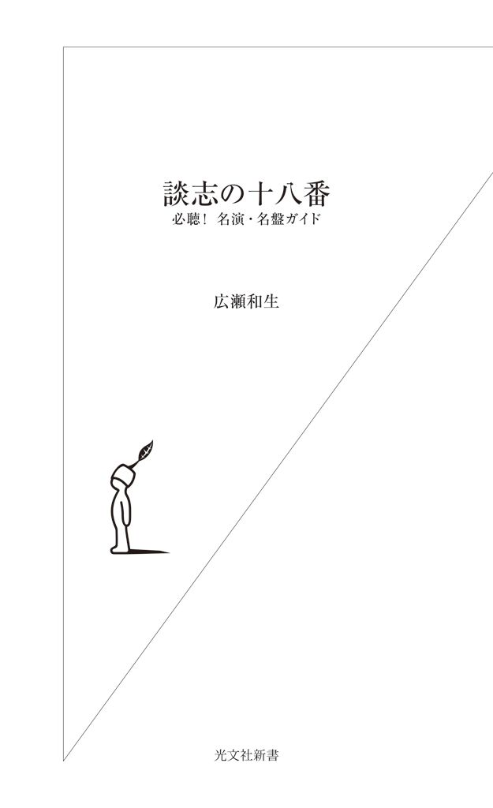

| 談志の十八番～必聴！ 名演・名盤ガイド～ | |
| 広瀬 和生 | |
| (2013) | |

二〇一一年十一月二十一日、立川談志が亡くなった。
世間的には「傲慢キャラの大物タレント」としての破天荒な言動ばかり注目されがちだった談志だが、亡くなったことにより、改めて「談志の落語」そのものに興味を持つ人が増えたように思う。
常々僕は「今の落語界には魅力的な演者が大勢いる。彼らをリアルタイムで追いかけないのはあまりに勿体ない」と、専ら現役落語家の魅力について書いている。落語は、目の前にいる同時代の観客に演者が語りかける芸能だ。だから本来、まず聴くべきは同時代の落語家である。
だがもちろん、録音・録画された名演を自宅で楽しむという行為そのものを否定しているわけではない。落語ファンにとって、今は亡き名人が残した選りすぐりの名演を聴くことは極上の楽しみだし、落語に興味を持った入門者が「まずは評価の定まった名人の音源を聴いてみる」ところから始めるのも自然な発想だ。談志が「金を払って落語を観るならあいつだけ」と讃えた古今亭志ん朝の名演に触れようと思えば、録音・録画されたものに頼る他はない。
そして、僕が追いかけ続けた談志もまた、とうとう録音・録画の中でしか会えない人になってしまった。
現代の落語界の活況を生んだ「中興の祖」談志の偉業を正当に評価するには、彼の著作や言動ではなく、「談志の落語」そのものに触れなくてはいけない。だから、談志が亡くなったことで改めて彼の落語に興味を持った人、「談志の落語は聴いたことないけど生意気だから嫌い」と避けてきた人、行きたくても談志の落語会に通うことが出来なかった人、そして最近になって談志の存在を知った人たちには、ぜひＣＤやＤＶＤで「談志の落語」に触れてほしい。彼は偉大なカリスマであり希代のアジテイターである前に、一人の「天才落語家」だったのだから。
とはいっても談志の手がけた演目はあまりに多く、現在残っている音源の数は膨大で、収録時期も昭和四十年代初期から平成二十二年までと幅広い。入門者はどこから手を付ければいいか、呆然としてしまうだろう。
そこで、これから談志の落語を聴いてみようとする人のために、最晩年まで談志の高座を追いかけ続けた長年のファンの立場から、「入門者にお勧めしたい十八番演目」という切り口で談志のＣＤ／ＤＶＤガイドを書いてみよう、というのが本書の趣旨だ。個々の演目について分析していく中で、「立川談志とはどんな落語家だったのか」を浮き彫りにすることが出来ればと思っている。
なお、第二章から第十一章までの各「談志十八番」演目については、古今亭志ん朝、三遊亭圓楽（五代目）、柳家小三治らの音源・映像についても簡単に触れた。談志とほぼ同じ世代に属する彼らがどのようなアプローチでそれらの演目に取り組んでいるか、聴き比べるのも一興だろう。
目次
オビ写真 橘蓮二
立川談志は二〇一〇年に出版した著書『談志 最後の根多帳』（梧桐書院）でこう書いた。
「談志ほど落語に深く興味を持った者は、過去一人も居るまい」
若くして天才と呼ばれ、マスコミの寵児となった立川談志。歯に衣着せぬ毒舌で知られた彼の本質は、「誰よりも深く落語を愛し、落語と格闘し続けた男」という、その一点にある。
現落語協会会長であり、五代目柳家小さん一門の弟弟子でもある柳家小三治は、談志を「百年に一人の素質。志ん朝さんも足元にも及ばない才能」と評した。古今亭志ん朝と言えば「名人に二代あり」を実現した落語界のスーパースターにして、誰もが名人と認めた「ミスター落語」。その志ん朝とも交流が深かった小三治もまた現代の「孤高の名人」だ。それだけに、この談志評は何とも重みがある。
この、小三治の談志評は、「だから落語だけやっていればよかったのに」という発言に続く。
確かに、談志自身「自分は落語の世界だけに収まる人間ではない」と発言していたし、参議院議員になったり、落語協会を飛び出して独立団体「落語立川流」を創設して家元と称したりと、高座以外での派手な活躍が目立ったのは事実で、彼のそういう態度が「あいつは生意気だ、慢心している」という批判を生んだ。談志の芸に惚れた人の中からも「上手いんだから落語だけやってりゃいいのに」という声が出ることは少なくなかった。
世が世なら、談志も落語に専念して「名人」と呼ばれる道を選んだだろう。落語が何より好きで、いつも落語のことばかり考えていたかったのが、本来の談志なのだ。一九六五年の著書『現代落語論』（三一書房）で、彼は「昔の噺家は落語一筋でよかった、羨ましいと、志ん朝と語り合ったことがある」と吐露している。これは本音だろう。
しかし、談志が落語家になったのは、日本人のライフスタイルが急激に変化した戦後高度成長期である。古典落語に描かれた人情も庶民の暮らしも過去のものになり、観衆が求めるものも変化しているのを感じ取っていた談志は、「このままでは落語は能のような存在になってしまう」と危惧し、「伝統を現代に」をモットーに落語と格闘し続けた。
この「落語は能のようになる」という予言ばかりが有名になってしまった感のある『現代落語論』だが、そこで書かれているのは、談志がいかに「落語の伝統」を愛しているか、ということだ。後年の挑発的な言動から、彼が落語の伝統を破壊しようとしていたように誤解する向きもあるが、彼が否定したのは落語界の「誤った伝統主義」であり、伝統を守ると称して何の工夫もせず教わったままの落語を垂れ流す怠惰な落語家である。談志は若き日から晩年に至るまで一貫して「伝統がなければ落語ではない」と明言していた。それを端的に表わしているのが、晩年の著書『談志 最後の落語論』（梧桐書院／二〇〇九年）で述べた「落語は江戸の風が吹く中で演じられるもの」という言葉だ。
談志は「落語の伝統は、もはや一般大衆には通じない」ことに絶望しながら、終生愛してやまない「落語という伝統芸能」の明日を想い、「現代の観客を相手にしながら落語家はいかにあるべきか」を模索した。「伝統」だけでは現代に通用しない。「現代」だけでは落語ではない。それが「伝統を現代に」の真意だ。結果的に落語が能のようにならず、現代のエンターテインメントの一つとして市民権を得ている現状があるのは、「百年に一人の才能」を持ち「歴史上誰よりも落語に興味を持った」立川談志という特異な人物が戦後高度成長期の落語界に出現し、平成に至るまで「伝統を現代に」という奮闘を続けてきたからこそである。談志こそ「落語中興の祖」なのだ。
数々の著書で後進に絶大な影響を与えた希代の論客、落語協会から飛び出して独立団体「落語立川流」を旗揚げした改革者、世相を斬る痛快な毒舌漫談の名手と、様々な顔を持った談志だが、古典落語の演者という部分だけにスポットを当てても実に多面的で、持ちネタの数が膨大なだけではなく、その種類も多岐にわたっている。
著書『最後の根多帳』の巻末付録として掲載されている持ちネタの数は二百十六。ただし、その中にはＣＤのために語り下ろしただけでほとんど高座に掛けていないようなものも含まれており、実際に「談志の持ちネタ」と言えるのは百数十席といったところだろう。同書の中で談志は「ネタは百を超えるくらいがちょうどいい」と言っているが、まさにそれを実践していたわけだ。
それらの演目に関して談志は「Ａ：多少の直しはあってもほとんど元のまま演じている落語」「Ｂ：サゲを直した落語、内容やテーマを変えた落語」「Ｃ：講談や小説等から作った落語、複数の落語を合体させて作った落語」の三種類があるという。
Ａには、八代目桂文楽へのオマージュとしてたまに演った『明烏』のような噺もあれば、『蜘蛛駕篭』のように師匠小さんの型を覚えて若き日の十八番と言われながら「小さんと内容が同じ」であることに嫌気が差して後年ほとんど演らなくなった噺もあり、『富久』『三軒長屋』のような正真正銘の「談志十八番」もある。
『最後の根多帳』でＡに分類された演目は、数としてはかなり多いが、談志の高座を追いかけた身とすれば「これも持ちネタに入れるのはちょっと......」という演目も少なくない。先述のように『最後の根多帳』では「何回か演ってみたものの演らなくなった噺」や「手がけていなかった噺をＣＤ企画のために録音しただけの演目」も持ちネタとしてカウントされているのだが、実はその中に多くの「Ａ」演目が存在するのである。たとえば三遊亭圓朝作の『鰍沢』がＡ演目となっているが、これはＣＤボックス企画「談志百席」のためにスタジオで語り下ろされただけであって、到底「談志の持ちネタ」と呼べる噺ではない。
Ｂには『居残り佐平次』『黄金餅』『紺屋高尾』『芝浜』『死神』『品川心中』『鼠穴』といった大ネタ、滑稽噺でいうと『粗忽長屋』『二人旅』『短命』『疝気の虫』『ぞろぞろ』『饅頭怖い』『やかん』『天災』等々、談志ならではの傑作がズラリと並ぶ。談志の専売特許というイメージが強い『鉄拐』や『九州吹き戻し』、一時期集中的に演って後年ピタッと演らなくなった『五貫裁き』『幽女買い』、晩年好んで演じた『田能久』、若き日の談志が掘り起こして寄席で大ウケしたので演り手が増えた『黄金の大黒』『芝居の喧嘩』、若旦那の了見が素敵な『よかちょろ』、三代目春風亭柳好や八代目春風亭柳枝らが亡くなって途絶えかけた名作を復活させた『野ざらし』、八代目桂文楽の十八番を改良した『つるつる』、三代目桂三木助に惚れてそのまま演っていたのをだんだん変えて結局サゲまで新しく創った『へっつい幽霊』等々、とにかく談志ファンにとっておなじみの噺の大半がＢであると言ってもいいくらい、ネタ全体の中で占める割合は高い。基本的に談志は、『権助提灯』だろうが『代書屋』だろうが『女給の文』だろうが、どんな噺を演るにしても独自の工夫を加えずにはいられない落語家だった。
Ｃは「才人」談志の名を世に知らしめた若き日の大傑作『源平盛衰記』や小咄を膨らませた『金玉医者』といった「談志にしか出来ない噺」を含むオリジナル演目。浪曲から作った『人情八百屋』『白井権八』、講談からの抜き読み『小猿七之助』、遠い吉原への夢と憧れを込めた『二階ぞめき』などがあり、どれも印象的だが、数としては少ない。
談志自身による、この「Ａ・Ｂ・Ｃ」の分類は、すでに熱心な談志ファンである人間にとっては興味深いし、立川談志が「伝統に立脚して創意工夫を凝らした落語家」であったことを裏付ける貴重な資料だが、これはあくまで「噺の成り立ち」を三種類に分けただけで、「入門者向けのガイド」を作るためには、噺の内容に基づいた「談志演目の分類」が必要だろう。先述のとおり談志は極めて「多面的」な演者だったのだから。
談志十八番として真っ先に挙がる噺に『芝浜』がある。談志の『芝浜』が落語史に残る傑作であることは間違いないし、談志自身こだわりを持っていた演目だ。「暮れには談志の『芝浜』を聴かなくては年が越せない」というファンもいたほどで、単なる「落語」の域を超えていたとさえ言える。
だが、人情噺『芝浜』は談志の多面性の中の一つの側面を代表するものに過ぎない。たとえば、若き日の談志が売りものにした『源平盛衰記』は、吉川英治の『新・平家物語』を基盤にしながら大量の現代的ギャグを詰め込んだ「地噺（演者の地の語りを中心に展開する演目）」で、抜群のリズム感で畳み掛ける「話芸の天才」としての技量を存分に発揮した談志オリジナル。二十代の談志はこれで寄席を爆笑の渦に巻き込んだ。「談志と言えば『源平盛衰記』だろう」という年配の落語通も多いはずだ。また、講談や浪曲をこよなく愛する「伝統芸能ファン」としての彼が好きな講釈や浪曲のネタを自ら手がけた『小猿七之助』『白井権八』『慶安太平記』といった「伝統の美学がすべて」という演目も、談志を語るうえでは欠かせない。
談志はパフォーマーであると同時に、最強の落語評論家でもあり、落語という伝統芸能の本質について、いくつもの名言を残した。曰く「落語とは人間の業の肯定」「落語はイリュージョン」「落語は江戸の風が吹く中で演じられるもの」等々。これらは一度に生まれたフレーズではない。『現代落語論』にはこの種の「落語の本質」論は無く、「落語は業の肯定」と書いたのは一九八五年の著書『あなたも落語家になれる』（三一書房）。ただし同書の執筆には三年かかっており、実際に談志が「業の肯定」論を唱え始めたのは一九八三年に立川流を創設する一、二年前のことだった。
談志は「人間とは理性よりも欲望に忠実であり、ときには不正を働く弱い存在。そういう人間の『業』を肯定するのが落語である」と喝破した。これが有名な「業の肯定」論だ。
その後、談志は「落語の形式を凌駕する自我」を強く意識するようになり、「落語には作品派と己派があり、自分は己派である」と主張する時期を経て、一九九〇年代になると「落語は非常識を肯定するもの」と言い始める。その「非常識の肯定」の発展形が「落語はイリュージョンだ」という発言で、一九九五年の著書『新釈落語咄』（中央公論社）には「立川談志は『落語』という人間の非常識を認め、その奥にあるイリュージョンまで肯定してやろうという発想で演っている」といった表現が見られる。
イリュージョンとは、理屈を超えた「何だかわからないモノ」のこと。人と人の会話は理屈で成立しているわけではない、人間は根源的に非論理的な存在であり、それを論理とか理性といった「常識」という枠組みに嵌めることで人間社会は秩序を保っているが、所詮そんな秩序は人間の本能に反しているもので、ときにはそれを解放してやらなければいけない、それが落語の役割だ......談志の言う「落語はイリュージョン」とはそういった意味だ。「ワケがわからない」人間の非常識という「真理」を解き放つのが落語リアリズムというものなのだと、談志は主張する。
一九九六年に発売されたＣＤボックスセット「立川談志ひとり会 第一期」のライナーノーツで、談志は自らの芸人としての変遷を以下のようにまとめている。
・落語を覚え威勢良く喋ってた。
・現代のギャグを取り入れ、漫談、諷刺が冴えてきた。人情噺も上手いしネ。
・落語に疑問を持ち始めた。俺には「小さい」と思い始めて嫌ンなった。
・落語の持つ「非常識」を肯定にかかった。
・その奥に存在する、イリュージョンを常識の世界に持ちこみ始めた。
・こうなると他の落語はツマラナくなってきた。
・最後は発狂（本人はキチンとしているが）した、と世間からいわれる......。
ここには、二十世紀の談志の変遷が集約されている。橘家圓蔵はよく「志ん朝さんは上手い落語家、談志さんは達者な落語家。自分はどちらにもなれないので面白い落語家を目指した」と言っていたが、若き日の談志はまさに「達者な落語家」だった。威勢の良い芸風に現代的なセンスを取り入れた談志の新鮮な落語は寄席で大いにウケた。かつての談志は自他共に認める「寄席の爆笑王」だったのである。桂米朝は「才人」と噂された談志の『源平盛衰記』を聴いて「なるほどこれは才人や」と感銘を受けたという。二ツ目の「柳家小ゑん」時代に「天才現わる！」と絶賛された才気煥発な若者は、真打昇進後、着々と「談志落語の世界」を確立していった。それが三十代の談志だ。
三十五歳で当選して六年間参議院議員を務め、四十代になった談志はすでに堂々たる「大看板」だった。だが、四十代も半ばになると、談志は落語に疑問を持ち始め、あれこれと考えを巡らした結果、「落語は人間の業を肯定する芸能」という結論に至り、それと時期を同じくして「落語立川流」を立ち上げて独自の活動を展開、五十代には持ちネタの再構築を進めていく中で「非常識の肯定」から「イリュージョン」へと進んでいく。
一九九六年、談志六十歳。この当時の彼は、イリュージョン落語を進化させていけば普通の観客には理解されない「狂気の世界」に行き着くと思い始めており、本来の「落語を愛してやまない談志」「伝統を大事にする談志」がそれに耐え切れなくなっていたフシがある。当時たびたび繰り返された「もう落語に飽きた」という発言は、その苛立ちから来るものだと僕には思えた。
だが、二十一世紀に入って、談志には「落語の神」が降りてきた。六十代半ばにして、談志はついにそれまでの試行錯誤のすべての集大成としての「談志落語」を完成させたのである。
二〇〇一年に古今亭志ん朝が亡くなり、マスコミが「落語の灯が消えた」と書き立てたことで、「冗談じゃねぇ！ まだ俺がいるじゃねぇか！」と談志の闘志に火がついたのは確かだろう。翌二〇〇二年に師匠小さんが亡くなったことも、談志に大きな影響を与えたように思える。二〇〇一年の談志、六十五歳。ここから二〇〇六年までの五年間こそ、間違いなく「立川談志の全盛期」であった。この時期の談志を聴かなければ、「談志の落語」は断じて語れない。
二〇〇八年以降、喉の不調が深刻化し、パフォーマーとしての談志の寿命が尽きようとする中で、評論家としての談志はこう書いた。
「落語は江戸の風が吹く中で演じられるものである」（『最後の落語論』）
人間の業を、非常識を肯定し、イリュージョンを放り込んで自我を解放するのが落語だが、それは必要条件であっても十分条件では無い。あくまでも「落語の伝統」を踏まえたうえでのイリュージョンでなければ、それは落語では無くなってしまう。その「伝統」を晩年の談志は「江戸の風」と言った。『最後の落語論』で談志は「伝統的な落語リアリズムをきっちり演れて、イリュージョンも理解できる、という両方が無ければ私は評価しない。なぜならイリュージョンは添え物だからだ」と断言している。
二十一世紀に全盛期を迎え、「談志落語」の集大成たる名演の数々で観衆を魅了した談志は、自らの落語家生命が終わろうという最晩年、再び若き日のスローガン「伝統を現代に」に戻った。「落語はイリュージョンだ」では無く「イリュージョンを江戸の風が包み込むのが落語だ」「江戸っ子の了見で非常識を肯定するのが落語だ」という結論に達したのである。
落語論の変化とともに「談志の落語」は変化し、二十一世紀に完成した。「業の肯定」「イリュージョン」「江戸の風」といったキーワードの助けを借りつつ、僕なりにその「談志の落語」を分類してみると、次のようになる。
（一）業の肯定......『黄金餅』『富久』『大工調べ』『木乃伊取り』他
（二）イリュージョン......『居残り佐平次』『鉄拐』『粗忽長屋』『二人旅』『松曳き』『風呂敷』『千早ふる』『やかん』『金玉医者』他
（三）江戸の風......『三軒長屋』『二階ぞめき』『九州吹き戻し』『夢金』他
（四）壮絶なドラマ......『鼠穴』『らくだ』他
（五）現代的人情噺......『芝浜』『紺屋高尾』『子別れ（下）』他
（六）講釈・浪曲ネタ......『小猿七之助』『白井権八』『慶安太平記』『人情八百屋』『青龍刀権次』他
（七）地噺......『源平盛衰記』『蜀山人』『お血脈』他
（八）名作の継承・改良......『野ざらし』『へっつい幽霊』『つるつる』『よかちょろ』『死神』『五貫裁き』『品川心中』他
（九）寄席爆笑系......『黄金の大黒』『饅頭怖い』『六尺棒』『短命』『ぞろぞろ』『権助提灯』『代書屋』『疝気の虫』『天災』他
（十）民話系......『田能久』『権兵衛狸』
もちろん談志の演じる噺はどれも「業の肯定」であり「イリュージョン」であり「江戸の風が吹いている」わけで、（一）（二）（三）は「どの要素が最も強いか」による分類。（三）にも「業の肯定」や「イリュージョン」の要素はあるし、（二）だって「江戸の風」は吹いている。
（四）は迫真の演技で聴き手を引きずり込む「名人芸」演目だ。演者としての談志の最大の特徴は、激情に駆られた男の怒りや理不尽な目に遭った男の悲痛な叫び等をリアルに描き出すメリハリの利いた演技力にある。そして、その演技力は一九九〇年代以降、歳を重ねるごとに研ぎ澄まされていった。無一文から築き上げた身代を一夜にして失い絶望に陥る男の物語『鼠穴』は、そんな談志落語のドラマティックな魅力を集約した一席。「談志の噺を一つだけ挙げるなら『鼠穴』だ」というファンも多い。
談志は、「落語は美談ではない」と主張した。「業を肯定する」とはそういうことだ。だが現実には「美談の落語」も存在する。いわゆる「人情噺」というやつだ。談志は、落語本来のあり方からすると過剰に思えるほどの感情注入を行なうことで、人情噺という「美談」を「業の肯定のドラマ」として再構築した。それが（五）で、落語通以外の一般人にとっては、談志の「芸の凄み」を最も実感しやすい。とりわけ『芝浜』が与える感動の大きさは突出しており、それゆえ「談志の『芝浜』は別格」とされた。談志の感情注入の技巧は六十代になってから数段レベルアップしており、『紺屋高尾』は二十一世紀に入って完成したと言っていいし、『子別れ（下）』に至っては二〇〇五年にネタ下ろししていきなり「十八番」になってしまったのだから凄い。
（六）は「演芸ファン談志としての演目」で、惚れた講釈師や浪曲師の芸を「真似したい」というファンとしての純粋な気持ちと演者としての稀有な素質がマッチした、談志ならではのレパートリー。（七）には時事ネタを大量に放り込んだ『源平盛衰記』系とエピソードを語り聴かせる『蜀山人』系の二種類がある。
談志は常々「昔は、誰かが売りものにした噺は他の落語家は手を出さなかったものだ」と言い、名人によって完成された「名作」を尊重していた。それゆえに手を出さなかった噺も多いが、（八）のように先人へのリスペクトを前面に出しながら継承した噺もある。ただ談志の場合、「忠実に再現すればいい」と思っていても、演っているうちに独自の演出やオリジナルのサゲが浮かんできてしまう傾向があり、結果的にそれは「談志ならではの噺」となっている。『へっつい幽霊』などはその代表例。また、意図的に「内容をひっくり返してやろう」と名作に取り組むこともあり、三遊亭圓生の『一文惜しみ』を作り変えた（談志が教わったのは五代目一龍斎貞丈）『五貫裁き』はそれが見事に実を結んだ作品だ。
二十一世紀の談志は大ネタで勝負する傾向が強かったが、若い頃は軽い噺に独自の工夫を加えギャグを大量に詰め込んで寄席を沸かせた「爆笑王」であり、他に演り手がいなかった『黄金の大黒』を「談志の噺」に作り変えて売りものにしたのを始め、内容をまったく変えた『ぞろぞろ』や談志の親子論とも言うべき『六尺棒』、独自のギャグセンスが全編に漲る『饅頭怖い』、強烈なエロを放り込みながらバカバカしい爆笑噺に作り変えた『短命』等々、実は「軽い噺」にこそ落語家談志のセンスが凝縮されている。本当の談志ファンならそういった滑稽噺の数々を忘れることは出来ない。それが（九）だ。
最後に（十）として「民話系」などと言ってみたが、この二席くらいしか思い当たらない。なのにあえて一つの項目にしたいくらい、この二席は談志ファンにとって思い出深い。
江戸の裏長屋に住む貧しい夫婦を主役とする『芝浜』。落語ファンの間では最もよく知られた人情噺だ。
腕はいいのに仕事もせず毎日酒を飲んでばかりの魚屋、勝五郎。ある朝、女房に無理やり起こされ久々に芝の河岸へ行くと、浜で大金の入った財布を拾う。「これだけ金があれば遊んで暮らせる」と豪勢に飲み食いして酔いつぶれた勝五郎が目覚めると、女房に「大金を拾ったなんて夢だ」と言われて呆然。「俺はそこまで性根が腐っていたのか」と心を入れ替えて酒を断ち、真面目に働いて人並みの幸せを手に入れた三年目の大晦日。女房が「あれは夢じゃなかった、お前さんを立ち直らせるための嘘だった」と詫びると、勝五郎は「今の暮らしがあるのもお前があれを夢にしてくれたおかげだ」と感謝する。「今のお前さんなら大丈夫」と女房が勧めた酒を口にしようとした勝五郎、ピタッと手を止め「よそう、また夢になるといけねぇ」......。
夫婦の情愛を描いた「いい噺」だが、この『芝浜』をケタ違いにドラマティックな噺に作り変えたのが、立川談志である。彼はこの噺を「よく出来た女房が亭主を更生させる美談」ではなく、「亭主を愛する可愛い女の噺」として演じた。
幕末から明治にかけて活躍した「近代落語の祖」初代三遊亭圓朝が「酔っ払い」「芝浜」「革財布」という三つのお題をもらって創作したとされる『芝浜』は、歌舞伎の世界でも『芝浜の革財布』という世話物狂言になっているくらいで、古くから有名な「大ネタ」だったように思いがちだが、実のところ「昭和の名人」三代目桂三木助が売りものにするまで、それほどポピュラーな噺ではなかった。あくまでも「軽い噺」であり、どちらかというと「大して面白くない噺」と思われていたという。
三木助は『芝浜』を、江戸情緒溢れる人情噺に仕上げた。持ち前の優れた描写力を存分に活かし、文学的な薫りさえ漂わせる三木助の格調高い『芝浜』は評論家に絶賛され、大衆の心を掴んだ。三木助の『芝浜』は八代目桂文楽の『明烏』や五代目古今亭志ん生の『火焔太鼓』、三代目春風亭柳好の『野ざらし』などと同じく「この人の、この一席」という名作落語として定着した。
一九五四年に三木助は『芝浜』で芸術祭奨励賞を受賞、それを受けて同年十二月二十日にＮＨＫで公開録音されたのが、現存する唯一の三木助の『芝浜』の公式音源で、二枚組ＣＤ「決定盤 三代目桂三木助落語集」（日本コロムビア）やＣＤブック「完全版 三代目桂三木助 落語全集」（小学館）などで聴くことが出来る。江戸前の口調で滑らかに進行していく三木助の『芝浜』は、今の感覚で聴くと「淡々と筋を追っているだけ」にも思えるが、少々気取った表現の数々が、当時の聴衆にとっては新鮮だったのだろう。三木助の『芝浜』は、落語というより「耳で聴く文学作品」の要素が強い。それは、日本人のライフスタイルが大きく変わっていく戦後社会において「古典」と呼ばれることになった落語という伝統芸能の、あの時代での「現代的なあり方」として斬新だった。
その三木助の、さらりと江戸前な『芝浜』の骨格を受け継ぎながら、談志は現代人としての感情を大胆に注入し、別次元の「感動のドラマ」に仕立てた。今でこそ多くの落語家が「泣かせる人情噺」としてドラマティックに『芝浜』を演じているが、その源流は間違いなく談志である。「三木助の名作」に疑問を持った談志は、独自の解釈で取り組むことで、『芝浜』を世代を超えて受け継がれる「暮れの大ネタ」として定着させた。その意味で、談志の『芝浜』は別格なのである。
談志は「変えようのない噺は、そのまま受け継いで演っている」と言い、その例として文楽の『明烏』や柳好の『野ざらし』を挙げた。一方、「名作とされながら疑問が残るので変え続けた」のが三木助の『芝浜』だ。
「誰よりも落語に興味を持ち、何よりも落語を愛した」談志が三木助の名作『芝浜』を「自分でも演ってみた」のは不思議ではない。だが「美談は嫌い、ゆえに人情噺は嫌い」という談志は『芝浜』のことを「好きな噺じゃない」とも言っている。ではなぜ演り続けたのか。
談志自身は「まあ、たまにはこういう作品があってもいい、俺はこういうのを演ると滅法上手いし」というような言い方をしていたが、名作と言われた『芝浜』に疑問を感じたまま放っておくことが出来ず、納得のいく『芝浜』を自らの手でこしらえなければ気が済まないというのは、理屈を超えた落語家立川談志の「業」だったのだ。「この噺を美談ではない落語にする」というテーマに取り憑かれてしまったのである。談志が好んで用いた表現を借りれば「好奇心」かもしれない。「談志ならどんな『芝浜』を創るか」を、観客としての談志が興味津々で追いかけていた。その「談志という観客の好奇心」を満足させるために、演者としての談志は「新しい『芝浜』」を模索し続けたのである。誰もが「これ以上変えなくてもいいのに」と思っても、「第一の観客としての談志」を意識している「演者の談志」は、それを変えずにはいられない。
半世紀近いその積み重ねの結果、到達したのが二〇〇七年の「伝説の名演」と言われる『芝浜』だった。
二〇〇七年十二月十八日、東京・有楽町のよみうりホールで行なわれた「リビング名人会」。前年こそ『芝浜』ではなく『文七元結』を演じたが、毎年暮れになるとこの落語会で談志の『芝浜』が聴けるというのはファンの間での「お約束」となっていた。もちろん談志はその期待を充分に知っている。この日、一席目で高座に上がった談志は『芝浜』について話し始めた。
「『芝浜』は三木助師匠のもので、三木助師匠が生きてる間は演らなかった」「その後、談志の『芝浜』になって、それが、可愛い女房の『芝浜』になった。それでいいっていうけど、同じことを繰り返すのは駄目なんだ、出来ない。飽きちゃう。だから変えるんだけど、変えたから必ずしも良いとは......それで去年『文七元結』演ったけどね」「だからまあ今年は『芝浜』演りますよ、ヤケクソでね」
談志は二〇〇六年頃から体調不良と喉の不調を高座で訴えることが増え、二〇〇七年には「俺はもうダメだ」「死にたい」といった言葉を口にするようになった。体力の限界と闘い続けた一年を過ごしての、暮れの『芝浜』である。「ヤケクソでね」というのはそういう意味も込められていた。一席目に演じた『意地くらべ』での談志の声は、この一年の大部分がそうであったように酷く掠れており、正直「これで『芝浜』出来るんだろうか」と思ったほどだ。
仲入り休憩を挟んでの二席目、「『芝浜』は三木助から談志、そして今日演るような形......」と言ってから、いよいよ『芝浜』に入っていった。三木助から談志、そして今日の形。どういうことかと思いつつ聴いた『芝浜』。それは、この一年間の不調が嘘のような、「まさに全盛期」という迫力に満ちた高座であり、今までとは違う、しかし紛れもなく談志の『芝浜』であった。「感動」などという言葉では到底表わしきれない衝撃......。
演り終えた談志は余韻を噛みしめるように何度も頷いた後、口を開いた。
「また新しい『芝浜』が演れました。......良かったと思います。ありがとうございました」
大きな拍手の中、幕が下りる。だが、まだ拍手はやまない。再び幕が上がる。
「一期一会ですね......アドリブでこんなに出来る芸人を、そう早く殺しちゃ、勿体ないような気もします」。ニコッと笑った後で、深く考え込むような表情に戻る。「楽屋に帰って、また反省というか、振り返ってみたいと思います。......くどいようですが、一期一会。いい夜をありがとうございました」
再び下ろされた幕が二度と上がることは無いとわかっていても、僕は席から立ち上がれずにいた。
三日後の落語会で談志はこの『芝浜』を振り返って言った。
「お前は今まで頑張ってきたからと、神様が喋らせてくれた......いや、神様が代わりに喋ってくれたのかもしれません」
翌年一月の「談志ひとり会」のプログラムで談志はこう書いている。
「暮れの『芝浜』、照れも遠慮もあるものか、すさまじい芸であった。芸術の神が立川談志を通して語った如くに思えた。最後はもう談志は高座に居なくなった。茫然自失、終わっても観客は動けず、演者も同様立てず、幕を閉めたがまた開けた。何も言えなかった。たった一言『一期一会、いい夜をありがとう』としか言えなかった」「こういう文を書くことに人一倍照れるこの私、家元も己れに負け、芸の神に感謝し、この一文となった。書いておきたかったのである」「もう出来ない、二度と出来まい。このために立川談志を七十数年も生かしておいてくれたのか。あの『芝浜』は人生、落語家の総仕上がりであったのか。だとすると、あとは抜け殻......」
この自他共に認める「伝説の名演」はＤＶＤとなって市販されている。ならば「談志の『芝浜』のベストは二〇〇七年のよみうりホール、それをＤＶＤで観ればいい」ということになるかというと、必ずしもそうとは言えない。二〇〇七年の『芝浜』は「談志の『芝浜』」の次の段階にあるものだった。それは「談志が消えて魚屋の女房が勝手に喋っていた」という境地である。「神が談志を通して語った」とはそういう意味だ。その凄みは、それまで談志の落語を追いかけ続けた人間がライヴで体験してこそわかるものだった。だからこそ「伝説」なのだ。
最初は三木助の『芝浜』を土台にして、そこに自分の口調、自分の個性を入れて「いい噺」として演じていた談志は、次第にそれが「いい噺」であることに嫌気が差してきた。「この女房は可愛くない」と思ったからだ。そこで談志は、『芝浜』を美談としてではなく、「ある夫婦の愛を描くドラマ」として演じ始めた。
女房は決して「ダメな亭主を立ち直らせようとしている」わけではない。ただ、亭主に惚れている可愛い女房である。亭主が大金を拾ってくれば女房も一緒に喜ぶ。だが大家にバレて仕方なく「夢だった」と嘘をつく羽目になるだけだ。亭主も、この可愛い女房に惚れている。だから嘘をつかれたと聞いても納得する。芝の浜の財布の一件から三年後、二人でささやかに暮らしていける今の幸せは何物にも代えがたい、この幸せだけは「夢」にしたくない......「また夢になるといけない」というサゲの一言には、そんな二人の想いが込められている。それが談志の『芝浜』だ。
自身の落語を「読み物」としてまとめた『談志の落語』（静山社文庫／全九巻／二〇〇九～二〇一一年）の中で、談志は『芝浜』についてこう解説している。
「従来通りの噺家が演るような美談にだけはしたくなかった。で、『夫婦の成り行き』に任せた。景色を描くのも、表通りに店が出来たの、弟子が居るの等々、全部カットした。スケッチとしての〝勝つぁんの魚はいいヨォ〟等の場面も要らない」（『談志の落語 三』）
そう、談志の『芝浜』からはどんどん他の要素が削ぎ落とされて、夫婦だけの噺となっていった。そこでの「可愛い女房」の描き方は次第に変化し、二十一世紀に談志はその路線を極めた。美談ではない夫婦の成り行きの物語として「可愛い女房の『芝浜』」は、談志が自ら自信を持って「もう言い訳のイラナイ落語ンなった」（『談志の落語 三』）と言い切るだけの完成度に到達した。
だからといって談志の「好奇心」は止まらない。そこでふと「魚屋の女房らしい、鉄火な姐御」で演じてみようと思ったのが、二〇〇七年の『芝浜』だ。「三木助があって、談志の『芝浜』があって、今日演るような形」とは、そういうことだった。すると談志の思惑から離れたところで女房がひとりでに動き出した......。
二〇〇七年の『芝浜』は、間違いなく「名演」だ。だがそれは、「談志の『芝浜』を超えたもの」だったのである。
現在、公式に発表されている談志の『芝浜』の音源・映像には、以下の十一種類がある。
（一）一九六六年十二月十四日・紀伊國屋ホール（落語ＣＤ全集「立川談志ひとり会」第一期／竹書房）
（二）一九八二年十二月九日・国立演芸場（落語ＣＤ全集「立川談志ひとり会」第五期／竹書房）
（三）一九九二年十二月九日・国立演芸場（ＤＶＤ「立川談志ひとり会 落語ライブ'92～'93」第三巻／竹書房）
（四）二〇〇一年十二月二十一日・よみうりホール（ＤＶＤ「立川談志 古典落語特選」第三集／竹書房）（「立川談志プレミアム・ベスト 落語ＣＤ‐ＢＯＸ」／竹書房）
（五）二〇〇四年十二月二十二日・よみうりホール（「談志ＣＤ大全 21世紀ＢＯＸ」／竹書房）
（六）二〇〇五年十二月二十二日・よみうりホール（ＤＶＤ「談志大全（下）」第十巻／竹書房）
（七）二〇〇五年十二月三十一日放送・ＴＯＫＹＯ ＭＸ（「談志・陳平の言いたい放だい」年末スペシャル）
（八）二〇〇六年二月十四日・アバコクリエイティブスタジオ（古典落語ＣＤ‐ＢＯＸ「談志百席」第五期／竹書房）
（九）二〇〇六年七月二日・ベトナム・ホーチミン市・ニューワールドホテル（インターネット映像配信コンテンツ「談志の高座＠クラウド」第６席／ｄＺＥＲＯ）
（十）二〇〇六年十二月二日・三鷹市公会堂（二〇〇八年三月九日放送・ＮＨＫデジタルＢＳ‐ｈｉ「立川談志 きょうはまるごと10時間」、二〇一一年十二月四日放送・ＮＨＫ総合「談志が死んだ」）（ＤＶＤ・ブルーレイ「映画 立川談志」／竹書房）
（十一）二〇〇七年十二月十八日・よみうりホール（ＤＶＤ「談志大全（上）」第十巻／竹書房）（「談志ＣＤ大全 21世紀ＢＯＸ」／竹書房）
談志は新宿紀伊國屋ホールで一九六五年十二月から毎月のペースで「談志ひとり会」という独演会を始めた。（一）は一周年を迎えた「談志ひとり会」で収録した初期のヴァージョン。このとき談志、三十歳。自身で言うところの「落語を覚え威勢良く喋ってた」時代で、基本的には三木助の型に忠実に演っている。ただし、冒頭には芝の浜で金を拾う前夜の「いつまでも休まれちゃ釜の蓋が開かないよ」「うるせぇな、明日から行くから今夜は飲みたいだけ飲ませろ」と魚勝夫婦が会話するシーンが挿入されており、いきなり「お前さん、起きとくれ」と始まる三木助の型とは異なる。談志は、三木助版で女房が亭主を起こしながら「お前さん、明日から商いに行くから飲みたいだけ飲ませろって、ゆうべあんなに飲んだんじゃないか」と訴えた「前夜の経緯」を、リアルタイムで進行する場面として冒頭で描いてみせたのである。談志のこのスタイルは終生続いた。なお、三木助の『芝浜』では財布の中に八十二両入っていたが、談志は四十二両で演じている。
一九七一年から七七年までの参議院議員時代を経て談志は落語家として格段に成長を遂げ、八〇年代に入るともはや、押しも押されもせぬ大看板となっていた。その「飛躍の時代」を象徴する名演が（二）だ。
談志は一九七〇年代に独自の『芝浜』を構築し、「よく出来た女房がダメ亭主を更生させる噺」ではなく「可愛い女房の噺」に変えていった。
勝五郎が酒を断って三年目の大晦日の場面。貸しはあっても、借りはない。しみじみと幸せを噛みしめる二人。
「お前のおかげだな」
「働いたお前さんのおかげだよ」
「お前のおかげだよ」
「そう？」
「そうだよ......おっ、鳴ってる......除夜の鐘」
「うん」
「ゴーン......百八つだな」
「うん、百八つ」
「百、八つ......」
「......百八つ」
見つめ合い、万感の思いを込めて「百八つ」と静かに繰り返す夫婦。談志の『芝浜』ならではの名場面だが、これはすでに七〇年代前半に出来ていた。
さらに、サゲ直前の場面。
「ねぇ、お酒飲んで」
「でも、飲んだら俺、酔うぜ」
「酔っちゃえよ！ ベロベロになっちゃえ！」
この「ベロベロになっちゃえ」も談志ならではのフレーズだが、やはり七〇年代前半には登場している。
ただし、談志の『芝浜』のハイライトである「嘘をついたことを女房が告白する長台詞」が格段にドラマティックになるのは、七〇年代終盤から八〇年代にかけてである。談志は一九七四年に演じた後、四年ほど『芝浜』を封印していた。そして一九七八年に再び演じた『芝浜』は、感情表現の激しさ、深さにおいて四年前とはケタ違いだった。
芸歴三十周年を記念して一九八二年四月、六月、九月、十二月、一九八三年二月に開催された「30周年ひとり会」。十二月の会で談志は『富久』『芝浜』の二席を演じ、談志落語の真髄を見せつけた。（二）はそのときに録音されたものである。立川談志、四十六歳。客席には素人時代の立川志の輔、立川談春もいて、それぞれこの日の衝撃によって談志への入門を決めたと聞く。かくいう僕も、この日の二席に魂を揺さぶられた「目撃者」の一人だ。それまで僕は古今亭志ん朝を一番に追いかけていたのだが、この日の「とんでもないものを観てしまった！」という衝撃によって、以後「談志追っかけ」に転じることになる。
三木助の名作とは別次元の、「談志の名作」としてのドラマティックな『芝浜』。この日の名演は、その完成形とも思えた。
嘘をつかれたとも知らずに酒を断って働きづめの亭主を見ていて、辛くて仕方なかったと女房が打ち明ける場面。
「おっかぁ悪い、おっかぁ悪いって......私どうしていいかわかんなくなっちゃった......おっかぁすまねぇな、おっかぁすまねぇなって、雪の降る朝早く行くときなんか......。
お前さんが一生懸命働いている間にお金が出たのよ、あたし出しちゃおうと思ったけど、なんだかわかんないけど私、今は出さないほうがいいって思ってたよ......でも、もう出していいんだなって思って出したの......ねぇ...うううう......（泣）。......話、これだけなのよ。話これだけだ......ねえ！ どうしたらいいのよ私、ねえ、お前さん教えて！ 腹が立つとわかるよ、わかるの！ 長年連れ添う女房に騙されてて腹が立つだろうけど、ぶたれたっていいの、ぶたれても蹴とばされてもいいけど、怒ったっていいけど捨てないで！ お前さん好きなんだもん！ ねぇ！ できたら勘弁してよ！（号泣）」
その後、談志の『芝浜』はさらに進化していくが、その原点は（二）である。二〇〇一年の「家元自薦」の名演や二〇〇七年の「伝説の名演」を聴く前に、まずは（二）を聴いておいたほうがいい。
四十七歳で落語立川流を旗揚げして「家元」となった談志は、五十代に入ると落語家として数段スケールアップした。彼自身の意識の中では「落語に疑問を持ち、非常識の肯定からイリュージョンへと向かった」時期だが、客観的に見ると、演者として円熟期に入ったのがこの時期だ。寄席に出なくなり、独演会中心になったことも影響しているのか、五十代の談志は大ネタにおける人物描写の深みが増し、ことに女性の描き方が格段に「上手く」なっていた。
そんな談志の『芝浜』を体験できるのが（三）だ。五十六歳、演者として、最も脂が乗りきった時期である。
（三）の大きな特徴は「落語的リアリズムの完成度の高さ」だ。
女性の描き方がリアルになったことで、女房の可愛さが際立っている。涙ながらに真実を打ち明け、「別れないで......ねえ、別れないで......お前さん好きなのあたし......ごめんよ！」とすがるような表情で訴える三年後の大晦日はもちろんのこと、前半で「四十二両拾ったなんて夢だ」と言いくるめる場面でも、それは顕著だ。「それじゃあ、あたしが騙したって言うの？ お前さんが拾ってきたお金をあたしがネコババしたって、そう言うの？」という訊き方が何とも可愛い。だからこそ亭主は「そうは言ってねぇよ、オメェが騙すわけはねぇ......」と考え込む。夢を見て借金を増やしたと信じ、大変なことになったと動揺する亭主が「おっかぁ、俺、死ぬ！」と口走ったとき、「うん、死のう。あたしも死ぬ。お前さんとならいいよ、死ねるよ」と即答するあたりもいい。
亭主の描き方も一段と深みを増した「名人芸」をＤＶＤで味わえる（三）は、談志の力量を知ってもらうにはいいのだが、惜しいかな、このときの談志はリアリズムを追究するあまり「百八つ」と繰り返す場面を抜いてしまっている。「型」としての談志の『芝浜』を（二）で知ったうえで観るほうがいいかもしれない。
二十世紀に出来上がった「談志の『芝浜』」は、二十一世紀に入ってさらに進化を遂げ、「可愛い女房の『芝浜』」となった。その出発点が（四）二〇〇一年十二月よみうりホールでの「家元自薦」の『芝浜』であり、完成形が（十）二〇〇六年十二月三鷹市公会堂での『芝浜』である。
二十一世紀の談志の高座の特徴は、すべてアドリブの「成り行き任せ」だ。談志が理想とするのは「演者の思惑を超えて登場人物が勝手に動く」落語であり、彼自身がそれを実感したものが「伝説の名演」と呼ばれる。二〇〇七年の『芝浜』が生まれるまで、二〇〇一年の（四）こそが「談志が納得する『芝浜』の名演」だった。
（四）に談志自身がいかに満足していたか、二〇〇二年に発売されたＣＤの解説で川戸貞吉氏が書いている。談志はこの『芝浜』を演じた翌月「こないだキザな部分をいっさい演らず、ほとんどが成り行きまかせ、ごくごく普通に『芝浜』を喋ってみた。ところがこれが馬鹿に良かったんだ」と語り、この『芝浜』を「音が残っているものの中でも最高の出来」と断言したというのだ。
談志は「キザな部分を演らず」「ごくごく普通に」と言い、川戸氏も「あっさり演ったその『芝浜』をここに収めた」という書き方をしているが、実際には非常にドラマティックであり、観客を引き込むパワーは過去の音源の比ではない。
二〇〇三年に発売になったＤＶＤ（当時はＶＨＳも発売された）の解説では吉川潮氏が「この日は落語の神様が立川談志に乗り移って、登場人物に言葉を発しさせたとしか思えない。天才が葛藤を繰り返した末に行き着いた究極の感情注入によって、芸が神業まで昇華したとも言える」と書き、山藤章二氏も「人間のわざを突き抜けた、鬼神がその身体に入り込んだとしか思えぬ〝気〟に圧倒された。『立川談志の到達点』をそこに感じた」と書いている。談志自身は「普通に」演じたのに、観客は「芸の神が宿った名演」と感じる。それが六十代後半、二〇〇一年から数年間の「談志全盛期」の高座なのだ。
（四）を聴くと、それまでの「談志の『芝浜』」から削ぎ落としたものが多々あることがわかる。それを指して談志は「キザな部分を演らず」と言っているのだが、ここぞという場面での「入り込み方」はすさまじく、アドリブの台詞がポンポン飛び出す。結果、登場人物はそれまでの「談志の『芝浜』」を遥かに超えた饒舌さを獲得している。
財布を拾ったと聞き「落とした人のものじゃないの？」と素朴な疑問をぶつける女房に対し、「海から獲るモノはみんな魚屋のモノじゃねぇか、漁師のモノじゃねぇか。じゃあオメェ、マグロ獲ったりサバ獲ったりしてそこへ何か置くか？ 海から上がってくるモノはみんなこっちのもんじゃねぇか、山から獲るもんはみんな猟師のもんと同じように、海はそこにあるんだから、俺が取ったのは運がいいんじゃねぇか。どこが悪いんだよ」とまくし立て、これでもう商いに行かなくていいと酒を飲む勝五郎。この浮かれっぷりの描写が、実に生き生きとしている。
「ああ、美味い......こんな美味い酒、初めてだよ。ゆんべと同じ酒？ 知ってるよ、でも......商いに行かなきゃいけねぇんだ、オメェが言わないようにしてるってのはわかってるよ、俺だってバカじゃねぇから、それだけに俺だって面白くねぇし辛ぇよ。それが引っかかってるから、飲んでどうのこうの言ってるけど、それがオマエ......ウッハッハッハ、どこも行かなくたって......四十二両、ドン！だよ、どうでェ、どうでェ、どうでェ、どうでェ！ ウッハッハッハ、四十二両ありゃあ生涯驚かねぇ、乗って来い持って来い何でも来いどこでも来いだよ、ハッハッハ！ 悪い後は良くなるんだ、七転び八起き、嘘はつかねぇね、神様は見てるんだ......ウッハッハッハ」
勝五郎が寝込むと、女房はひどく怯え、逡巡したあげく、無言で乱暴に起こす。なかなか言葉が出ない女房だが、意を決して「四十二両拾ったなんて夢だ」と必死に訴える。もちろん勝五郎は「馬鹿野郎、オメェに渡したじゃネェか！」と怒る。すると「拾ったお金が無いって、私がそのお金ネコババしたって、そう言ってるの？ 私がそのお金取っちゃった......そういうこと？」と問い返す。虚を衝かれた勝五郎、「ん？ そうじゃねぇよ、俺がそういうことオメェに思うと思ってんのか？ 俺はそういう男じゃねぇぞ馬鹿野郎！ だから......だからよ、だからおかしいんだよ馬鹿野郎！ オメェが隠すわけはねぇ、隠すわけねぇのに無いんだから夢じゃねぇか！......え？ 夢？」。勢い余って夢だと自分で断言してしまう勝五郎。成り行き任せでこの台詞。天才談志の面目躍如である。
浮かれただけに落ち込みも激しい。「俺、死ぬよ」と言い出す亭主。「死のう。あたしも死ぬ」と返す女房。「......死ぬのイヤだなぁ......何とかならねぇか」「あたしだって死ぬのイヤだよ」と言った後、女房がハッと何かに気づいた表情を見せる。
「ねぇ、一生懸命働いたら何とかならない？」「え？」「だからさ、無駄しないで一生懸命やりゃ、人間お金なんて貯めようと思ったら貯まったって話聞くじゃないか。貯めることが出来るんなら、減ってった分を返すってことも出来るんじゃないの、お前さん？」「うん......貯めようと思って貯めた人いるよな」「そうだよ、それは何もお金持ちばかりじゃない、みんな最初は無いんだから」「わかるよ、オメェの言うこと。元に戻していくのか」「そうよ、お金を貯めるのと同じことじゃないの？ お金を貯めるって、借金を返すことなんだよ、世間に顔向けが出来るようになるためには、お前さん、二人で頑張って貯めよう！ 返そう！」「返せるか？」「返せると思うよ......返せると思うよ！ 返そう、お前さん、返そう！」「どれくらいで返せる？」「どれくらいったって......半年......とにかく三月休んだんだから三月働いて、後は何とかなるよ！ ね！ 何とかなるよ！ やろう！ やろうよ！ やらなきゃしょうがないよ！」「わかった。やる。あったりめぇだ、やるよ！ よし、無駄なことしねぇ、まず酒飲まねぇよ俺。オメェにじゃねぇ、俺に言ってるんだ。俺に......だけど......」「だけどなんて考えないの！ だけどってのは、また後のことよ！」「わかった！ 明日とは言わねぇ、今日から行くよ」
女房の健気さが際立つ場面だ。
この後、従来であれば心を入れ替えた勝五郎がお得意先を取り戻していく過程を描き、三年後には裏長屋から出て表へ店を持って若い者の二人も使って......といった語りが入るのだが、（四）での談志はただシンプルに、こう言う。
「その年も暮れて、翌年。三年目の大晦日だ」
こういう大晦日もあるのか、いい春を迎えられるのはお前のおかげだと礼を言う勝五郎に「お前さんがやったからじゃないか」と返す女房。「馬鹿野郎、オメェがやったって言ってるじゃねぇかよ！」「こんなことで喧嘩したって」「喧嘩じゃねぇよ、そう言ってくれないと困るよ俺は。私がやりましたって言ってくれよ」「......私がやりました」。それを聞いて満面の笑みを浮かべ、除夜の鐘に聞き入る勝五郎。「鳴ってる鳴ってる！......百八つ」「百八つ」「百......八つ」「......百......八つ......」
この名場面を経て、三年前の真実を打ち明けるクライマックス。ここで一気に女房が感情を爆発させ、その結果、談志も予想しなかった台詞を口にすることになる。「お酒飲みたい」という一言だ。
大家に言われるがままに夢にしたと泣きながら告白する女房に、勝五郎は「明日の朝、真っ先に大家のところへ礼に行こう」と静かに言う。「あたしも一緒に行っていい？」「当たり前だ」。それを聞いた女房、一瞬の間を置いて、唐突に「ねえ、お酒飲もう」と訴える。これには勝五郎、驚いた。
「え？」「お酒飲もう。ね、飲んで。私も飲む。飲みたい」「え？ 酒？......ある？ いいのか？」「飲んで！ 飲もう、ね！」
演者の談志も意表を衝かれた、この展開。「飲んで」から「飲もう」へ。わずかの違いだが、談志にとっては決定的に大きかった。「許してもらうために酒を飲ませる」のでは無く、ワケもわからず衝動的に「私、お酒飲みたい、一緒に飲もう」と言ってしまう女房。この瞬間、談志の『芝浜』は「可愛い女房の『芝浜』」へと進化したのである。
（四）の『芝浜』以降、二〇〇五年まで僕は毎年暮れのよみうりホールで「可愛い女房の『芝浜』」が磨かれていくのを目撃した。
「磨く」といっても、テキストとしての安定感を得ようとしていたわけではない。予定調和を嫌う談志は常に全編アドリブの「成り行き任せ」で魚勝夫婦のドラマを描いていた。ただ、（四）で得られた「これが俺の『芝浜』だ」という確信は談志にとって実に大きかったようで、結果的にそれらは（四）から大きく逸脱することのないものだった。
二〇〇四年の（五）、二〇〇五年の（六）は、まさにそれ。この頃になると、年末のよみうりホール「リビング名人会」では談志の『芝浜』が聴ける、という暗黙の了解が落語ファンの間にすっかり定着しており、実際にネタ出しはしていないにもかかわらず、『芝浜』を聴きに来た客ばかりである。
二〇〇四年の（五）では、高座に登場してわりとすぐに「素直に演ればいいじゃないかと思うだろうけどねぇ......ええ、『芝浜』というお笑いを一席」と笑わせ、「三木助師匠の作った美学なんぞみんな無くなっちゃってる『芝浜』なんですけどね」と短いコメントを挟んで女房に「早く始めたらアンタ」と言わせて夫婦の会話に入っている。『芝浜』を待っている客の前で『芝浜』を演る、ということに対する躊躇が微塵も無い。そこで披露されたものは、まさに（四）に磨きを掛けた『芝浜』。バランスの良さ、安定度という点でお勧めのヴァージョンだ。二〇一三年発売の「談志ＣＤ大全」で初めて商品化されたものだが、このＣＤ十二枚組ボックスセットには、あの二〇〇七年の伝説の『芝浜』（十一）も併せて収録されているので、聴き比べると面白い。
二〇〇五年の（六）のマクラでも『芝浜』を待っている客の前で『芝浜』を演るのは照れると言いながら、まんざら嫌そうでもない。これまで『芝浜』という噺に取り組んできて、ようやく満足できる領域に到達した、という想いが言葉の端々からにじみ出ている。六十九歳の談志らしい変幻自在のアドリブが楽しめる素敵な『芝浜』で、四十二両を拾って戻ってきた直後の酒を飲んで浮かれる勝五郎の描写の楽しさは特筆に値する。
惜しむらくは、友達と飲んで騒いだ後もう一度起こされたとき、「四十二両って何のこと？」とシラを切る女房に対して「芝の浜で拾ってきた夢を見たって......」と勝五郎が口走ってしまうこと。すかさず「ここで夢って言っちゃどうにもならないよな」と自らツッコミを入れ、「ついでにサゲちゃおうか」と爆笑させたのはいかにも談志らしく、ファンにとってはこれもまた楽しみの一つ。完成度から言えば（五）のほうが上だが、談志らしい躍動感が感じられるという点で、これもいいヴァージョンだ。
ちなみにこのときのマクラで談志は「この噺はぜん馬って師匠から習った」と明かしている。ぜん馬とは三代目三遊亭圓馬の弟子で、後進に多くの噺を伝授したことで知られる五代目立川ぜん馬。談志は『鼠穴』もぜん馬から習ったという。
二〇〇五年十二月にＴＯＫＹＯ ＭＸで放映されたスタジオ・ライヴ（七）、二〇〇六年二月にスタジオで収録され「談志百席」に収められた（八）は、この時期の「可愛い女房の『芝浜』をアドリブで演じる談志」のドキュメンタリーとして貴重だが、そこには観客を前にしたライヴならではのエキサイトメントは存在しない。談志ファンならスタジオ・テイクゆえの（七）（八）の味わい深さを愛でるところだが、入門者にはお勧めできない。近い時期の録音ということで言えば、『芝浜』を待っている客の前で「どうだ」とばかりに演じた（六）を「言い間違いも含めた談志のドキュメンタリー」として味わうほうがいいだろう。
亜紀書房ＺＥＲＯ事業部は二〇一一年より、デジタル・コンテンツをインターネットで販売する会員登録制のショップモール「ファンプラス」（運営：ＮＴＴプライム・スクウェア）に「談志市場」というショップを開設、「談志の高座＠クラウド」「ここだけの家元」「談志の遺言」「談志の楽屋＠クラウド」等と銘打って、他では手に入らない談志の映像コンテンツ販売を始めた。（九）はその「談志市場」において二〇一三年二月に「談志の高座＠クラウド」の第６席として発売された、二〇〇六年の夏にベトナムで演じた『芝浜』の貴重映像。談志はベトナムが好きで何度も訪れていたが、これはホーチミン市の日本商工会からの招きで独演会を行なったときのものだ。正面からの固定カメラで談志の高座を見やすく撮影しており、画質・音質ともに良好。もちろんＤＶＤ発売を目的に撮影されたものには及ばないが、個人で楽しむには充分なレベルだ。
このときの『芝浜』は、夏のベトナムというシチュエーションでリラックスしていたのか、アドリブ度がいつにも増して高いわりに「談志の『芝浜』のテキスト」としての安定感は抜群という「程の良い」演り方だ。三年後の大晦日に「嬉しいと思う気持ちで聞く鐘の音......」と感無量で呟く亭主に対して「わかるよ、わかる」と嬉しそうに返した女房が、ハッと何かを思いついたような表情になり、突然あの財布を取り出そうとするところ等、魚勝夫婦の「成り行き任せ」のリアルな会話が印象に残る。
全体に、感情注入の度合いはそれほど強くなく、といってアッサリしているわけでも無い。ここ数年で完成に至った自らの『芝浜』の出来の良さを確認しながら演っているようにも見える。サゲを言った後のアフタートークで「自分の『芝浜』と従来の『芝浜』との違い」を初心者にもわかりやすく解説している点も含め、ある意味「公開稽古」のような、アットホームな雰囲気の『芝浜』だ。それにしても、よく夏のベトナムで『芝浜』を演ったものだと思うし、またそれをよく撮っておいてくれたものである。
なお、「ファンプラス」は二〇一三年十一月三十日をもってすべてのサービスを終了、「談志市場」のコンテンツは旧亜紀書房ＺＥＲＯ事業部の動画配信サービス「ｄＺＥＲＯ」が引き継いでいる。本書で紹介している「談志市場」のコンテンツはすべて「ｄＺＥＲＯ」で視聴可能だ。
完成度が高い「可愛い女房の『芝浜』」を、客を前にしたライヴで収録し「作品」として残しておきたいと談志が意図したと思われるのが（十）だ。談志は当然、この日ＮＨＫの収録が入ることを知っていた。だからこそ、毎年恒例のよみうりホールではなく三鷹市公会堂での独演会で『芝浜』を演った......そう考えずにはいられないほど、この日の『芝浜』の完成度は高い。たとえば（四）では芝の浜で勝五郎が顔を海面につけて口をゆすぎ、うがいする場面で「あんまりリアリティありすぎて私が二日酔いになってるみたいだね」と中断して「じゃあ演出変えようか」と水道の蛇口をひねって歯ブラシで歯を磨き、「よそう......考えたら海水で顔洗わないよな。落語的リアリティっていうかもしれないけど、気がついちゃったモノはしょうがない」と演者としての談志が客に語りかけているが、（十）にはそういう「遊び」が一切無い。
とはいっても談志のこと、もちろん全編アドリブによる「成り行き任せ」で、それゆえ新たな演出も多い。特筆すべきは「過去最高に女房が可愛い」ことである。
三年前のあの日、偶然出くわした大家に問い詰められたと打ち明ける女房。「あたしがそんなことするわけがない、大家さんなの......夢にしろ夢にしろって......お前さん人がいいから夢になって、どうするのかな、ヤケになっちゃうんだろうな、もう商いに行かないだろうなって思ったら、お前さんガラッと変わって働いてくれた、それも、箸の上げ下ろしにおっかぁ悪いな、おっかぁすまねぇな、おっかぁすまねぇなって......雪の降る日......お前さんが出かけていく......炬燵に入ってろよなぁ、風邪引くんじゃねぇぞってあたし、どうしていいかわからなくて......」
「勝手だけど、お願い、別れないで、お前さんのことが好きなの、別れないで......」。すがるような表情の女房に勝五郎は、「夜が明けたら大家のところに挨拶に行こう」とだけ言う。「あたしも連れてって」「当たり前だ」。それを聞いてまた泣き出す女房。
「ああよかった......あたし、どれほどお前さんが......あたし......あたし......」「バカなこと言うなよ、こっちだろ！ 野郎はバカだな......男はバカだ......ありがとうよ」「......勘弁してもらっちゃったんだ」「当たり前じゃねぇか、俺が謝ってるじゃねぇか」。嬉し泣きする女房、ハッとした表情で「お前さん、私お酒飲む」と勝五郎に告げる。「お酒飲みたい、お酒飲ませて。お前さんも一緒に飲んで！」「え？ いや俺は」「飲もう！」.........。
二十一世紀の「可愛い女房の『芝浜』」の集大成、それが（十）だ。二度のテレビ放送の後、この『芝浜』は「映画 立川談志」に完全収録され、二〇一二年から二〇一三年にかけて全国の映画館で公開された。この映画が、初めて談志の落語に接するような層にもアピールする作品となったのは、そこに収録された『芝浜』の完成度の高さによるところが大きい。嬉しいことに「映画 立川談志」は二〇一三年、竹書房よりＤＶＤ・ブルーレイで発売された。映画そのものの出来もいいので、お勧めしたい。
そして（十一）。自ら「芸術の神が立川談志を通して語った」と表現する二〇〇七年十二月のよみうりホールでの名演である。この日、談志は「伝法な魚屋のオッカァで演ってみるか」と思って高座に臨んだという。新たな『芝浜』への挑戦だ。演者談志は「可愛い女房」ではない『芝浜』を「成り行き任せ」で終盤まで演じていく。ところが、その「伝法なオッカァ」は、最後にすべてを告白するところに来て、突如演者の制御を振り切って感情を爆発させる。「演者を無視してオッカァが勝手に喋った」......それがこの『芝浜』の「伝説の名演」たる所以である。
前半は、淡々と進む。女房の「伝法な」キャラは、勝五郎を起こして夢だと言いくるめる場面で顕著だ。「いきなり四十二両拾ってきたって言われて信用する奴がいるもんか、バカヤロ」と言い放つ女房の断固たる態度に押され、勝五郎は「オメェが取るわけねぇしな......そうか夢か」と納得、続いて「どうしよう、おっかぁ？ どっか行くか？ 死んじゃおうか？」と投げやりに言うが、この女房は動じない。「何言ってんだよ、稼ぎに追いつく貧乏なしだよ！ こんなもん、普通にやりゃ百日もありゃ浮くよ」「百日で浮く？」「何とかするよ。それが私の仕事だろ？ 浮かせるよ」。この強い女房に励まされて勝五郎は酒をやめて働くことになる。
三年後の大晦日。除夜の鐘を聞きながら幸せを噛みしめ、「人間、変われば変わるもんだな。悪かったな、あの頃はな」と勝五郎が言うのを聞いていた女房、ごく軽い調子で「見てもらう物と聞いてもらいたい話がある」と財布を持ち出し、夢じゃなかったと告白。「てめぇ、あんとき！」と掴みかかる勝五郎。「放しとくれ、話はしまいまで」「それか！ 聞いてやる」
「海のものは魚屋さんのもの。そのとおりだと思った。それで嬉しくなったのかね......表、フラフラ歩いてたら大家さんにバッタリ会ったの」。女房の口調には悲壮感はまだ無い。「大家さんに『どうした？』って訊かれて、何でもないって言ったら、『風邪か？』『いいえ』『ちょっと来い』って、そう言うのよ。『何かあったな、バカにすんなよ、俺はダテに歳くってるわけじゃない。お前には何か大変なことがあったな』って睨まれて......あんな怖い人と思わなかった。だからあたし、全部言っちゃったのよ、海で拾ったんだからうちの人のもんだ、大丈夫だって。そしたら『バカヤロ！ 目を覚ませ！』って、そこにあった竿でビシッとあたしの横っ面ひっぱたいて『勝公は死罪だぞ！』って」
夢にしろと言われ、出来ないと言うと「死罪と思えばやれる！」と大家に一喝された、死罪にはなって欲しくないから、頑張って夢にした......。
「お前さんすっかり騙されちゃって、お酒やめて一生懸命働くようになって......あたし、嬉しいんだかなんだかわかんなくなっちゃった」
ここで一気に感情を爆発させる女房。「お前、優しすぎるよバカヤロ！」。涙混じりで、絞り出すように告白を続ける。「寒い朝、あたしに『炬達に入ってろ』って言って、一人で出て行って......」。秘密を持ち続けて、ずっと辛かった、胸が苦しかった......騙してる自分がイヤで......。
「もういい！ このお金をお前がそれを全部飲もうが、どうしようが、あたし、もうイヤ！ 自分がイヤだ！ もう騙してるのイヤだ......」
言い終えた女房が付け加える。「一つ頼みがあるんだけどな。捨てないでよ。お前さん好きなんだよ。お前さん大好きなんだ......捨てないでくれ！」
目頭を押さえて涙をぬぐった勝五郎、囁くように「しまいまで聞いた......ありがとう」と応じると、大家偉いなぁ......と嘆息。
「変なヤツだと思ってたけど、偉い大家だったんだ......よお、朝一番で大家のところに挨拶に行く」「あたしも連れてってくれる？」「あったりめぇよ。一緒に行くんだ」
それを聞いた女房、堪らず号泣。
「うわーっ！ うわーっ！ うわぁ......ワーッ！」
抑えていたものが一気に出てきたような、すさまじい勢いで、ただただ泣き続ける。
やがて、意を決したように一言。
「ねぇ、お酒飲もう」「えっ？」「何も言わないで一緒に飲んで！ あたし、怖いもん。一緒に飲んでくれないと、あたし怖い......頼むから、飲んで！ 飲んでくれないと怖い、お願い！」「......怖いから頼むってんなら......でも飲んだら俺、ベロベロになるよ」「なっちゃえよ、なろう！ ベロベロに酔っちゃえ！」「そうか、ありがとう......（飲もうとして）よそう」「どうして？」「また夢になるといけねぇ」
サゲを言い終えた直後の談志は、「満足」というより「呆然」に近い表情を浮かべていた。それが、この「女房が演者を無視して勝手に喋った『芝浜』の奇跡」を何よりも雄弁に物語っていた。
「談志の『芝浜』」が一九八〇年代に出来上がり、「可愛い女房の『芝浜』」が二〇〇六年に完成し、二〇〇七年に「談志を超えた『芝浜』」が出現した。「こんな噺は嫌いだ」というところから出発した談志は、美談ではなく人間の業を肯定する落語としての『芝浜』を見事に創り上げた。彼の落語論から見て否定されるべき『芝浜』を、談志は自らの代表作と言われて然るべきものに作り変えたのである。だからこそ、彼は二〇一〇年の著書『談志 最後の根多帳』でこう断言したのだ。
「『芝浜』は完全に私のものだと思っている」
志ん朝の『芝浜』
談志にとって唯一のライバル、古今亭志ん朝。彼の『芝浜』は父の古今亭志ん生譲りの型で、主人公の名前は熊。拾った財布の中身は五十両だ。いきなり女房が起こすところから始まるのではなく、腕のいい魚屋なのに昼飯で酒を飲むようになってから信用を失い、ヤケになって酒に溺れていったという経緯から入っていく。
演出上最大の特徴は、朝、女房に起こされた熊が芝の浜へ向かってからの行動を描写すること無く、財布を拾って戻ってきた熊が女房に「出かけた後、何があったか」を語り聞かせて五十両を見せる、という構成。三木助・談志の『芝浜』がポピュラーとなったため、かなり変わった演り方に思えるが、志ん朝が演るのを観れば「この演出のほうが自然」とも思えてくる。志ん生は「（三木助は）芝の浜のくだりが長すぎて、あれじゃとても夢と思えねぇ」と言ったというが、そういう父の理屈とは関係なく、志ん朝の華麗な芸風においては「あの声と口調で淀みなく語り聞かせられるほうが、行動を描写されるより心地好い」からである。
逆に三木助・談志が描写しない「湯へ行った亭主が友達を大勢連れてきて豪勢に飲み食いする場面」を志ん朝は熊の行動として進行形で演じるが、それがまた実に面白く、ちゃんと「見どころ」になっている。その後、夕方に起きた二日酔いの熊に「大金を拾ったのは夢だった」と言いくるめる女房の描き方も魅力的だ。
志ん朝は「美談は美談として演る」のがモットーで、『芝浜』においても「しっかり者の女房が愛する夫の身を案じて夢にする」演り方。真実を打ち明けて謝る女房に向かって「お手をお上げなすって」と熊が言うと自然に笑いが起こる志ん朝の『芝浜』は、夫婦の機微を描いた落語として実に楽しく、後味爽快な一席。冒頭で、「腕がいい魚屋と評判なのに酒好きなので昼飯のときについつい飲み過ぎてしまう」と、熊に怠け癖が付いた理由を演じるのも説得力がある。
ＤＶＤセット「落語研究会 古今亭志ん朝全集 下」（ソニー）に一九八〇年の高座が収録されていて、これは間違いなく名演だ。ＴＢＳの「落語研究会」では一九八八年にも志ん朝は『芝浜』を演じ、翌年オンエアされているが、一九八〇年のほうが威勢が良くて気持ちいい。
ＣＤでは一九七九年の高座がソニー「新選独演会」セットに収録されているが、小学館のＣＤブック「東横落語会 古今亭志ん朝」の第十集に収められた一九八二年十二月の東横落語会でのヴァージョンのほうが圧倒的にいい。二〇一二年に発売されたＣＤ三十枚組「古今亭志ん朝 大須演芸場」（河出書房新社）は、一九九〇年から一九九九年まで大須演芸場で行なわれた「志ん朝三夜」の音源を集めた志ん朝ファン待望の商品で、これも名演揃い。ここには一九九一年の『芝浜』が収められている。ちなみに、ソニーの「新選独演会」セットは同社が「落語名人会」シリーズでバラ売りしているものと内容がかなり被っていて、前述の『芝浜』と同じ音源は「落語名人会14 古今亭志ん朝６ 芝浜／百川」でも手に入る。
小三治の『芝浜』
「昭和の名人」世代では八代目三笑亭可楽が三木助より早く、戦前から『芝浜』を演っていた。その可楽の型で『芝浜』を演っているのが談志の弟弟子の柳家小三治。芝の浜で沖を見ながら「白んできやがった......カモメが飛んでる......お天道様上がってきた！ ぽつんと......あ、舟だ！ 房州もんだ、今日はいい魚が安く買えるぜ」と呟く場面、「奉公してる時分、人様の物は塵っぱ一つでも自分のものにはならないってご主人様から聞いていたから」大家さんに相談しに行ったという女房の説明、三年後に事情を聞いて感謝した亭主の「今日から俺はオメェのことオッカァと思わない、親と思うぜ」という台詞、夫婦の間に子供がいるという設定などが可楽譲りだが、淡泊な可楽の『芝浜』と異なり、小三治の『芝浜』は味わい深く温かい人情噺。三年ぶりの酒を勧められて「喉の奥のほうでグビグビって言ったやつがいる」というあたりが小三治らしい。
ＤＶＤブック「落語研究会 柳家小三治全集」（小学館）に一九九三年の高座が収められていて、出てくるなりマクラを一切振らずいきなり噺に入っている。『芝浜』に限らず小三治は近年の実演のほうがＤＶＤよりもずっと良いが、滅多に出会えない以上ＤＶＤに頼るのもやむを得ない。なお一九八八年の高座を収めたＣＤもソニーから出ているが、出来に関して言えばＤＶＤをお勧めしたい。
圓楽の『芝浜』
談志、志ん朝と共に「四天王」の一角とされた五代目三遊亭圓楽は、三木助に『芝浜』を教えた四代目柳家つばめからこの噺を教わったという。圓楽全盛期の『芝浜』（一九八七年）がＤＶＤセット「落語研究会 五代目三遊亭圓楽名演集」（ＥＭＩ）に収められており、随所に圓楽らしい台詞廻しが盛り込まれた骨太の人情噺となっている。前半の夫婦の会話に笑いが多い演出は圓楽ならでは。談志が嫌った「しっかり者の女房の美談」というコンセプトを堂々と前面に出している演り方には、コアな落語ファン以外の広い層にアピールする「わかりやすさ」という魅力がある。
健康上の問題により全盛期が意外なほど短かった圓楽は晩年、『浜野矩随』『文七元結』『芝浜』といった人情噺ばかり演るようになった。中でも『芝浜』には思い入れがあったようで、二〇〇七年に国立演芸場で『芝浜』を演じて引退を宣言したのはよく知られている。圓楽が私費を投じて一九八五年に建てた寄席「若竹」が一九八九年に閉鎖されることになったとき、その「最後の高座」で圓楽が演じたのもやはり『芝浜』だった。その若竹最後の日の『芝浜』はフォンテックからＣＤ発売されている。
その他、ＣＤセット「三遊亭圓楽独演会全集」（ＥＭＩ）には一九七九年の高座が収められているが、一九八七年や一九八九年の『芝浜』に比べると未熟さが目立つ。ただし、このＣＤセットには分厚いブックレットが付いており、そこで圓楽自身が語っている「平凡な夫婦のちょっといい噺」という『芝浜』解釈は興味深い。
ただ、全盛期の高座を多く目にした立場から言わせてもらえば、『芝浜』は圓楽十八番と言えるような作品では無かった。圓楽ならではの魅力を感じた演目は他にいくらでもあり、当人がなぜこの噺にそんなこだわりを見せたのか不思議だ。ひょっとすると「美談」を嫌った談志の『芝浜』への対抗心があったのかもしれない。
立川談志にとって「これが落語の了見だ」という究極の「談志十八番」を一つ挙げるなら、『居残り佐平次』ということになるだろう。
談志は、佐平次なる主人公の「成り行き任せ」の生き方をこよなく愛した。口八丁手八丁で周囲を丸め込み、調子よく生きていく「なんだかわからない奴」佐平次。談志の座右の銘「人生、成り行き」をそのまま地でいく男を描いた『居残り佐平次』こそ「非常識の肯定」そのものだ。
品川の遊郭を舞台とする『居残り佐平次』は、江戸末期に初代春風亭柳枝が創作し、明治から大正を生きた初代柳家小せんが完成させた廓噺。六代目三遊亭圓生、五代目古今亭志ん生といった「昭和の名人」がそれぞれ小せんの型に工夫を加えて演じ、ポピュラーな噺となった。
圓生の『居残り佐平次』は、こういう噺だ。
ある男が、仲間の四人を「品川に繰り込んで、一人一円の割り前でパッと遊ぼう」と誘う。「一人一円じゃ無理だろう」と渋る四人に、男は「あとは全部俺が引き受けるから」と請け合う。この男こそ佐平次で、「それなら」と品川の大店に入って五人で豪遊すると、佐平次は四人から一円ずつ集め、「明日の朝早く店を出て、この四円と俺の煙草入れをお袋に届けてくれ。当分それでやっていけるだろう。俺はここに居残りをする」と告げる。居残りとは、勘定が払えない客が精算できるまで店に残されること。「実は身体の具合が悪く、医者に『海辺の空気のいいところで養生しろ』と言われたが、そんな金も無い。そこで思いついたのが、この品川だ」というのである。
指示どおり翌朝四人が帰ってしまうと、佐平次の許に「お勘定を」と若い衆がたびたび来るが、その都度「後でドンとまとめて」とか「あの四人が今夜また来るのを待ってる」などと若い衆を煙に巻いて飲み食いし、もう一晩。次の朝、問い詰められた佐平次は「金は無い」と開き直って自ら蒲団部屋へと引き込もる。
惨めな境遇であるはずの「居残り」佐平次だが、部屋から抜け出しては女郎や店の雑用を引き受けたりしているうちに、物に動じない図々しさと調子の良さで店に溶け込んでいく。やがて若い衆のように働き始めると、芸達者で話が面白いところから客にも人気が出て、「居残りを呼べ」「よその座敷に出てます」「もらいを掛けろ」と大変なモテモテっぷり。「これじゃ俺たちのところに祝儀が入らない」と若い衆が旦那に直訴、旦那は佐平次を呼んで「いったん帰って、金が出来たら勘定を払いに来てくれ」と言うが、「悪事を重ねた身の上、ここを出るとお縄に......」などと主人を脅す。
そんな者を泊めていたと知れたら店が潰されると主人は大慌て。佐平次に着物一揃いと大金を渡して追い出すことに。店を出てすぐ捕まったりしないか若い衆が様子を見に追っていくと、佐平次は「お前の旦那はバカだな。俺は居残りを商売にしている佐平次ってモンだ。よく覚えとけ。品川ではまだやったことがネェからお前んとこに上がったんだ。旦那に『おかげで当分金には困りません』と、せいぜいよろしく言っといてくれ」と言い放つ。「どうした？」と尋ねる旦那に「とんでもない奴です、あいつは居残りを商売にする佐平次って男です」と答えると、「なんだと！ どこまで私をおこわにかけたのか」「へい、旦那の頭がゴマ塩ですから」
ここで「おこわにかける」とは、騙すという意味。語源は「おお、こわ」で、美人局に引っ掛かることを古くそう言ったのが転じたらしい。それを強飯の「おこわ」と掛けたサゲだが、圓生にとってさえすでに死語と言えるほど古い表現で、「良くないサゲだ」と感じていたという。そのため、マクラで「おこわにかける」の説明をしてから本編に入っていくことも多かった。
この圓生の型を作り変え、「イリュージョン落語の傑作」としたのが談志の『居残り佐平次』だ。
圓生は「佐平次が『居残りを商売にしている』などと言ったのはただのハッタリで、あんまり悪党に描いてはいけない」という芸談を残しており、「お調子者で悪ふざけの好きな男」として演じているものの、やはり「詐欺を企む男」としての小狡さは否めない。
談志は佐平次を「詐欺師」ではなく「行き当たりばったりの生き方をする奴」と捉え、非常識を肯定する落語としての『居残り』を創った。圓生の『居残り』から余分な要素をどんどん削ぎ落とし、「調子のいい男が、たまたま出会った四人の男と遊びに行き、後はその場しのぎの出たとこ勝負、店の主人から大金をせしめたのも単なる成り行き」という噺にしたのである。「金を使わずに養生をする」とか「遊郭の主人を脅かして金儲け」といった目的意識は皆無、「居残りを商売にしている」なんてハッタリも切り捨て、談志は佐平次を徹底して「ワケのわからない奴」として描いた。
談志の演じる佐平次は単なるダーティー・ヒーローでは無い。憎めない陽気さで周囲の人々を強引に巻き込むパワフルな人物であり、バイタリティ溢れる素敵な男。この佐平次が高座の上で生き生きと暴れ回るのが談志の『居残り』だ。全編、佐平次という常識外れの男の「成り行き任せ」の生き方を描くだけ。ストーリーはどうでもいい。そう談志は言い切った。観客は、高座の談志に乗り移った佐平次の「ワケのわからない」魅力に惹き付けられていく。その「ワケのわからなさ」こそ、談志言うところの「イリュージョン」なのだ。
談志の残した『居残り佐平次』の音源・映像には以下の七種類がある。
（一）一九六八年七月二十五日・イイノホール（落語ＣＤ全集「立川談志ひとり会」第二期／竹書房）
（二）一九七九年八月三日放送・ＮＨＫ総合「納涼落語特選」
（三）一九九三年五月十一日・国立演芸場（ＤＶＤ「立川談志ひとり会 落語ライブ'92～'93」第五巻／竹書房）
（四）二〇〇一年六月二十八日・京王プラザホテル・コンコードボールルーム（ＤＶＤ「立川談志 古典落語特選」第一集／竹書房）
（五）二〇〇三年四月二十二日・蕉雨園（ＤＶＤブック「談志独り占め」／講談社）
（六）二〇〇四年三月二十七日・町田市民ホール（ＤＶＤ「談志大全（上）」第九巻／竹書房）（「談志ＣＤ大全 21世紀ＢＯＸ」／竹書房）
（七）二〇〇八年二月二十四日（二〇〇八年三月九日放送・ＮＨＫデジタルＢＳ‐ｈｉ「立川談志 きょうはまるごと10時間」）
結論から言うと、最もお勧めしたいのは（六）。談志自身「あの町田の『居残り』は凄かった」と後々まで言い続けた「伝説の名演」である。
三十二歳の談志が演じた（一）は、まだ「覚えた落語に工夫を加えた」程度で、基本的には圓生の型。仲間の四人に声を掛けて品川に行き、「身体の具合が悪いから俺は養生のつもりで居残りをする」と打ち明け、四円を煙草入れと一緒にお袋に渡してくれと言うのは圓生そのままだし、佐平次が仲間に「居残りは慣れてる。品川だけだ、顔を知られてないのは」と語っているのも、従来の「居残りを商売にしていると嘯く男」の踏襲だ。
この口演で談志独自の演出が出てくるのはエンディング。旦那から着物と金をせしめた佐平次は、若い衆と会話すること無く「上手くいったぜ」と鼻歌交じりで家に戻る。と、そこには先に帰った四人の仲間と酒を飲んでヘベレケになっている母親が。「佐平次か？ 四円やそこらの金、もう無いよ！ もっと廻って金持ってこい！ 品川がダメなら銚子でも浦安でも」と母が言い放ち、「冗談言っちゃいけねぇ......おなじみの『居残り佐平次』でございます」とサゲる。
「意味が通じないサゲは変えるべし」という談志らしい工夫だが、中途半端な感は否めない。この「酔っ払った母親が出てくる」音源は（一）だけだ。
スタジオに観客を入れて収録された（二）では、後年の「談志の『居残り』」の原型が観られる。一九七九年にＮＨＫのテレビ番組「納涼落語特選」で放映されたもので、時間的な制約とシチュエーションの問題から明らかに談志のテンションは低く、躍動感が乏しい。二〇一一年、談志逝去の直後にこの映像が「日本の話芸」でオンエアされたが、これを追悼番組として放映されるのは、当人としては不本意だろう。
ここでは冒頭からして「見知らぬ四人に調子のいい男（佐平次）が声を掛ける」という設定に変わっており、「身体の具合が悪いから養生のために」という理由付けも「この金をお袋に渡してくれ」といった台詞も消えていて、佐平次を「なんだかわからない奴」として描いている。
サゲも変わった。佐平次に着物や金を与えて送り出した旦那が若い衆を呼んで「このお方をちゃんと表からお帰しして」と命じると、若い衆は「冗談じゃない、何であんな奴を表から！ せめて裏から帰しましょう」と反発。すると旦那が「あんな奴に裏ァ返されたら後がこわい」。初めて行った店にもう一度客として上がる「裏を返す」と掛けたこのサゲを、談志は晩年まで一貫して使い続けることになる。
五十七歳、円熟期に入った談志の『居残り』が（三）。談志が「この落語は成り行き任せで佐平次が暴れ回るだけの噺である」という結論に至った後の高座で、冒頭、「品川でワッと騒いで一人一円」と誘われた四人が口々に「あれ誰だい？」「知らない奴だよ」「祭になると神輿の上に乗って騒いでる奴じゃネェか？」「そういえば、いつか根津権現の階の下で鳩を頭に乗っけて猫持って俺を見てニヤッて笑ったの、あいつだよ。暗いところでジーッと」「ヘンな奴だね」と話す場面、豪遊した後で若い衆に「お勘定......」と言われるたびにトボケたり怒鳴りつけたり媚びたりと自在な対応をする佐平次の図々しさ、客を相手に「イヨッ！ ハッ！ デヤー、ドンドンドン、エヘラポーってもんでニシラツー！ ガリガリガリガリ！」と騒ぐ描写など、まさに全編がイリュージョン落語。この時点で「談志の『居残り』」はすでに完成している。
ただ、（三）には、いかにも談志らしい「不完全さ」がある。蒲団部屋に引っ込んだ後の佐平次が雑用を引き受けたり花魁に三味線を教えたりして店に溶け込んでいくプロセスを描く談志ならではの秀逸な演出を、この高座ではうっかり飛ばしてしまい、「紅梅花魁のところに通う勝っつぁん」という客の相手をする場面に入った後、「あれ？ 待てよ、この前にもうワンカット入れたいな」と中断、「不完全な修正だけど」といったん前に戻り、「マメに働き、器用さが重宝がられる佐平次」の姿を描いてから「それでさっきのシーンに戻る......（渋面で）ズボラな落語家だね」と呟くのである。ファンは「これぞ談志のドキュメント」と喜ぶが、万人向けではないだろう。
『居残り佐平次』は談志のネタの中でも最も「その日の状態に左右される」演目だった。談志はこう言っている。
「家元は、この佐平次に己を重らせただけで（中略）それだけにこの噺を演るときは、己の体力、気力が佐平次に乗り移らなければダメなのだ。佐平次の奴が家元の身体の中に入ってこないと、これまたダメである。で結果、読み物としたら面白くない。いえ、面白さが出ないのだ。ギャグというより、全篇佐平次の〝フラ〟とでもいうべき人生の間を楽しむのだから......」。そして、こう続く。「京王プラザの談志三夜（二〇〇一年）での『居残り』は凄かった。落語を超えていた。佐平次、それも談志の佐平次以外の何物でもなく、終わって、佐平次を抱き締めてやりたかった」（『談志の落語 八』）
その「京王プラザの『居残り』」が（四）。まさに「佐平次が談志の中に入った」高座だ。ひたすら調子が良くていい加減で人を食った、ワケのわからない佐平次のキャラが際立っている。全編アドリブ、「イリュージョン落語」としての面白さでは（六）に引けを取らない。サゲを言った後、いつものように自分が今終えたばかりの高座を振り返りながら、「大好きなんです、居残り。いいなあ、こんな奴みたいに生きられたら。居残りによろしく言っておきます」と笑った談志の満足そうな表情がすべてを物語っている。
（五）は大正生まれの写真家、田島謹之助氏が人形町末広で撮った芸人たちの貴重な写真の存在を知った談志が連絡を取ったところ、「談志さんの『居残り佐平次』を聴かせてくれたら、この写真をあげますよ」と言われ、「いいですよ、田島さん一人のために演りましょう」という経緯で演じられたもの。実際には観客は田島氏一人ではなく、スタッフや関係者がかなりの人数、客席側で観ていたようだ。
談志六十七歳、全盛期に収録したものだけに、（五）の出来も良い。バランス感で言えば「これが談志の『居残り』だ」という見本になり得る。ただこの「談志独り占め」なる商品、税込価格七六〇〇円のＤＶＤ二枚組で一枚に『居残り』が収められ、もう一枚は談志が語る「わが青春の人形町末広」。マニアには貴重だが、この値段で聴ける落語が『居残り』一席だけというのは、入門者には少々「割高」だ。
（六）については談志自身が『最後の根多帳』で「見事でした、我ながら......。終わって、そこ（舞台裏）にいた係の女性に抱きついたくらい、喜びに酔いましたっけ。談志イリュージョン落語の粋でした。無意識のアドリブが縦横無尽に走り回り、〝居残どん〟が勝手気儘に動き、それを談志がカメラを持って追っている、そんな感じであった」と書いているが、僕もこの日「名演だ！」と客席で興奮したのをありありと覚えている。
店の中で縦横無尽に働き廻る佐平次......と、高座の談志が不意に落語を中断して「こいつ、いい奴だね、凄いね」と佐平次を褒めた。これには震えた。「自分で喋っていながら、この野郎は凄ぇ奴だな、と......」と言った後、「自分の落語に酔ってやがる。始末が悪い」と笑う談志。そう書くと、形式を重んじる落語通からは「そういうところが談志の悪い癖。何もそこで中断しなくても」と言われそうだが、そんな談志に観客は明らかに同調していた。感極まって思わず演者が「凄い」と言わざるを得なかったことに、そこにいた誰もが納得していたのだ。高座と客席の波長がピタッと合った一瞬だった。
そこからサゲまで一気に駆け抜け、深々とお辞儀をした談志は、観客に向かって「『居残り』を演らせた、または演らせてくれた町田のお客さんに心から感謝します」と礼を言った。「歳によって、色々この人間像も、自分の了見で変わってくる。キザに言えば、全部自分の分身みたいなもんでね。......『居残り』を演れた喜びで今日は酒を飲みます。どうもありがとうございました」
忘れ得ぬ高座だ。これぞ談志！
（七）はＮＨＫデジタルＢＳ‐ｈｉのドキュメンタリー特番「立川談志 きょうはまるごと10時間」のエンディングを飾る落語として、観客のいないスタジオで撮られたもの。「余分なものをすべて削ぎ落として演る」というコンセプトで、稽古の段階では「良いものが出来そう」との予感があったというが、病魔による喉の不調はすでにこの時期かなり進行しており、スタジオでカメラを相手に演じるという状況もあって、本来の「躍動する佐平次」には出会えなかった。このテイクは、晩年の「最後まで落語と格闘した談志のドキュメント」に価値を見出せる純粋なファンのためだけのものである。
志ん朝の『居残り』
『居残り佐平次』は、古今亭志ん朝十八番でもあった。志ん朝の『居残り』は、志ん生の型をベースにしながら圓生の緻密な演出の良さも取り入れ、志ん朝ならではの独特な可笑しさ（いわゆる「フラ」というべきもの）が加わって、実に魅力的な廓噺の傑作となっている。作品としての『居残り佐平次』は志ん生や圓生より志ん朝のほうがずっと面白い。志ん朝演じる佐平次には清々しいほどの「軽さ」があり、弁舌さわやかに畳み掛ける流暢な台詞廻しは相手が疑問を差し挟む隙を与えない。そのあまりに巧みな話術には「進んで騙されたくなる」ほどだ。志ん朝の『居残り』の魅力とは「リズミカルな口調で調子よく人を丸め込む佐平次の粋な魅力」であり、それはある意味「志ん朝落語の魅力」そのものでもある。
商品化された志ん朝の『居残り佐平次』の音源・映像は以下の四つ。
（一）一九七八年十二月五日・三百人劇場（ＣＤボックス「新選独演会」／ソニー）
（二）一九八〇年五月十六日・東横劇場（ＣＤブック「東横落語会 古今亭志ん朝」／小学館）
（三）一九八五年三月二十九日・国立劇場小劇場（ＤＶＤ「落語研究会 古今亭志ん朝全集 下」／ソニー）
（四）一九九九年十一月十一日・大須演芸場（ＣＤブック「古今亭志ん朝 大須演芸場」／河出書房新社）
どれも素晴らしい出来だが、最もお勧めしたいのは（三）。高座から発散される、あの志ん朝独特の「明るさ」は、やはり映像付きで味わいたい。年齢的にも四十七歳とまさに脂の乗り切った時期で、非の打ちどころが無い完璧な高座だ。ちなみに志ん朝はサゲを変えることなく従来の「おこわにかける」「ゴマ塩ですから」を用いているが、（三）のマクラではさりげなく「おこわにかける」の意味を説明している。
四十代前半の（一）（二）もすでに名人の風格が漂っているが、注目すべきは晩年の（四）。十年間続いた名古屋での「志ん朝三夜」の最終回、最後の高座の記録だが、これがもう感動的なまでに面白く、とても二年後に亡くなってしまうとは思えない。ＣＤ三十枚組の「古今亭志ん朝 大須演芸場」、貴重な「宝物」である。
圓楽の『居残り』
五代目三遊亭圓楽の全盛期の『居残り佐平次』も、物に動じない豪快な佐平次の描き方が実に面白かった。枠組みとしては圓生の型を踏襲しながら、現代的な感性による台詞廻しを全編に導入して独自の色を出している。サゲは「あんな奴は裏から帰せばいいじゃないですか！」「いや、裏を返すのは懲りた」。談志のサゲに酷似しているが、『居残り』のサゲに関しては若い頃から二人で議論していたそうで、談志によれば「裏を返す」に引っ掛けるアイディアはファンから教わったものだという。
意外にもつい最近まで圓楽の『居残り』は映像も音源も市販されていなかったが、二〇一二年に発売されたＣＤ五枚組「ＮＨＫ落語特選 江戸・廓噺の世界」（テイチクエンタテインメント）に、一九八二年二月十九日「東京落語会」（イイノホール）での圓楽の『居残り』が収められた。まさに「全盛期の圓楽」の高座で、このときの映像は一九八二年三月二十七日にＮＨＫ総合テレビ「演芸独演会」で放送されている。ちなみに、この口演で圓楽は紅梅花魁の馴染みの客に「確かに俺は松岡克由、通称カッちゃんてぇんだ」と名乗らせているが、松岡克由とは談志の本名である。
小三治の『居残り』
柳家小三治の『居残り佐平次』は飄々とした佐平次がなんとも魅力的。振り回される人々の描き方にも「さすが小三治」という可笑しさがある。
圓生の型を基盤としているが、エンディングは小三治オリジナル。旦那を騙して店を出ていく佐平次が若い衆に「いい旦那だなぁ」と声を掛けると「おめぇに言われなくたって、このあたりじゃ仏と言われてる旦那だ」との返事。それを聞いた佐平次、少し陰のある表情で「そうだろうな......仏と言われるくらいの人じゃなきゃ、とてもここまで面倒見ちゃくれねぇ......なんだか、仏をそのまんま騙しっきりじゃ心持ちがよくねぇ。おい、奥へ行ってな、さっき俺がした話はみんな口から出任せ、嘘だって、そう言っといてくれ。また頃合いを見て、改めて伺うから」と去って行く。これを聞いた若い衆、慌てて旦那のところへ。「旦那、あの野郎さっき言ったのは嘘だそうです。口から出任せだって」「嘘？ さっきのあれが？ 驚いた......呆れた奴があるもんだね」「またぜひ伺いたいと」「冗談言っちゃいけませんよ。あんなモノに来られちゃいけません」「でもあの様子じゃ一度と言わず二度は来そうな気がします」「あんなモノに三度も来られてたまるか」「でも旦那が普段から仏と言われてる方ですから」
近年の小三治はほとんど『居残り佐平次』を演じなくなったが、二〇一二年に発売されたＤＶＤ十枚組「落語研究会 柳家小三治大全 上」（小学館）には一九九五年七月にＴＢＳ「落語研究会」（国立劇場小劇場）で演じた見事な『居残り』が収められている。「間」の使い方が絶妙な小三治ならではの名演だ。ＣＤでは「昭和の名人 古典落語名演集 十代目柳家小三治 九 居残り佐平次」（キングレコード）で一九七八年十月・安田生命ホールで収録されたものが聴ける。これも悪くないが、円熟味の増した一九九五年ヴァージョンのほうが圧倒的に良い。
ナンセンス落語『粗忽長屋』。五代目柳家小さん十八番とされ、若き日の立川談志をして「とても師匠にはかなわねぇ」と言わしめた滑稽噺だ。
粗忽、つまり「そそっかしい」ヤツが登場する落語はいくつもある。『粗忽の釘』『堀の内』『松曳き』『粗忽の使者』......これらの噺に出てくる粗忽者は、確かに度を越したそそっかしさ（あるいは忘れっぽさ）ではあるけれども、理解できる範疇だ。だが『粗忽長屋』における「そそっかしさ」はあまりに荒唐無稽。ヘタに演られると「そんなヤツいないよ」とシラケてしまう。
五代目小さんの『粗忽長屋』は、こういう噺だ。
ある長屋に、マメでそそっかしい八五郎と無精でそそっかしい熊五郎が隣り合って住んでいた。雷門のところで人だかりに出っくわした八五郎、「行き倒れだ」と聞いて好奇心が湧き、人の股ぐらを潜って前に出て死体を見ると、「あ！ 熊の野郎だ！」と仰天。
「知った人かい？」
「兄弟同様につきあって、生まれたときは別々だが死ぬときは別々だって仲だ。おい、しっかりしろ！」
「もう死んじゃってるよ。でも身元がわかってよかった」
「なにぃ？ よかったなんてところをみると、テメェが絞め殺したな」
「引き取り手がわかってよかったってんだよ」
だが八五郎が言うには、熊には身より頼りが無いという。
「じゃあ、お前さんが引き取って......」
「でも『あの野郎うめぇこと言って持ってっちゃった』なんて痛くもない腹ァ探られてもねぇ......。じゃあ、当人をここへ連れてきましょう」
「当人って？」
「だから行き倒れの当人を」
「しっかりしなよ。この人、身より頼りが無いんだろ？」
「ええ、かわいそうなヤツなんですよ。今朝ちょいと誘ったら『気分が悪い』なんて......」
「今朝会ってるの？ じゃあ違うよ。この人ゆんべからここに倒れてるんだから」
「でしょう？ だから当人が来なけりゃわからないってんですよ。テメェでテメェのことがハッキリしない野郎ですからね。ここでこんなンなっちゃってるの今朝まで気づいてないんですよ。すぐ連れてきますから、ここへ並べて見て、ああこれなら間違いねぇなってことになれば安心して渡せるでしょう？」
八五郎、そう言い残して熊の許へ急ぎ、「お前はゆうべ浅草で死んでるよ」と告げる。
「俺が？ よせよ兄貴、俺は死んだような心持ちはしねぇ」
「心持ちなんてすぐにわかるもんか。俺はこの目で見てきたんだ、迷うんじゃないよ」
「でも、こうやってここで話をしてる」
「だから死んだのがわかってねぇってんだ。ゆうべどこ行った？」
「吉原ひやかして帰りに五合も飲んだかなぁ、ぶらぶら歩いて観音様の脇を抜けたまでは覚えてるんだけど、それから先どうやって帰ったか」
「それが何よりの証拠じゃねぇか、お前、悪い酒にあたって観音様の脇へ来てひっくり返って、死んだのも気づかず帰ってきちゃったろう！」
「言われてみるとどうも今朝、心持ちがよくねぇ」
「それ見やがれ。だから早く行けよ。お前の死骸を引き取りに行くんだ」
「俺の？ でもこれがあたしの死骸ですなんて今さら決まりが悪い」
「何言ってやがんでぇ、当人が行って当人のモノをもらってくるのに決まりが悪いことがあるか。向こうだって当人に出てこられたらもうどうしようもねぇだろう」
雷門へ戻ってきた八五郎は「当人を連れてきた」と言い張り、連れてこられた熊五郎も「すいません、ゆんべここで倒れちゃったそうで」と、これまたワケがわからない。
「弱ったなぁ、同じような人が増えちゃったよ......あなた、これ見てごらんなさい」
「いえ、なまじ死に目に会わないほうが」
「熊、向こうじゃ並べなきゃ安心できねぇんだよ、いいから見ろ」
「（おそるおそる見ると）これが俺か？ なんか、きたねぇツラだ」
「死顔なんて変わるもんだよ」
「顔が長いよ」
「夜露に当たって伸びちゃったんだろ」
「そうかぁ......？......あ！ 俺だ！ やい、この俺め！ あさましい姿になりやがって」
「泣いたってしょうがねぇ。頭のほうを抱け、俺は足を持つ」
「おいおい、それ抱いちゃ困るよ！ 抱いてわからないってなぁ......よくご覧なさい、あなたじゃないんだから」
「うるせぇ、当人が見て俺だってんだ、間違いねぇだろ！ いいから抱け抱け」
「......なんだか兄貴、わかんなくなっちゃったな......抱かれてるのは確かに俺だが、抱いてる俺はどこの誰だろう？」
小さんは「マメでそそっかしい男」と「無精でそそっかしい男」を落語的リアリズムで見事に演じ分け、なんともトボケた味わいのある噺に仕上げた。とはいうものの、やはり「自分が死んだと思い込む」ほどの粗忽というのはあまりに荒唐無稽で、小さんの名人芸をもってしても、必ず爆笑を取るとは限らなかった。
この『粗忽長屋』を、談志は独自のアプローチで「イリュージョン落語の傑作」に作り変えた。曰く「これは『粗忽長屋』じゃない、『主観長屋』だ」。この解釈が、一度は「小さん師匠にはかなわない」と諦めかけた難しい噺を、「問答無用で爆笑を巻き起こす談志十八番」へと変えた。このあたりに「誰よりも落語を愛した男」立川談志の真骨頂がある。
談志は「そもそも『粗忽長屋』に出てくる連中は粗忽なのか」と疑った。『粗忽の釘』に出てくる亭主は確かにそそっかしい。だが、『粗忽長屋』の八五郎や熊五郎は「そそっかしい」というのとは違うだろう。では何か？ 「とんでもなく主観の強いヤツと、それに引きずられてしまったヤツ」なのではないか。それが談志の出した答えだ。
「あまりにも主観が強いヤツに出会うと、自分の死までわからなくなってしまうのではないか」と談志は言う。人の存在は他人が決めることであって、いくら自分で自分を証明しようとしても、他人が否定したら存在さえ危うくなる。八五郎という「思い込みの激しいヤツ」がいて、一度「この死骸は熊五郎だ」と思い込んだら、もう彼の主観の中で熊五郎は死者だ。人一倍「主体性の弱いヤツ」である熊五郎は、八五郎の揺るぎない自信に引きずられて「そうか俺は死んだのか」と納得させられてしまう。「そそっかしさ」を描く噺ではなく、八五郎の主観が熊五郎の存在を否定するという「非常識が常識を凌駕してしまった状況」を描く噺、ゆえに『粗忽長屋』ではなく『主観長屋』だと主張したのである。
いわゆる『主観長屋』も、ストーリー展開は小さんの『粗忽長屋』と同じ。ただ、「思い込みの激しい」八五郎と「主体性の無い」熊五郎のキャラを表現するために、談志は独創的な台詞廻しを随所に投入、とりわけ八五郎の饒舌さはこの男の「非常識」を際立たせた。
たとえば、熊五郎には身より頼りが無いと説明する場面。
「ひとりぼっちなんだよ、天涯孤独。かわいそうなヤツなんだよ。世の中でコイツが一番かわいそう。二番目がマッチ売りの少女で三番目が安寿と厨子王」
「じゃあ大家さんか誰か」
「家主？ ダメだよ不実なヤツだから！ この間も糊屋の婆ァが死んだんだ。七十二だよ。線香一本あげに行かないよ。店賃が三つだか四つだか滞ってるって、そんなもんじゃねぇだろうよ、人間死にゃあ仏だろ？ 大家ったら親だよ、線香くらいあげたってバチあたらネェだろうよ、ええ？ どう思うよ、この了見！」
当人を連れてくると主張する場面では、「今朝会ってるんじゃ違うよ」と言われていきなり怒り出す。
「ゆんべからここに倒れてたって、そりゃおかしいじゃねぇか！ 俺は今朝会ってるのに、それじゃ理屈に合わねぇだろうよ！ ダメだよヘンな話しちゃ。違うって？ 違うことを相手に押しつけて威張ってちゃダメだよ、こっちが違うって言ってるんだから」
「ちょっと落ち着いて......」
「友達がこんなンなっちゃってるのに落ち着いていられるか！」
俺は死なないという熊五郎に対しては、こう食ってかかる。
「死なない？ どんな人間だって死ぬだろうよ！ 死にたくないって気持ちがそう言わせてるのはわかるよ、でもみんな死ぬんだ。太閤様だって清正公様だって、かわいそうに酒屋の小僧なんざ十二で死んだろ？ 死にたくないってのと死なないってのは違うよ。いいか、この俺が言ってるんだぞ！ 他のヤツが言ってるんだったらたとえ死んでても『死んでない』って言っていいよ、だけど俺が見てお前に言ってるんじゃねぇか。第一お前、顔色が良くないよ。気持ち悪いだろ？」
「良くねぇな」
「良くないじゃなくて悪いだろ？」
「......」
「悪いだろ？ 悪いだろ？ 悪いだろ？」
「......悪い」
「ほら見ろ死んでるんだから悪いんだよ。悲しいだろ？ 泣け泣け、俺も泣いてやる」
極めつきは、死骸に対面して自分とは思えない熊を説得する八五郎の台詞だ。
「いい加減にしろ、往生際の悪いヤツだな！ だから毎朝顔を洗えって言ってるだろ？ 人間、顔洗って髭でも剃りゃあ鏡を見るだろ。鏡を見りゃ自分の顔がわかるだろ？ 俺なんざ毎日自分の顔見てるから向こうから俺が来ても『あ、俺だな』ってわかる。お前がお前だってこともわかる。お前のことがわかって俺のことがわかって両方わかってる俺が死骸を見てお前だって言ってるんだからお前だろ！ お前は死んだんだろ！ 死んだ！ 死んだ！ 死んだ！」
「......死んだ」
「ほら見ろ死んだ！」
「悲しいな......この悲しみは死んだ者にしかわからない」
かくして熊五郎は自分の死骸を抱いて、なんだかわからなくなるのである。
談志の『主観長屋』が問答無用で爆笑を誘うのは、随所に見られる独創的な台詞廻しによるものだが、それは落語的リアリズムを表現する抜群のテクニックに支えられており、根底には「友達想いの八五郎」と「八五郎を信頼する熊五郎」の友情がある。「落語的リアリズム」と「友情」......それは小さんの『粗忽長屋』に通じるものだ。だが談志の場合、そこに「粗忽ではなく主観の強いヤツの噺」という解釈が加わったことで、持ち前の「威勢のいい語り口」が強力な武器となった。観客に「そんなヤツいないよ」と冷静になる暇を与えないほどポンポンと畳み掛ける演出は、『主観長屋』だからこそ似合う。そして「独創的な台詞廻し」も談志の「威勢のいい語り口」と「表情などのリアリズム」があればこそ威力を発揮するのだ。
もともと「非常識を肯定する」という意味で『粗忽長屋』は談志にとって「落語の中の落語」と言える噺だ。その『粗忽長屋』が本質的に内包する「イリュージョン」を、談志は「主観」というキーワードを用いて表に引っ張り出した。ナンセンス落語の『粗忽長屋』は、談志が『主観長屋』という新解釈を取り入れたことで、初めて「わかりやすい爆笑落語」となったのである。
この談志の鋭い着想は、小さんにも影響を与えた。元ＴＢＳ演芸プロデューサーの川戸貞吉氏は若き日から談志と交友があったことで知られるが、彼の著書『新現代落語家論』（弘文出版）によれば、談志は師匠小さんに「もう一度『粗忽長屋』を練り直したらどうだ」と迫ったことがあるという。その問題提起に対する自らの回答として談志が提示したのが『主観長屋』だったのだろう。そして談志の『主観長屋』を聴いた小さんは、以降「粗忽な人間」を強調して全体にわかりやすい演出に変えた......と、これは小さん一門の柳家小里んが『五代目小さん芸語録』（聞き手・石井徹也／中央公論新社）で語っている。小里ん曰く、談志版『主観長屋』とは『粗忽長屋』をわかりやすく解説したもので、小さんもそれを聴いて「自分の感性だけで演ってるとお客にはわかりづらいところがある」と気づいたのではないか、というのだ。凄い師弟関係ではないか。
談志の『粗忽長屋』の音源・映像には以下の八種類がある。
（一）一九七四年一月八日・紀伊國屋ホール（落語ＣＤ全集「立川談志ひとり会」第三期／竹書房）
（二）一九七八年九月二十八日・イイノホール（落語ＣＤ全集「立川談志ひとり会」第五期／竹書房）
（三）一九八四年四月二十二日放送・フジテレビ系「花王名人劇場」・国立演芸場
（四）一九九三年六月二十三日放送・フジテレビ「落語のピン」・深川江戸資料館（ＤＶＤボックス「落語のピン セレクション」Ｖｏｌ．弐／ポニーキャニオン）
（五）一九九四年十二月十三日・池袋メトロポリタンホール（「立川談志ひとり会 落語ライブ'92～'93」特典ＤＶＤ／竹書房）
（六）二〇〇二年九月五日・東京芸術劇場中ホール（ＤＶＤ「立川談志 古典落語特選」第五集／竹書房）
（七）二〇〇七年四月二十四日・よみうりホール（ＤＶＤ「談志大全（上）」第二巻／竹書房）
（八）二〇〇七年十月二十七日・中国・大連（インターネット映像配信コンテンツ「ここだけの家元」第１巻／ｄＺＥＲＯ）
談志三十八歳の（一）はまだ『主観長屋』にはなっていない。若々しく威勢のいい口調が魅力だが、小さんの『粗忽長屋』からいかに離れるかを模索していた時期で、台詞廻しなどに後年の独創性は無い。ただ、マクラが興味深い。ここで談志は「落語コンクールについて落語協会の理事会で協議したとき春風亭柳朝（五代目）がＮＨＫの意向ばかり気にしていた」というエピソードを披露、「それを見てて、これが『粗忽長屋』だと思った。つまり主観と客観がわからなくなっちゃうんです」と語っている。この「理事会の柳朝が『主観長屋』のモデル」というのは談志が後に川戸貞吉氏に語っており、すでにこの時期「粗忽ではなく主観」というアイディアが芽生えていたことがわかる。
（二）は『主観長屋』誕生の瞬間だ。「新しい『粗忽長屋』が出来た」という談志がこの日それを披露すると宣言、舞台袖で川戸氏に「間違いなくいいと思うよ」と言って高座に上がったという。談志四十二歳、威勢の良さに熟練が加わった時期で、周囲を巻き込む八五郎のパワーがすさまじい。「マッチ売りの少女」で無くて「舌切り雀」が引き合いに出されていたり、後年の台詞廻しに比べると細部での違いは色々あるが、抜群のリズム感で観客を引き込む談志ならではの『主観長屋』の醍醐味が味わえる。
（三）は二〇一二年四月十八日に放送された「徳光和夫のトクセンお宝映像！」（ＢＳ日テレ）でも紹介された映像だが、商品化されていない。談志四十八歳、まさに脂の乗りきった時期で、リズム・メロディ・演出の完成度などすべてにおいて最高峰の名演だった......と思われるのだが、「花王名人劇場」（関西テレビ制作）で放送する際に編集が施されたものか、「俺は向こうから俺が来ても『あ、俺だな』ってわかる」のくだりが丸々カットされている。『最後の根多帳』の中で「『主観長屋』であることを強調するために、あのセリフを入れている」と書いているほど重要な場面だけに、この時期の談志がそれを言い忘れたとは考えにくい。ノーカット版の映像が残っていたら商品化を願いたいが......。
（四）はアドリブ性が非常に高い口演。談志五十七歳、やや会話のテンポが遅くなり、「畳み掛ける台詞の迫力で圧倒する」八五郎のパワーは以前ほどではないが、全編アドリブで意表を衝くフレーズが続出、実に可笑しい。熊が「でもさっきウンコしたよ」と反論すると八五郎「死にグソだよ」と即答、あとで行き倒れの世話をしている人に八五郎が「ウンコしたから死なないなんて、そういうのも可愛いですよね。最期の言葉として許せると思うんですよ」と言ったりするのはこのヴァージョンだけ。「イリュージョン」を模索している時期ゆえの不完全さ、「落語のピン」放送用ゆえのテンションの低さも感じられるが、ファンなら観ておくべき映像だ。
（五）はデーブ・スペクターによる英文字幕付き。「談志の落語に英訳した字幕を付ける」商品（ＶＨＳ「ＤＡＮＳＨＩ！」）のために特別に行なわれたライヴで、「これアメリカ人にわかるかネ」といった独白が随所に入る。談志版『粗忽長屋』として何か欠落があるわけでは無く、初めて観る談志の『粗忽長屋』がこれだったとしても大きな問題はないが、何しろ英訳を前提に演じているので、わざわざこれを選んで観るほどのことも無い。
（六）は高座五十周年を記念した全国ツアーの初日に収録されたもの。談志六十六歳。イリュージョン落語の傑作としての『粗忽長屋』（＝『主観長屋』）が堪能できるヴァージョンで、（四）（五）よりも八五郎が格段にパワーアップ、「談志は六十代が全盛期」という事実がここでも証明されている。どれか一つを聴くなら、これを勧めたい。
（七）は談志七十一歳、体調がだいぶ悪化してきた時期の高座で、主観の強い八五郎の「有無を言わせず周囲を巻き込む」パワーがだいぶ衰えている。相変わらず「イリュージョン落語の傑作」ではあるが、リズムで圧倒する迫力が無くなっているのが残念だ。
（八）はインターネットのダウンロード・ショップ「談志市場」で販売された映像コンテンツで、先述のとおり現在は動画配信サービス「ｄＺＥＲＯ」で視聴可能。七十一歳の談志が中国の大連に招かれて行なった独演会（大連日本商工会の文化事業の一環として）での映像で、『粗忽長屋』を演じた後、続けて『目薬』『義眼』を手短に語り、『勘定板』を演って降りた。この日は体調が良かったようで、楽しい高座となっている。
小三治の『粗忽長屋』
小さんの「マメでそそっかしい男」と「無精でそそっかしい男」を演じ分ける『粗忽長屋』を見事に継承し、頻繁に高座に掛けているのが柳家小三治だ。
川戸氏の『新現代落語家論』には、小さん一門の若手が談志の（二）の高座を観に行って失望した、というエピソードが書かれている。一門の若手は小三治から『粗忽長屋』を教わっていたが、皆「無精でそそっかしい男」の演じ方が出来ていないと小三治にダメ出しされていた。それで談志の『粗忽長屋』で勉強しようと思ったら、全然「無精でそそっかしい」演じ方ではなかったのでガッカリした、というのである。談志の熊五郎は「無精でそそっかしい」のではなく「主体性の無いヤツ」なので、参考にならないのは当たり前だ。
小三治の『粗忽長屋』は、ただ「小さんの型」を継承しただけのものではない。マメでそそっかしい男、無精でそそっかしい男、どちらも小三治が演じるとなんとも愛くるしいのである。とりわけ近年の小三治の『粗忽長屋』は絶品。タイプの異なる二人の「可愛い粗忽者」が高座の上で生き生きと動き回り、はっきり言って小さんよりずっと面白い。なぜか小三治の『粗忽長屋』は商品化されていないが、二〇一〇年四月にＴＢＳ「落語研究会」で演じた『粗忽長屋』がＤＶＤ化されることを期待したい。
『粗忽長屋』は古今亭志ん生も演じており、ナンセンスな可笑しさでは五代目小さんを上回っていた。倅の古今亭志ん朝も若い頃は『粗忽長屋』を演っており、弟子の八朝は一九六八年に志ん朝の『粗忽長屋』を観たのが入門のきっかけだったというが、後年まったく演らなくなり、音源も残っていない。志ん朝の粗忽モノというと『堀の内』『粗忽の使者』が商品化されている。
古典落語の演者としての立川談志が持っていた個性の中でも際立っているのが「落語をドラマとして描く」迫真の演技力だ。談志は人情噺の大ネタを、それまでの落語常識ではあり得ないほどドラマティックに演じ、強烈なパワーで観客を噺の世界へ引きずり込んでいった。そんな談志の「名人芸」演目の代表が『鼠穴』である。
談志以前に『鼠穴』を得意としていたのは「昭和の大名人」六代目三遊亭圓生だ。談志が「過去における『ねずみ穴』は、円生師匠の一手販売、名人芸とされていた。事実、屋根瓦を外す場面の迫力も充分で、その時代として、文句ない作品に仕上がっていた」（『談志の落語 四』）と書いているとおり、『鼠穴』は六代目圓生十八番だった。
圓生は『圓生古典落語』（集英社文庫）やＣＤ「圓生百席」（ソニー）の覚え書きなどでたびたび『鼠穴』のことを「ドラマティックで、大変難しい噺」と表現している。その「難しい噺」を談志は二ツ目の「柳家小ゑん」時代から得意にして演じ、「上手い」と評価された。談志にとって『鼠穴』は「好きな噺」ではなく、「上手さを見せる噺」だった。
もっとも、若い頃の「上手さ」は、後年の『鼠穴』で見せる「名人芸」とは異なる、「当たり前の上手さ」である。当初、伝統芸能としての江戸落語の「上手さ」を追究していた談志は、歳を重ねるごとに、それを超越した独自の世界を構築していったが、大ネタと呼ばれる演目、とりわけ人情噺においては、「感情注入の強烈さ」と「落語的リアリズム」が合体した「迫真の演技」こそ、談志独自の世界を構築する鍵だった。
ただでさえドラマティックな『鼠穴』のような噺の中で、その「迫真の演技」が存分に発揮されたとき、それは落語における「人情噺」の範疇を遥かに逸脱した強烈なドラマとなって聴き手の心を激しく揺さぶった。「談志の演目から一つを選べと言われたら『鼠穴』だ」と言うファンは少なくないが、彼らはその「心を揺さぶられた」原体験の強烈さが忘れられないのである。
『鼠穴』という噺の構成には、ある「カラクリ」が存在する。それは一種の「どんでん返し」で、圓生が演じるまで『鼠穴』がマイナーな噺だった理由も、そこにあるのだろう。「どんでん返し」に衝撃を受けるのは初めて聴いたときだけだ。それを、「筋を知っている観客をも引き込む噺」として演じるには圓生や談志ほどの「腕」が必要となるわけで、おいそれと手が出せる噺ではない。
もちろん、圓生や談志のような名人が演じる場合でも、観客にとって「初めて聴いた衝撃」が特別なものであるのは同じこと。『鼠穴』を知らない人に「カラクリ」を教えるのは、「初めての衝撃」という楽しみを奪うことになる。
落語は基本的に「知ってる噺を何度でも聴いて楽しむ」芸能であるためか、評論などにおいて、映画や小説のように「ネタバレ」を気にすることは少ないようだが、数ある落語の中でも『鼠穴』はかなり特殊な噺である。なので、もしも貴方が『鼠穴』という噺をまったく知らず、「予備知識抜きで談志の『鼠穴』を聴きたい」というのであれば、ここから先を読む前に、日本コロムビアから出ている「立川談志プレミアム・ベスト落語ＣＤ集 饅頭怖い／ねずみ穴」というＣＤを一枚買って、聴いてみてほしい。これは、竹書房の「立川談志プレミアム・ベスト 落語ＣＤ‐ＢＯＸ」（ＣＤ十枚組）をバラ売りした商品で、ここに収められている『鼠穴』は「談志の自薦音源」と言われているものだ。
田舎から江戸へ出て身代を築いた男の許へ、故郷から弟の竹次郎が訪ねてくる......これが『鼠穴』の発端だ。父の財産を二人の兄弟で半分ずつ分け、長男は江戸で大店の主人となったが、竹次郎は遊びが過ぎて一文無しになり、兄を頼って出てきたのである。
店で雇ってくれと言う竹次郎に、「奉公はつまらない、自分で商いをやれば儲けは全部自分のものになる」と言って、兄は商売の元手を貸してくれた。だが店を出て見てみると、その元手とはたった三文。「あの鬼め！」と激怒した竹次郎、絶対に見返してやると心に誓い、その三文を元手に働きづめで十年後、蔵が三つもある深川蛤町の大店の主人となった。女房をもらって可愛い娘も一人。
師走の寒風吹きすさぶ夜、竹次郎は兄の許へ十年前の三文を返しに向かう。「見返す」ときが来たのである。だが兄は「あのとき、お前、腹が立っただろうな」と意外な一言。兄が言うには、まだ了見が定まらない竹次郎に何両貸してもまともな商いは出来ないと判断し、「三文を見て腹を立て、少しでも増やして戻ってきたら言うだけ貸してやろう」と思っていたというのである。
そんな深い理由があったとは、と感激する竹次郎。仲直りした兄弟は酒を酌み交わすが、夜も更けると竹次郎は自分の店の蔵に鼠穴が空いているのを気にし、「火事でも出たら」と帰ろうとする。すると兄は「火事で身代なくしたら俺の店ごとお前にやって、俺が番頭になる。泊まっていけ」と言い出した。こうまで言われては帰るわけにはいかない。
だが深夜、案の定、深川蛤町に火事が出た。急いで戻る竹次郎。番頭が鼠穴をふさぐのを忘れたため火が入り、目の前で蔵が三つとも焼け落ちてしまった。それでも気丈に再起を図るが、すべてが裏目に出て、奉公人は残らず去り、親子三人で裏店に引っ込むと、女房が病の床についてしまう。
頼りはあの夜「身代そっくりやる」とまで言ってくれた兄。だが、娘を連れて兄を訪ねると「金？ バカ言うな！ 酒の上の戯言を信じてノコノコ来やがって！」と喧嘩腰で、取りつく島がない。「兄さん、それ正気で言っとるの？」「狂ってるように見えるか」「狂っとる！ 兄弟って、人間って何なの？ 約束って何なの？ それじゃあ兄さん、人間の面を被った畜生だ！」と口走ると、「何だこの野郎！」と殴りつけられる。「いつオラがハタかれるような悪いことした？ オラァ、おとっつぁまにも手ェ上げられたこと......」。その様子を見て泣き出す娘。「泣くな、喧嘩じゃネェ、泣くな......泣いたら負けだ......よーくあの顔を見ておけ、あれが鬼だ。その鬼がお前のたった一人の伯父だったんだ......」
兄の家を出ると、幼い娘が「私を吉原に売って」と言い出す。「私が本当のお女郎にならないうちにお金こしらえて迎えに来てくれればいいんでしょ？」という健気な言葉にすがり、娘を売って五十両を懐に、吉原を後にする竹次郎。そこへいきなりぶつかってくる男。ハッとして懐を探るが、もう遅い。「あっ！ ど、泥棒！ 泥......泥棒......むごいよ......もうダメだ......オラァ、もうダメだ......」
絶望して首をくくった竹次郎、「ウーン」と唸っていると、兄に起こされた。火事は酒を飲んで泊まった晩に見た夢だったのだ。「なに、夢？ 大変な夢を見たなぁ」「オラ、よっぽど鼠穴が気になって」「無理はネェ、夢は土蔵（五臓）の疲れだ」
......これが『鼠穴』である。つまり、物語の重要な部分がすべて夢であり、その夢の中で途轍もない悲劇が主人公を襲う。もちろん本人は夢とは知らず、観客にもそれは知らされない。あまりに救いようのない悲劇......と思ったら夢だとわかり、主人公と一緒に観客もホッとする。そういう仕組みの噺なのだ。
もともと『鼠穴』は、大正から昭和（戦前）にかけて活躍した三代目三遊亭圓馬が得意とした演目だった。三代目圓馬は上方出身ながら江戸弁を自在に駆使して名人と呼ばれた噺家で、六代目圓生は圓馬の『鼠穴』を聴いて「この噺を演りたい」と思い、圓馬の弟子で『鼠穴』を継承していた五代目立川ぜん馬に「教わる」という形式を取って自分のものにしたという。
ぜん馬と同じく圓馬の弟子で『鼠穴』を継承していたのが先代（六代目）談志で、戯曲家の宇野信夫が「大正の末から昭和初期に寄席で先代談志がよく『鼠穴』を演っていた」と「圓生百席」の解説に記しているが、先代の『鼠穴』を学生時代の談志も観ていたそうだ。その先代は談志が落語家になった頃にはもう亡くなっており、圓馬の『鼠穴』を伝える演者はぜん馬だけ。圓生の『鼠穴』のルーツが三代目圓馬にあることを知った若き日の談志はぜん馬から『鼠穴』を教わった。ゆえに、談志も圓生も噺の骨格はほぼ同じ。ただ談志の場合、竹次郎の娘の名はぜん馬に教わったとおり「はな」だが、圓生版では「よし」に変えられている。
ちなみに、先代が六代目であるにもかかわらず、談志は「五代目」を自称していたが、これについては自著『現代落語論』の中で「私は七代目になるのだが、釜掘りの談志（四代目／明治の寄席の四天王の一人）が初代と称していたせいか、先代は四代目といっていたらしく、それなら語呂もいいので自分が五代目談志ということにした」と説明している。落語家の名跡の「何代目」というのは、どうやらわりとフレキシブルなものらしい。
先代談志や五代目ぜん馬が師匠譲りの『鼠穴』を頻繁に演っていたにせよ、それは「珍しい噺」に過ぎなかった。この噺をメジャーにしたのは六代目圓生である。初演は一九五三年。圓生はその緻密な描写力によって、『鼠穴』という珍品を「圓生十八番」の名作古典落語に磨き上げた。
その「圓生の名作」を、東京落語の大ネタ中の大ネタとでもいうような位置に押し上げたのが、絶望のドン底に叩き落とされる男の悲痛な叫びをメリハリの利いた迫真の演技でリアルに描き出した談志の、「壮絶なドラマ」としての『鼠穴』である。これはちょうど、軽い噺だった『芝浜』を三代目桂三木助が「名作」として磨き上げ、それを談志が「大ネタ中の大ネタ」にまで高めたのと、よく似ている。今の落語界では多くの演者が『芝浜』や『鼠穴』を「大ネタ人情噺」として演じているが、その源流は間違いなく談志である。
二〇一二年春に二十一人抜きの大抜擢で真打に昇進し、五十日間の披露興行も連日大入りの大盛況だった「今をときめく若手のホープ」春風亭一之輔は、学生の頃、談志の『鼠穴』のテープを自室で聴いていて泣いてしまったという。一之輔に限らず『鼠穴』に衝撃を受けて談志を追いかけたという経験を持つ落語家は何人もいるし、もちろんファンも同様で、「談志の見事な高座、素晴らしい噺は数え切れないほどあったけど、本当に衝撃を受けたのは『鼠穴』だな」という感慨を持つ談志ファンは数多い。
聴き手の心を鷲掴みにして激しく揺さぶる『鼠穴』。そこにあるのは、普通の意味での「感動」ではない。談志の『鼠穴』は「泣いてしまうくらい強烈な噺」だが、「泣ける噺」とはニュアンスが異なる。観客は、「夢の中の竹次郎と同化してしまう」のである。兄と仲直りして泊まった夜、「火事だ」と竹次郎が起こされた瞬間から「夢だ」とわかるまでの談志の真に迫った演技は、「これは夢である」と知っている観客の心をもグイッと噺の中に引きずり込み、竹次郎への強い感情移入から、観客はいつしかそれが夢であることを忘れてしまう。竹次郎にとってそれは「現実」だからである。
演者の強烈な「感情注入」が観客の「感情移入」を生む。それが談志の『鼠穴』だ。観客が「泣く」のは、竹次郎が「泣く」からだ。すべてを失った竹次郎の境遇に「同情」していた観客は、兄のあまりに非道な振る舞いに「我がことのように」怒りを覚える。ここで竹次郎と同化した観客は「悔しくて」泣き、道すがら自ら身を売ると言い出す健気な娘の心に触れて泣き、その金を奪われるという悲劇に絶望し、それがすべて夢だとわかって「安堵で思わず泣いてしまう」のである。
誰しも経験のあることだと思うが、悲しくて泣いてしまうような夢、恐ろしくて悲鳴を上げてしまうような夢を見た直後は、それが夢だとわかってもなお、「心のざわめき」がしばらく収まらない。談志の『鼠穴』もそれと同じで、絶望のドン底に落とされたのが急転直下のハッピーエンドを迎えたとき、「ああ、よかった......」と安堵するものの、どこかそのハッピーエンドを信じ切れない「心のざわめき」が残る。目の前の「いい兄貴」が、どうしてもさっきの「鬼」と重なってしまうのだ。「本当は、この兄貴のことを俺は許してないんじゃないか？」と自らを疑い、さらには「そもそも、この兄貴は本当に俺のためを思って三文しか貸さなかったのか？」という疑問が......。
談志の『鼠穴』は「人間の心の恐ろしさを描く噺」である、と僕が思うのは、この「心のざわめき」があるからだ。凡庸な演者の『鼠穴』は、ただ単に「なんだ、夢だったのか」で終わってしまう。だが談志は聴き手を竹次郎と同化させてしまうため、どうしても「抱いてはいけない疑念を抱いてしまう」のである。
兄が本心から弟のことを思って三文を与え、心の中で泣いていたのであれば、これは「美談」だ。
だが談志は「美談」にはしていない。彼は、こう主張する。
「あの兄貴は善意でやってない。三文やったのも、十年後に来た弟にあんな話をしたのも、成り行きだと思ってます。仮に善意だったらイヤな噺ですよ、演りたくない」
人間、所詮は成り行き。「人と人とが通じ合う」という常識の学習を肯定する「美談」として『鼠穴』を演りたくない、というのである。兄と弟が通じ合ったと思うのは大間違い、「火事が夢でなく現実だったとしても、あの兄貴はあのとおりだったかもしれない」というのが、談志の『鼠穴』なのだ。
この「いつまでも心がざわめく余韻」をスパッと断ち切るのが「夢は土蔵の疲れ」というサゲ。圓生を含め、多くの演者が噺の中かマクラで「夢は五臓の疲れ」という言い回しについて言及し、サゲをわかりやすくしているが、談志は「そこまで説明する必要なし」と割り切っている。
これまでに商品化された談志の『鼠穴』の音源・映像には以下の七種類がある。
（一）一九六六年六月十二日・紀伊國屋ホール（落語ＣＤ全集「立川談志ひとり会」第一期／竹書房）
（二）一九七四年一月十九日収録（カセットテープ「ＮＨＫ落語名人選30 鼠の穴／天災」／ユニバーサルミュージック）
（三）一九九三年五月七日・深川江戸資料館（ＤＶＤボックス「落語のピン セレクション」Ｖｏｌ．弐／ポニーキャニオン）
（四）一九九三年十月二十日・イイノホール（「立川談志プレミアム・ベスト 落語ＣＤ‐ＢＯＸ」／竹書房）
（五）二〇〇四年四月十日・ヨコスカ・ベイサイド・ポケット（ＤＶＤ「談志大全（上）」第八巻／竹書房）
（六）二〇〇六年七月二十二日・ハーモニーホール座間大ホール（「談志ＣＤ大全 21世紀ＢＯＸ」／竹書房）
（七）二〇〇六年十二月十五日・時事通信ホール（ＤＶＤ「笑う超人 立川談志×太田光」／ビクター）
（一）は談志三十歳の口演。キレのいい口調の威勢の良さが魅力だった若き日の談志には、田舎言葉に満ちたこの噺がまだ完全に馴染んでいるとは言い難い。三十歳の噺家としては抜群に上手いが、後年の壮絶な『鼠穴』とは比べるべくもない。
（二）は旧ポリドールより一九八〇年に発売されたカセットテープで、新品としては現在入手不可能。『鼠の穴』とタイトル表記されているが、もちろん内容は『鼠穴』である。一之輔が「自室で聴いて泣いた」のはこのテープ。談志三十八歳の口演で、これからいよいよ芸に磨きが掛かってこようという勢いのある時期の『鼠穴』が聴ける。地の口調といい迫真の演技といい、八年前よりケタ違いに進化しており、すでに談志の『鼠穴』としての個性が確立されている。ＣＤ化を望みたい音源だ。
（三）は五十七歳、円熟期の談志が「久々に演った」という『鼠穴』。フジテレビ「落語のピン」で一九九三年六月九日に放送されたもので、「これぞ談志の『鼠穴』！」というドラマティックな噺に仕上がっており、終演後の本人の表情も満足そう。これを観てから（二）を聴くと、立川流家元となってからの談志が「演技のリアリズム」という点で格段の進化を遂げていることが如実にわかる。
（四）も談志五十七歳、（三）の五ヵ月後に「にっかん飛切落語会」で演じたもので、演り終えた談志に客席から「中興の祖！」と声が掛かったという「名演」。ＣＤボックスではこの『鼠穴』を「家元自薦音源」としてあるが、カーテンコールのスタンディング・オベーションに応える談志のコメントも、このときの『鼠穴』が会心の出来だったことを物語っている。（三）より全体のテンションが高く、迫真の演技に磨きが掛かっており、聴く者すべてを噺の世界に引きずり込む。談志の『鼠穴』が落語史上に残る名作として完成した瞬間だ。なお、先述のようにこのＣＤボックスは現在、日本コロムビアからバラ売りもされているので、『鼠穴』を聴くために一枚だけ買うことも出来る。
（五）は談志六十八歳、「全盛期」ならではの圧倒的なパワーを感じる素晴らしい『鼠穴』。客席でリアルに体験した者にとっては、二〇〇七年の『芝浜』や二〇〇四年の『居残り佐平次』と並ぶ「伝説の名演」である。アドリブ性が極めて高く、兄が竹次郎を殴る場面が抜けるなど、完成度は高くないが、そんなことはどうでもいい。登場人物が勝手に喋っているような「神がかった談志の高座」がここにある。（四）で完成した名作『鼠穴』を遥かに上回る壮絶なドラマだ。娘を連れてきた竹次郎に対して「約束なんかしてねぇ」「酒が言わせたんだ」と冷たい対応をする兄がヒートアップして「酒の上の話を本気にして金貸せなんて、そんな了見だから焼けるんだ、バカ！」と言い放つ憎々しさはすさまじい。
怒り、悲しみ、絶望......そこへ「おい、竹、起きろ」の台詞。客席から「あっ、夢だった！ よかった！」というような、安堵の笑いがさざ波のように起こり、談志がそれに応えるように正面を見て満面の笑みを浮かべる。ホッとしたムードの客席をしばらくニコニコと見渡していた談志が客に向かって「（夢で）よかった？」と語りかけると、場内に大きな拍手が沸き起こる。談志の『鼠穴』を初めて聴くという人には、出来れば（五）を観て欲しい......そう思わずにはいられない、素敵な高座だ。会心の出来に満足した談志のアフタートークも実に楽しい。先述の「この兄貴は善意でやってないと思います」という談志の発言は、そこで出てきたものだ。
「イリュージョンではなく、上手いかマズいかというだけの噺をします」と言って『鼠穴』に入っていった（六）は、十年後に持っていく金額がいつもの五両ではなく十両だったり、火事で丸焼けになって奉公人がすべて去った後で「言い忘れたけど女の子が一人いてね」と付け加えたりといったことはあるが、（五）とは違った意味での名演だ。七十歳の談志が自他共に認める十八番を余裕綽々、自在に演じている。「人間のツラ被った畜生同様」と言われた兄貴は竹次郎を殴りはするが、（五）ほど憎々しい言い方はしていない。にもかかわらず竹次郎の深い絶望と怒りがリアルに伝わってくる。
朝から晩まで働きづめで十年経つか経たないうちに......というくだりで「このプロセス、どう考えてもおかしいよね、二日何も食わずに三文を元手って......どこで寝てたんだってことにもなるし」と疑問を口にするのも談志らしくて楽しい。
「こういう噺はこれで最後になるような気がします」「死なないと思ってても人は死ぬんだコレが」などとアフタートークで言うのを客席で聞いたときには、「こんなに見事な『鼠穴』を演っておいて、またそんなことを」と思ったが、結果的には僕自身がナマで談志の『鼠穴』を観たのはこれが最後になってしまった。円熟の極みと言える名演を連発していた「全盛期」の最後に差し掛かる時期の、思い出深い高座だ。
（七）は爆笑問題の事務所が開催する「タイタンライブ」に談志がゲスト出演、爆笑問題の太田光のリクエストで『鼠穴』を演じたときのもの。爆笑問題の二人は客席に回って聴いていたという。徐々に体調が悪化してきてはいるものの、この『鼠穴』も素晴らしい。「爆笑問題の客に向けて演る」というのを意識した部分もあるのか、アドリブ性よりも丁寧に演ることを心がけているような印象もあり、（五）に比べると感情注入はそれほど激しくはないが、「談志の『鼠穴』の総決算」とも言える完成度の高い口演となっている。このＤＶＤには他に『黄金餅』『らくだ』も収録されているし、太田光との対談も面白いので、その意味では「お買い得」な商品だ。
圓楽の『鼠穴』
圓生の総領弟子である五代目三遊亭圓楽も『鼠穴』を演っていた。というと圓生から教わったように思いがちだが、圓楽に『鼠穴』を教えたのは圓生や談志と同じく五代目ぜん馬だった。覚えたのは一九五六年、まだ前座の頃で、晩年の圓朝の肉声を聞いていたぜん馬を圓生が自宅に招いて『鼠穴』の稽古をつけてもらっていたときに「お前も一緒に聞いて覚えときな」と言ってくれたのだという。圓生の『鼠穴』初演は圓楽入門より前の一九五三年だから、圓生は初演後数年してから改めてぜん馬に習ったことになる。
五代目圓楽の『鼠穴』は、ＤＶＤ「三遊亭圓楽 特選落語集」（アミューズソフト）全四巻の第一巻に一九七九年のイイノホールでの口演が収められている。一九八〇年にはＴＢＳの「落語研究会」で『鼠穴』を演じているが、これはＤＶＤ化されていない。またＣＤセット「三遊亭圓楽独演会全集」（ＥＭＩ）には一九七七年に上野鈴本演芸場での独演会で演じた音源が収録されている。
小三治の『鼠穴』
もともとあまり頻繁に演じていたわけではなく、二十一世紀に入ってからは持ちネタであった事実さえ忘れ去られたようにまったく演じなくなったが、柳家小三治の『鼠穴』も真に迫った演技で聴き手を引き込む、優れた作品だった。この噺は全編、田舎の言葉で会話が進むわけだが、小三治は「落語国の田舎言葉」を実に見事に操る演者で、骨格は圓生の『鼠穴』と同じでありながら、独自の台詞廻しによって完全に「小三治落語の世界」を形成していた。
一九八七年十月三十一日・上野鈴本演芸場での独演会で収録された音源がソニーからＣＤとなって発売されているので、談志の『鼠穴』と聴き比べると面白い。小三治は談志とは対照的に「夢は五臓の疲れ」という言葉について噺の中でたっぷり説明している。この「夢は五臓の疲れ」について説明するタイミングや、その後に「二年で十両こしらえた」と言ってから貨幣に関しての説明を入れるところなど、完全に「圓生の型」である。
その二年前の一九八五年十一月二十六日に小三治はＴＢＳの「落語研究会」で『鼠穴』を口演し、その高座はＤＶＤブック「落語研究会 柳家小三治大全 上」（小学館）で観られるが、ＣＤ化された上野鈴本での高座のほうが「小三治らしさ」が出ていて良い。
「落語とは人間の業を肯定する一人芸である」と定義し、「非常識を肯定するのが落語」と主張した立川談志。『黄金餅』は、そんな談志の落語論を象徴する演目であり、「最も談志らしい噺」と言えるだろう。
談志が手がける以前、『黄金餅』と言えば古今亭志ん生であった。
三遊亭圓朝作とされる『黄金餅』を、志ん生は三代目五明楼玉輔から教わり、随所に独自の工夫を重ねて「志ん生オリジナル」に近い域まで磨き上げた。志ん生の『黄金餅』は「陰惨な噺なのに軽やかに笑える」名作としてファンを魅了した。
志ん生の『黄金餅』はこういう噺だ。
下谷の山崎町の貧乏長屋に住む乞食坊主の西念が病で寝込んだ。西念は極端なしみったれで、医者にもかからず薬も飲まない。隣に住む金山寺味噌売りの金兵衛が痩せこけた西念を見舞うと、「餡ころ餅が食べたい」というので、乞われるままに大量の餡ころ餅を自腹で買ってやる。「人が見てると食べられない」と西念に追い返された金兵衛が壁の穴から覗いてみると、餡と餅を別々にした西念は汚い胴巻きから山のような一分銀、二分金を出した。長年、食うものも食わずにケチケチと貯めた金だ。この金に気が残って死ねない西念は、餅で金をくるんで片っ端から飲み込んでいく。全部飲み込んだ西念はひどく苦しみ、駆け寄った金兵衛の見ている前で死んでしまった。
西念の腹に入った大金を手に入れたい金兵衛は「骨上げでふんだくろう」と企み、大家に「西念の遺言で俺が寺の面倒を見る」と告げて死体を菜漬けの樽に入れ、長屋の連中と麻布絶口釜無村の木蓮寺へ運ぶ。行ってみると荒れ放題の貧乏寺。飲んだくれの和尚が衣代わりに麻の風呂敷を被り、木魚代わりに丼、鈴の代わりに茶碗を鳴らし、煙草の粉とお茶の粉を混ぜたやつを煙草盆にくべて、デタラメなお経を唱える。
弔いが終わって長屋の連中が帰ると金兵衛は台所から錆びた鯵切り包丁をくすね、樽に連尺を付けて背負うと真夜中の道を桐ヶ谷の焼き場まで歩く。「この金ふんだくってあの小汚ぇ長屋から出るんだ......」
焼き場に着くと「すぐ焼け！ 焼かねぇとテメェ焼くぞ！」と強引に割り込み、「腹は生焼きでってのが仏の遺言だ」と要求。焼き上がるまで新橋の夜明かしでつなぎ、朝一番で飛んでくる。「素人に骨上げは無理だ」「うるせぇ、その箸よこせ！ こっち見たら目ェ突っつくぞ！」。金兵衛、鯵切りで死体を割くとピカッと光ったので「これだこれだ！」と金をどんどん袂に入れる。「じゃあ、あばよ！」「焼き賃を置けよ」「やなこったい！」「骨が残ってる」「犬にやっちまえ！」......。
そして志ん生は「この金を元に金兵衛、目黒に餅屋を開き、黄金餅と名付けてたいそう繁盛いたしました。江戸の名物黄金餅由来の一席であります」と地の言葉で結ぶ。つまり形式的には人情噺だが、内容は「これぞ落語」。死体から金を盗んだ奴が天罰にも遭わず西念の亡霊に祟られもせず、まんまと成功して、めでたしめでたし......それで終わってしまう無責任さこそ落語の素敵なところである。
談志は、『黄金餅』について、こう書いている。
「こんな野郎は映画にもならない。殺人のほうがどんな方法でもはるかにスッキリしている。しかし、そこが落語の凄いところで、焼き場で腹から金を奪う金兵衛のほうが、殺人よりも逆にスッキリするのである。これこそ人間の業の極致まで描く落語の本質を、伝統が見事に創り上げたのである」（『談志の落語 四』）
志ん生に心酔し、後に「業の肯定」や「イリュージョン」といった言葉を用いて表現することになる「落語の本質」を志ん生の芸に見た若き談志は、『黄金餅』に早くから取り組み、志ん生には希薄な落語的リアリティの要素を存分に投入することで、噺の本質をより明確に浮かび上がらせた。あくまで落語らしい軽やかさを保った志ん生と異なり、談志の『黄金餅』は、貧困の極致に生きる者の醜悪な姿から「人間の業」を抉り出す強烈なドラマとして聴き手の心を激しく揺さぶる。
志ん生の『黄金餅』には有名な「聴きどころ」が二つある。
一つは、貧乏長屋の連中が延々と歩いて木蓮寺まで行く道順を言い立てる「道中付け」。志ん生は、ゆったりとした口調でこう言い立てた。
「下谷の山崎町を出まして、あれから上野の山下ィ出て、三枚橋から上野広小路へ出まして、御成街道から五軒町へ出て、その頃、堀様と鳥居様というお屋敷の前をまっすぐに、筋違御門から大通りィ出まして、神田の須田町へ出て、新石町から鍛冶町、今川橋から本白銀町へ出まして、石町へ出て、日本橋を渡りまして、通四丁目へ出まして、あれから京橋を渡りまして、まっすぐに新橋を右に切れまして、土橋から久保町へ出まして、新し橋の通りをまっすぐに、愛宕下へ出まして、天徳寺を抜けまして、西ノ久保から飯倉六丁目へ出て、坂を上がって飯倉片町、その頃おかめ団子という団子屋の前をまっすぐに、麻布の永坂を降りまして、十番へ出て、大黒坂から一本松、麻布絶口釜無村の木蓮寺へ来たときは、ずいぶんみんなくたびれた......あたしもくたびれたよ」
最後の「あたしもくたびれた」で観客はドッと笑う。
談志は志ん生のものを踏襲しながら、より正確な道筋を独自に研究した。談志の「道中付け」はこうだ。
「下谷の山崎町から上野の山下を通って三枚橋ィ渡って上野の広小路、新黒門町から御成街道をまっすぐに五軒町へ出る。当時鳥居丹波守というお屋敷の前を通って旅篭町へ出る。仲町、花房町、筋違御門から大通りへ。神田へ出てまいりまして新石町、須田町、鍋町、鍛冶町、乗物町、今川橋を通って本白銀町へ出る。石町から本町、室町から日本橋を渡るってぇと通三丁目、中橋から南伝馬町へ出る。京橋を渡るってぇと銀座四丁を突き抜けて、竹川町、出雲町、尾張町、新橋の手前を右に切れて、土橋を渡って兼方町へ来る。久保町へ出て、新し橋の通りをまっすぐに、愛宕下から天徳寺へ抜けて西ノ久保から神谷町、飯倉の六丁目から坂ァ上がって飯倉片町。狸穴の通りへやって来る。右に上杉様のお屋敷を見ながら、左にその頃おかめ団子という評判の団子屋、麻布の永坂下って十番に出た。坂下町から大黒坂上がって一本松から、麻布絶口釜無村の木蓮寺へ来たときは連中ずいぶんくたびれた」
もっとも、当初はここまで詳しくは無かった。二〇〇八年に談志から『黄金餅』を教わった柳亭市馬は「俺が若い頃に録音したＣＤがあるから、あとはそれでちゃんと覚えろ。ただし道筋は今の俺が演ってるやつのほうがいい。昔は言ってない所があるから、そこは気をつけろ」と言われたそうだ。
もう一つの「聴きどころ」は、木蓮寺の和尚が唱えるデタラメなお経。「志ん生らしいバカバカしさが愛されている名場面」と言うべきか。
「♪きんぎょォ、きんぎょォ、三ィ金魚、はなの金魚ォいい金魚、中の金魚ォ出目金魚、あとの金魚ォセコ金魚......天神、天神、三ィ天神、なまりの天神いい天神......虎がなく、虎がなく、虎がないては大変だァ......犬の子がァ......（チーン！）なんじ元来、ヒョットコのごとし......君と別れて松原行けば、松の露やら涙やらァ......アジャラカナトセのキュウライス、テケレッツの、パァ」
これがお経だというのだから凄い。「これが落語の了見だ」と談志はこのデタラメなお経をこよなく愛し、常々「俺が死んだらお経は『黄金餅』の金魚ォ金魚ォ～でいい」と言っていた。談志の『黄金餅』もこのデタラメお経を受け継いでいるが、「天神、天神、三ィ天神」の後は「はなの天神いい天神、中の天神セコ天神、あとの天神鼻ッ欠け......」となるところだけ違っている。
これまでに商品化された談志の『黄金餅』の音源・映像には以下の八種類がある。
（一）一九六九年七月九日・紀伊國屋ホール（落語ＣＤ全集「立川談志ひとり会」第二期／竹書房）
（二）一九七二年三月十九日・紀伊國屋ホール（落語ＣＤ全集「立川談志ひとり会」第三期／竹書房）
（三）一九八一年五月十二日・本牧亭（ＤＶＤ「幻の名人落語映像 立川談志」／宝島ワンダーネット）
（四）一九九三年五月三十一日・新宿末廣亭（ＤＶＤボックス「落語のピン セレクション」Ｖｏｌ．弐／ポニーキャニオン）
（五）一九九五年十月九日・国立演芸場（ＤＶＤ「立川談志ひとり会 第二期 落語ライブ'94～'95」第十二巻／竹書房）
（六）二〇〇四年二月二十八日・東京厚生年金会館（ＤＶＤ「談志大全（上）」第七巻／竹書房）
（七）二〇〇五年九月六日・横浜にぎわい座（「談志ＣＤ大全 21世紀ＢＯＸ」／竹書房）
（八）二〇〇七年（ＤＶＤ「笑う超人 立川談志×太田光」／ビクター）
（一）は談志三十三歳の「ひとり会」での口演。志ん生は下谷の山崎町がどういうところか言及しなかったが、談志はそこが「貧民窟」として知られる場所であることを強調し、「昼間でも堅気の者がうっかり通ると身ぐるみ剥がれちまうんで、おっかなくて通れない。汚くて、暗くて......」と説明している。これによって観客は「隣人の死体から金を盗む」という異常な状況が「この貧乏長屋では起こり得る」と納得する。西念が死んだ直後の「身体に金が入ってるなんて長屋の連中に知られたら西念の身体ァなくなっちまうぜ」という金兵衛の独白も、この長屋全体がマトモじゃないことを端的に示している。
ここでは、山崎町から木蓮寺までの道筋は志ん生とほぼ同じ。ただし、それを言い終えるとすぐに、「今流に言うと、車坂を出て上野にまいります。右に上野駅だ。ガードをくぐりまして右に西郷さん、左に京成の百貨店がある。まっすぐに左に赤札堂、右に鈴本だ......」と現代（昭和四十四年当時）の東京に置き換えて詳細に言い立てるのが談志流。ヤマギワ電気、肉の万世、山本山、ブリヂストン、木村屋、ライオン等々、豊富に飛び出す固有名詞の数々に観客は大ウケだ。「黒門町には文楽、今輔が住んでます」「福富太郎のハリウッドってキャバレー」といったフレーズが時代を感じさせる。
全体に志ん生の『黄金餅』に忠実で、談志ならではの演出として顕著なのは今挙げた二点くらいだが、すでに「得意ネタ」として自信たっぷりに演じていることがわかる。
（二）は談志三十六歳、木蓮寺までの道筋はやはりまだ志ん生とほとんど同じだが、「現代版」（昭和四十七年当時）の道筋説明は三年前よりも詳しくなって固有名詞がグンと増え、談志の『黄金餅』の聴きどころとして定着した感がある。その言い立てで拍手をもらった後で「こんなに面倒に言わなくても上野からハイウェイに上がって飯倉で降りて......これでいいんだけどね」と笑わせるのがまた、談志らしい。
三年前に比べると人物の演じ方に談志の個性が強く反映されるようになっており、「金さん、見たな......」という西念の怪談じみた言い方、木蓮寺の和尚のワイルドな酔っ払いっぷり、金兵衛の焼き場での傍若無人な振る舞い等、メリハリも強調されていて、後年の談志の高座の印象にだいぶ近づいている。焼き場で金兵衛が「腹のあたりはミディアムレアで」と注文を付けるのもここから始まっている。
ポイントは、西念の入った樽を一人で背負った金兵衛が焼き場へ向かう場面。志ん生もここで「いやだねぇ、こんなもの背負って夜中歩いて......こんなこたァしたくねぇけど......」と金兵衛に呟かせて貧乏の悲哀を感じさせるが、談志はさらに「死骸の腹から金を出すという状況の悲惨さ」をリアルに描くために、金兵衛にこう言わせている。
「気持ち悪いなァ......でも野郎の腹の中に莫大な黄金が詰まってると思やぁ......この金引っ張り出して、人並みの暮らしをしてみてぇや。生まれてきた以上はよぉ、芝居ってのも観てみてぇし、鰻だって食ってみてぇや。野郎の菩提を弔ってやりゃ浮かばれるだろ......そう思わなきゃやってらんねぇや」
『黄金餅』を教わった柳亭市馬は、見てもらう前に高座に掛けたことを談志に報告した際、「樽を背負って焼き場に向かうときの寂しさ、あれが出てりゃ、あとは勝手に演っていい」と言われたという。つまり談志にとって、ここがこの噺のキモだったわけだ。
（三）は日活が一九八〇年代にＶＨＳで出していた「人間文化財 高座の人びと」（監修：立川談志／構成：藤浦敦）というビデオ・シリーズを元に二〇一一年に発売されたＤＶＤ。観客を入れずに収録されたものだ。
談志四十五歳。ここでは山崎町から木蓮寺までの道筋が志ん生とは異なる「談志ヴァージョン」になっている。寺の本堂の描写で「きれいに売っ飛ばして何も無い、座布団も無ければ鈴も木魚も何も無い、とにかく無い、そっくり無い、ガラーンとして全然無い......」と延々繰り返して「これだけ言えばわかるだろう。物量で勝負って、イヤな芸だね。コッポラの影響だ」と分析してみせる等、談志の『黄金餅』としてファンに馴染み深いフレーズは、ここでほぼ出揃っている。ビデオからＤＶＤにした商品なので画像は良くないが、初心者にお勧めするならこれがいいように思う。
完成された談志版『黄金餅』の見どころの一つに、焼けた西念の死骸から金兵衛が夢中になって金を拾って袂に入れる場面のリアルな描写がある。鯵切り包丁で腹を割いてキラッと光ったので「これだっ！」と叫び、熱い灰の中から金を拾い上げ、金に被った灰を吹き飛ばすと灰が喉に入って咳き込み、それでもめげずどんどん拾い、邪魔な骨は投げ捨てて、最後は鼻歌交じりで全部そっくり袂に入れると「アバヨ！」と言い捨てる......一分間に及ぶこの場面こそ、談志の『黄金餅』のクライマックス。これはＣＤではわからない。ＤＶＤだからこそ味わえる「談志の落語リアリズム」の真髄だ。
焼き場へ向かう真夜中の金兵衛の描写も以前よりグッと感情注入の度合いが増し、「ああ、気持ち悪い！ イヤだ、イヤだ！ 畜生、俺が悪いんじゃねぇや！ 人間と生まれて、人並みの暮らしってもんを一度くらい......鰻丼がどんな味がするのか食ってみてぇし、芝居ってのがどんなもんだか、一度この目で観てから死にてぇよ！ 何も悪いことじゃねぇんだ！」といった言い方になっている。
（三）で型としての完成を見た談志版『黄金餅』は、以後、高座に掛けられるたびに深みを増していった。僕の手元には一九八三年にテレビ朝日の寄席中継で録画した談志の『黄金餅』があるが、（三）よりずっとダイナミックで面白い。焼き場で金を灰の中から拾い集める場面で金兵衛が最後に西念の骨を両手でバン！バン！バン！と叩き潰して取り損ねが無いことを確認する描写が実に印象的だが、（三）にはまだ無かった。個人的に最も好きなのはこの一九八三年ヴァージョンで、出来ればそれをお勧めしたいのだが、残念ながら市販されていない。
（四）は円熟期を迎えた五十七歳の談志が新宿末廣亭の余一会に出演したときの高座。立川流創設以降寄席に出ていなかった談志の久々の出演ということで客席のテンションが高く、それに応じるように談志も見事な高座を見せている。パフォーマンスの「出来の良さ」は市販商品の中ではこれが一番。
ただ、フジテレビ「落語のピン」用に収録されたため（実際には放映されなかったが）、西念の死骸を入れた樽を担ぐ二人の職業が「ピー」音で消されているのが興を削ぐ。遊びの多い演じ方やカーテンコールでの談志の「いい夜を過ごすことが出来ました」というコメントも含め、「談志が寄席に帰ってきた夜のドキュメンタリー」と捉えるほうがいいのかもしれない。木蓮寺への道筋を言い立てた後、「もしも三代目金馬が道筋を今風に語ったら」のさわりを披露したのは落語ファンには楽しい趣向。
（五）は観客を前にしての独演会ながらテレビ用の演出を意識して撮影した談志五十九歳の『黄金餅』。談志は、「演者の正面だけではなく横にもカメラを置き、演者がそのカメラを意識して語ることで臨場感が出る」という試みを「落語のピン」で行なったが、ここでもそれが再現された形。ただ、マクラはともかく落語本編での「カメラ目線」多用の編集は正直、違和感がある。
『黄金餅』そのものの演り方は、（四）をより丁寧にした感じ。観客・演者双方のテンションが高い（四）とは対照的に、淡々と進んでいくようなムード。道筋の言い立ての後に志ん生、圓生、金馬の物真似が入り、「そこへ行くと新作は楽でいいね、入谷から飯倉廻りでいいんだから」と続くのは（四）と同じだ。
一つ、大きな違いはサゲ。「焼き賃置かないと、こっちが参っちまう」と隠坊（火葬場の世話係）が叫ぶと金兵衛は「参りそうになったら餅でも買って食え......」と言い返しながらハッと膝を叩いて「そうだ、餅屋やろう」と思いつく。「こいつ、目黒へ行くってぇと餅屋を始めやがったね。誰言うとなく黄金餅といってたいそう繁盛したという......黄金モチは金持ちだ、金蔵建てた蔵建てたという黄金餅由来の一席でございます」と締めるわけだが、この「餅でも食え......あっ、餅屋やろう」という発想こそイリュージョンであり落語にとって最も大事なもの、人間の根底だと当時の談志が自ら解説している。
（六）は談志六十八歳、大きな会場で名演を立て続けに披露していた時期の口演。かなり早い段階で「型」として完成させた噺に改めて正面から対峙し、「内容」としての完成形に至った「談志の『黄金餅』の集大成」のような高座である。最後は「焼き賃もらわなきゃ食えねぇよ」と隠坊に言われて「食えなくなったら餅屋でもやれ......あ、餅屋......？」と思いつき、目黒で餅屋を開いたという流れ。この（六）で「業の肯定」の談志十八番『黄金餅』は「イリュージョン落語」として完結したと言えるだろう。前置きが長く、回り道も多く、喉の調子もあまり良くないので、初心者向けではないが、この時期の談志こそ「全盛期」であることを示す名演の一つ。
（七）は春野百合子（浪曲師）との二人会で演じた、リラックスしたムードの『黄金餅』。六十九歳の円熟した談志が自分自身で楽しんで演っている。マクラをたっぷり語った後、噺に入ってから何度も脇道に逸れ「進まないネ。逆に演ってやろうか、サゲから。黄金餅って餅屋を始めましたな。その前にコイツはどうしたかってぇと......」と演ってみせたり、火葬場に着いたところで「あれ、時間が来ちゃったな......後は知ってるだろ？ ここでやめていい？ これを元に出世をしたという黄金餅......」と笑わせたり、焼けた遺体を包丁で探り始めてから「さっき言うの忘れたけど、コイツ台所行って鯵切り包丁取ってきてたんだよね。俺は忘れてたけどコイツは忘れねぇんだ」と言ったりしているが、こういうのがまた実にいい感じ。最後は「いくらか出さないと寺が参っちゃうよ」「参ったら諦めて何かやれ」「何やりゃいいんだ」「餅屋......ん？ 餅？ そうだ、餅屋やろう」という会話から「繁盛したって。それで黄金餅って名前が付いたっていうんだけど、何で付いたのかわからない。帰り道に考えて」と観客に語りかけてサゲる。客との波長がピッタリ合っていて、楽しい高座だ。これもある意味、談志ならではの名演と言えるかもしれない。
（六）で到達した進化形の『黄金餅』を、七十一歳の談志が型として残したのが（八）。観客のいないスタジオでの収録で、あまり迫力は感じないが、完成度は高い。ちなみに「物量で勝負」はかつて「コッポラの影響」と言っていたが、（六）（七）（八）では「スピルバーグの影響」と言っている。ラストは「焼き賃置かなきゃ食えないよ！」「食えなくなったら餅でも飲み込め......あっ......餅屋やろう」から地の言葉へと続く。
志ん朝の『黄金餅』
志ん生十八番の『黄金餅』は、倅の古今亭志ん朝も比較的忠実に受け継ぎ、楽しく聴かせてくれた。商品化されている志ん朝の『黄金餅』は以下の三つ。
（一）一九七九年七月五日・三百人劇場（ＣＤボックス「新選独演会」／ソニー）
（二）一九八四年三月三十日・国立劇場小劇場（ＤＶＤ「落語研究会 古今亭志ん朝全集 下」／ソニー）
（三）一九九二年十一月三日・大須演芸場（ＣＤブック「古今亭志ん朝 大須演芸場」／河出書房新社）
志ん朝は、軽快なテンポと明るい口調でトントンと進めることで、この噺に潜む陰惨さを取り除いた。主人公の金兵衛の描き方も陽気で、談志とは正反対。談志が『黄金餅』のキモであるとした「焼き場へ向かう金兵衛」の場面も、志ん朝版には寂しさ、やりきれなさといったものは感じられない。（一）では「イヤだなぁ」と愚痴りながらも「あんな薄汚ぇ長屋這い出さなくちゃ。ありがてぇ、あの金が頼りだ」と将来に重点が置かれ、（二）では「カカァでももらって『あなたや』かなんか言われたい」と夢が膨らみニヤケている。（三）に至っては寺を出るとすぐに焼き場に場面転換、途中の描写が無い。
志ん朝の『黄金餅』は明らかに歳を取るに連れて面白くなっていった。市販されているものでは（三）が一番いいが、もっといいのが一九九七年四月の「落語研究会」で演じられた『黄金餅』。放映時のビデオが手元にあるが、それを観るとようやくこの噺が「志ん朝十八番」として完成した感がある。晩年には志ん生の血がより強く感じられるようになっていた志ん朝が、あと十年長生きしていてくれたら、どんな『黄金餅』を聴かせてくれたのだろう......そう思わずにはいられない。
ある長屋に「らくだの馬さん」、通称「らくだ」という乱暴者がいた。やたら図体が大きくて腕っぷしが強く、誰彼構わず喧嘩をふっかける鼻つまみ者。金を払わず堂々と店先から商品を持って行くのは日常茶飯事、文句を言えば殴られる。長屋の店賃すら一度も払ったことがなく、大家が「出ていけ」と談判しても逆に脅かして追い返す始末。
そんな男の兄貴分がある日、らくだを訪ねてみると、フグにあたって死んでいた。乱暴ならくだの兄貴分というだけあって凄みのある男で、通りかかった屑屋を脅かして長屋の連中から香典を集めさせる。長屋では皆、らくだが死んだと聞いて大喜び。最初は「誰があんなヤツのために香典なんぞ」と渋ってはいたものの、兄貴分が来ているというので巻き込まれるのを恐れ、「死ねば仏、らくだが死んだ祝いに赤飯を炊いたと思ってその銭を集めるから」と屑屋に約束する。
兄貴分は続いて大家のところに「これから通夜をするから酒に煮しめと飯を届けろ」と屑屋を使いにやるが、しみったれで通っている大家が素直に承知するはずもない。そこで兄貴分は「身より頼りの無いらくだのこと、死骸のやり場に困ってるから大家のところへ担ぎ込む。ただ持ってくだけじゃつまらないから死骸に『かんかんのう』（江戸から明治に流行った俗謡）を踊らせてみせる」と屑屋に言わせるが、大家は「やれるもんならやってみろ」と強気に出る。そこで兄貴分は屑屋にらくだを背負わせて大家のところへねじ込み、屑屋にかんかんのうを歌わせて死骸を踊らせた。腰を抜かした大家、慌てて酒と食べ物を届けさせることに。続いて漬物屋を「かんかんのう」で脅して早桶（円筒形の棺桶）代わりの樽を調達する。
ようやく解放されると思った屑屋に兄貴分は「酒で身体を清めていけ」と言う。「商売があるので」と嫌がる屑屋を脅かして無理やり何杯も飲ませるが、実はこの屑屋、大変な酒乱。酔いが回った屑屋は兄貴分を上回る乱暴者に変身し、「俺をなめるな！」と兄貴分を怒鳴りつけて立場は完全に逆転。屑屋主導でらくだを落合の焼き場に持っていくことに......。
これが、『らくだ』という噺だ。立川談志は常々「俺はこの『らくだ』って噺が大好きでね」と言っていた。
もともと『らくだ』は上方落語の大ネタで、三代目柳家小さんが東京へ移植したもの。談志の一つ前の世代、いわゆる「昭和の名人」世代では八代目三笑亭可楽が売りものとしていた他、五代目古今亭志ん生、六代目三遊亭圓生、五代目柳家小さん、十代目金原亭馬生らも得意としていた。上方では六代目笑福亭松鶴の十八番。「西の人間国宝」桂米朝も手がけている。
談志は志ん生の『らくだ』を愛し、「本物の芸」と讃え、追った。松鶴の「酔っ払いのすさまじさ」にも圧倒されたという。そんな談志は二ツ目の頃からこの大ネタに取り組み、やがて先人の誰ともまったく異なる次元の、強烈な人間ドラマとしての『らくだ』を創り上げた。人間の弱さ、愚かさ、悲しみ、可愛さ、その他すべての「人間の本質」を浮き彫りにする談志の『らくだ』は、落語という芸能の範疇を逸脱しかねないほど壮絶な物語となっていた。
談志の『らくだ』のクライマックスは、らくだの兄貴分が屑屋を脅して無理やり酒を飲ませる場面。この、久六という名の屑屋の酒乱っぷりはケタ外れで、ただ「酒を飲んで暴れる」のではなく、酔いが回るにつれ、怒ったり泣いたり笑ったりシンミリしたり威張ったりと、その感情の起伏があまりに激しい。そして、そんな屑屋の錯乱する姿の中に、談志は「人間の本質」を見ている。
らくだの兄貴分のドスの利いた凄みも談志の特徴で、前半の兄貴分が怖ければ怖いほど、酒を飲んでからの「立場の逆転」の面白さが引き立つ。「テメェ、蹴殺すぞ！」と屑屋を脅す兄貴分の迫力は談志ならでは。
ちなみに談志の演じるらくだの兄貴分の名は「丁の目の半次」。可楽も志ん生も圓生も小さんも馬生も、兄貴分は名前を名乗っておらず、上方では「ヤタケタの熊五郎（米朝版は能天の熊五郎）」というのだが、『らくだ』は岡鬼太郎によって『眠駱駝物語』として歌舞伎化されており（初演は昭和三年）、そこでは屑屋は久六、らくだは馬太郎、そして兄貴分は「手斧目の半次」という（上方落語のらくだの本名は卯之助）。「手斧目の半次」という名は一九五〇年公開の榎本健一主演映画『エノケン十八番 らくだの馬さん』でも踏襲されていた。その「手斧目」を「丁の目」に変えて落語に持ち込んだのが談志で、今ではすっかり「丁の目の半次」が定着した感がある。
談志以前の落語家が「丁の目の半次」という名を使っていなかったという事実は、あまり正面切って話題にされることはないが、談志のセンスの良さを象徴する「小さな工夫」だ。こうした「小さな工夫」を談志はあらゆる演目において無数に施してきた。常に「これは誰某の演出」ということを厳密に意識しそれを明らかにしてきた談志は、彼が考案した演出が後の世で出所不明の「伝統的な演出」としてウヤムヤにされることを嫌い、『最後の根多帳』などで「ここは私が変えた」といくつも書き残してはいるが、実のところ、触れられていない「小さな工夫」はあまりに多い。「丁の目の半次」もその一つである。
酔ってクダを巻く屑屋の描写が談志は極端に長い。志ん生、そしてそれを受け継いだ馬生には談志の演り方の原型が見られるにせよ、談志に比べると圧倒的に短いし、丁寧な描写で知られる圓生でさえ程々で切り上げている。可楽は全編アッサリしているし、小さんは屑屋の本性を「一瞬の豹変」で描く名人芸を披露する。
その、先人たちの「落語としての至芸」とは異なる迫力で勝負したのが談志の『らくだ』であり、それゆえに「落語らしくない」「素直に楽しめない」と否定する向きもある。落語通の意見としては、それは正しいかもしれない。だが、談志の『らくだ』は、自身の全存在をそこにブチ込んだ「特別な噺」なのだ。談志が「人間の本質」を見た屑屋久六の酔い方、それにはモデルがいたと談志は言うが、僕にはむしろ談志自身に思える。だからこそ談志の『らくだ』は圧倒的な迫力で観客の心を揺さぶり、落語通以外の一般人に「談志ってスゲェ！」と思わせる十八番となり得たのである。
「清めの酒を飲んでいけ」と強制された屑屋は、とにかく逃げたい一心で最初の二杯を一気に飲み干すが、三杯目になると酔いが回り始め、饒舌になる。ここからが談志の『らくだ』のハイライトだ。
「今日は勉強になりました。やれば出来るってことですよ。親方は本当に偉いね、一文も無くてこれだけやっちゃうんだから」と半次を持ち上げ、「長屋の連中はいいですよ。『悪いヤツだったけど死ねば仏』って......そこへいくと何だい大家、気に入らねぇな。脅かされて持ってくるくらいなら最初から持ってこいってんだ。イヤな野郎だよ」と大家を罵倒し始める。「生きてるうちは悪く言ったっていいですよ、でも死んじまったらもう直せねぇんだ、だったら黙って土へ還してやればいいんだ、ねえ？」
話は自分の身の上に及ぶ。
「こう見えても昔は古道具屋の主人だったんですよ。人の面倒見て、親父に『テメェの頭の蠅も追えないくせに』って言われて......親父の言うとおりでした、面倒見させておいて、後足で砂かけるようなこと......なんでそんなことするんだって悔しくて、情けなくって......でも、こんなになっちまった今になって考えると、その人も寂しかったんでしょうね、わかるような気がしますよ」
このあたりで急に酔いが回ってくる。
「銭があってもやらねぇヤツは世話しねぇね！ 人がバタバタ死んでっても高みの見物してるヤツぁ人間じゃねぇよ、ふざけんな！ そうだろ、おい！ もう一杯もらおうか」「大丈夫か？」「大丈夫だよ」。屑屋の目が据わってくる。ここからの屑屋の迫力が談志の真骨頂、他の演者とは格段に違うところだ。
「死にゃあ仏？ 冗談言うない、こんな悪い野郎いねぇよ、アレ買えコレ買えって、買わなきゃ首絞めやがるんだ。こんな野郎、地獄へ落ちやがれ！」
あるとき、丼が六人分揃ってるから買えと言われ、安いと思って買ったら、蕎麦屋の出前の丼だった。「蕎麦屋の丼は買えません、蕎麦屋に悪いじゃありませんかって言ったら『だったら帰りに蕎麦屋に返しとけ』って、銭を取られて、丼は蕎麦屋に返して『ご苦労様』ってそれっきり......ハッハッハ、大笑いだよ！」
続いて明かすのが「左甚五郎の彫った蛙」と偽られて生きた蛙を買わされた話。「これ生きてますねって言ったら『甚五郎の彫ったモノだから魂が入ってる』って......『冗談じゃありませんよ、金返してくれませんか』って言ったら『買うって言ったじゃネェか、男らしくない野郎だ』って胸ぐら掴んでズルズル台所へ引きずってって柱へ頭をガツンガツン......血だらけになって金取られて、蛙を懐にねじ込まれて......俺ァ何も悪いことしてねぇのに！」と泣き、「あの野郎、やってやろうと思った」と凄みを利かせる。「殺されようがどうしようが、らくだの指一本、耳ったぶの一つも食いちぎってやるって......出来ないよ......お袋が、カカァが、子供の顔が浮かんで......俺ァ泣きながら帰ってきたんだ」と号泣、一転して「あんまり俺を見くびるんじゃネェぞ！」と怒鳴りつける。
「酒が切れたら酌ぐらいしろ！」と命じる久六。完全に立場は逆転だ。「いや、商売に行かないと親子八人だか九人だか、釜の蓋が......」「誰が？ 冗談言うねぇ！ 立て場へ行って久さんったら泣く子も黙るんだ、ふざけやがって！ いいから優しく言ってるうちに注げよ！」。そして屑屋は大家が届けた煮しめを口にして「芋で酒が飲めるか、魚屋ィ行ってマグロのブツ持ってこい！ 寄越すの寄越さねぇの言ったら、かんかんのう踊らせろ！」と半次を恫喝する。
この後、らくだの頭を丸めて早桶に入れ、焼き場へ運んでサゲに至るのだが、この「立場逆転」までで終わらせる演者も多く、談志もたいていは「マグロのブツ」までだった。志ん生も、サゲまで演らないときは「マグロのブツ」でサゲた。圓生や小さんには「マグロのブツ」のくだりはなく、後半を端折るときには、らくだの頭を丸めるための剃刀を女所帯から借りてこいと半次に命じ、「貸すの貸さねぇの言ったらかんかんのう踊らせるって言え！」でサゲた。可楽は必ず最後まで演じている。
談志の演じる久六が愚痴る「甚五郎の蛙」のくだりは、志ん生の『らくだ』にあったもの。圓生や小さんは「狸の皮を買わされたら床下の穴ぐらに棲む狸のことだった」というエピソードのみ。可楽は「酷い目に遭った」話はせず、機嫌良く飲んでるうちに「釜の蓋が」と兄貴分に言われていきなり怒り出す。「自分の頭の蠅も追えないのに人の世話まで」と親に言われた、という表現は圓生にあり、金があるのに「高みの見物」をする連中に対する怒りは小さん演じる屑屋が語っていた。米朝は「こう見えても昔は道具屋の主人だった」という身の上話から酔いが回り始める。
飄々とした芸風の志ん生はもちろんのこと、リアリズムを重んじる圓生にしても、屑屋が「いかにらくだは酷いヤツだったか」を語る場面は、あくまで落語としての面白さの範疇だ。だが談志はときにそこから逸脱し、過剰なまでのドラマ性を演出する。その演り方に対しては好き嫌いが分かれるだろうが、この場面で描かれる屑屋の「屈折した人間像」にこそ人間の本質があるというのが談志の解釈で、そこに自己を投影するからこそ、談志にとって『らくだ』は「好きな噺」なのだろう。談志の言う「落語という形式を凌駕する自我」の最たるものが、『らくだ』の「酔った屑屋」の場面だった。
現在入手可能な談志の『らくだ』の音源・映像には以下の九種類がある。
（一）一九六六年一月九日・紀伊國屋ホール（落語ＣＤ全集「立川談志ひとり会」第一期／竹書房）
（二）一九七二年三月十九日・紀伊國屋ホール（落語ＣＤ全集「立川談志ひとり会」第四期／竹書房）
（三）一九九三年三月八日・国立演芸場（ＤＶＤ「立川談志ひとり会 落語ライブ'92～'93」第四巻／竹書房）
（四）一九九九年三月十九日・沖縄市民小劇場あしびな～（ＤＶＤ「情熱大陸×立川談志 プレミアム・エディション」／ポニーキャニオン）
（五）二〇〇〇年三月九日・国立演芸場（「立川談志プレミアム・ベスト 落語ＣＤ‐ＢＯＸ」／竹書房）
（六）二〇〇三年十月四日・三鷹市公会堂（「談志ＣＤ大全 21世紀ＢＯＸ」／竹書房）
（七）二〇〇五年十一月二十九日・神奈川県民ホール（ＤＶＤ「談志大全（上）」第十巻／竹書房）
（八）二〇〇六年五月八日・仙台市電力ホール（インターネット映像配信コンテンツ「談志の高座＠クラウド」第３席／ｄＺＥＲＯ）
（九）二〇〇七年（ＤＶＤ「笑う超人 立川談志×太田光」／ビクター）
（一）は談志三十歳の口演で、「マグロのブツ」まで。屑屋が早桶をもらいに漬物屋に行くと「聞いたよ、くたばったんだってね、らくだの野郎」と主人がすでに知っているという設定は談志独自のもので、すでにそれがここで聴ける。「蕎麦屋の丼」「甚五郎の蛙」で酷い目に遭った話も出てくるが、後年ほどの凄絶さは無い。
（二）は談志三十六歳。「フグ食ってフグ死んだんですか？」と口走る屑屋に「何をこの野郎！」と凄み、名乗ってすぐ「俺の名前は何てんだ？」と問いかけて屑屋を慌てさせるあたりの丁の目の半次の描き方の見事さ、大家が「店賃払え」と迫ったときにらくだが持ち出したのが「青龍刀」だったというエピソード（従来は「鉄の棒」）、「甚五郎の蛙」のくだりでの「台所へ連れてかれてゴツゴツ俺の頭......俺悪いことしてねぇのに、五円取られて......やってやろうと思った......出来ないよ......泣きながら帰ってきたんだ！」の悲惨さなどは後年の演り方に近い。六年でずいぶん進化している。
このヴァージョンの大きな特徴は「完演」であること、つまり後半も演っている。「マグロのブツ」のくだりの後、半次が「悪い酒だな」とボヤくと、久六は「何言ってやんでぇ、俺は今日は帰らねェよ」と言い、落合の焼き場に安公って知り合いがいるからそこで焼いてもらって、骨は田んぼにでも埋めちまおうと提案。「兄貴頼むよ」と言う半次に「女所帯から剃刀借りてこい」と命じ、らくだの頭を丸めると、ガブガブ飲んで日が暮れるのを待ち、落合に向かう。途中つまずいて転んだ際に死体を落としたのに気づかず焼き場に到着、捜しに戻ると、ベロベロに酔っ払った願人坊主が引っ繰り返って寝ていたのを見つけて「こんなところにいやがった」と樽に入れ、焼き場に戻る。生きたまま焼かれそうになった願人坊主が「ここはどこだ？」と訊くと「火屋だ」「冷やでもいいからもう一杯くんねぇ」でサゲる。従来どおりのポピュラーなサゲだが、後年、談志はこれを変えることになる。
（三）は談志五十七歳の完演で、この時点での談志の『らくだ』の集大成。らくだの死体を樽に入れた後は芝の長屋を出てから「四国町、増上寺、飯倉、狸穴、六本木、青山、信濃町、内藤新宿、左が甲州街道で右に青梅街道、十二社の滝を左に見つつ......」との道中付けが入り、落合に到着。泥酔した願人坊主を焼こうとすると「アチチチ！」と火の中から出てきた姿が地獄から蘇ったようで「化けやがったな！」と半次と久六が坊主をボコボコに。「いてて、コブだらけだ」「らくだじゃねぇか」でサゲる。「らくだ」と「コブ」を引っ掛けたこのサゲは、当代三遊亭圓歌が「こういうのはどうだ？」と言ったのを談志が「それ使えるよ」ともらったもの。カーテンコールでの談志自身のコメントからしても納得のいく出来だったと見える。後半もテンションが下がらず独自のサゲまで至ったことを含め、お勧めのヴァージョンだ。
（四）は談志六十三歳、沖縄の、それほど大きくない会場で空席が目立つ寂しい入りだった日に、「ここへ来なかったヤツを後悔させてやれ」とばかりに演じた渾身の高座。テレビ番組用に収録され、二〇一二年になって商品化された。六十代の「全盛期」の談志が「俺の芸を見せてやる」と気迫を込めて演じただけあって迫力満点。「マグロのブツ」までだが、落語初心者にはこれが一番わかりやすいかもしれない。
（五）は六十四歳の談志が十八番『らくだ』をさらに進化させたエポックメイキングな高座。屑屋が、らくだに蕎麦屋の丼を買わされた話をした後、ふと真顔になって「変なこと思い出したな......雨が降ってきて山門のところに駆け込んだら、らくださんが入ってきて......『しまった！』と思って逃げようとしたけど手をグッと掴まれて、もうダメだと思ったから、『この雨いくらで買ったらいいですか？』って言ったら、手を離して『ヘッ』て笑って、そのまんま雨の中、行っちゃって......変に寂しそうでね」としんみり話す、というくだりが新たに加えられたのである。
らくだにも人間らしいところが......と思わせた次の瞬間、「アッハッハハハ、そんなヤツじゃないです、悪い野郎ですよ！ 左甚五郎の蛙でヒデェ目に遭ったことがある......」と続くわけだが、この「雨の中のらくだ」のエピソードは、談志言うところの「イリュージョン」、即ち人間の不可解さを表現する絶妙なワンシーンとしてファンの心に深く刻み込まれた。屑屋の屈折とはまた異なる「らくだの屈折」が、被害者であったはずの屑屋の口から語られることで談志の『らくだ』の深みはグンと増し、これ以降、「雨の中で寂しそうだったらくだ」のエピソードが欠かせないものになっていく。
（四）までと比べると、冒頭の屑屋と半次の会話にも一工夫加えられている。「マグロのブツ」まで演り、「時間が無いんだ、勘弁してくれないかな」と言って終わらせた後の鳴り止まない拍手が、この高座の意味を雄弁に語っている。「リアリズムの向こう側にあるイリュージョン」に到達した談志、それを受け止めた観客。一期一会の感動がここにある。
談志六十七歳の（六）も「マグロのブツ」まで。この日は喉の調子が悪く、噺に入った当初はそれを感じさせる部分もあったが、やがてまったく気にならなくなった。
前半では屑屋がらくだの死を告げて廻る場面が印象的。長屋の月番は何度「らくださん死んじゃいましたよ」と言われてもピンと来ず「らくだ死なねぇかな」とボヤき続けるばかりで、しまいには「いい加減にしろよ！ 頭おかしいんじゃねぇか？ テメェの言うこと鵜呑みにするとらくだが死んだことになっちゃうんだぞ！ そんなことあるわけねぇんだよ！」と怒り出す始末。凄いのは大家で、何とここではヒソヒソ声で屑屋に「らくだを殺してくれ」と依頼、「死んじゃったんですよ」と言われると「それじゃ話が合わないよ、殺してしばらくしてからここへ来て死んでるって言わないと」と諭す。「大家が屑屋にらくだ殺しを依頼する」のは（六）だけだ。
このとき屑屋は大家に「らくださん死んだんですよ、ダルマさんが転んだじゃないですよ」と言うのだが、それは月番が「おい、らくだが死んだんだろうな、『ダルマさんが転んだ』とかじゃねぇだろうな？」と言ったのを受けてのこと。そこで大家が「二度言うんじゃないよ」とツッコミを入れるが、屑屋は即座に「あなたは二度聞いてないはずですよ、お客さんは二度聞いてるけど」と反論して場内爆笑、というのも談志らしい。
酔った屑屋が酒瓶を自分の手元に引き寄せ自分で注ぎ始めるなど全編アドリブ満載、喉の調子が悪いことがむしろプラスに作用して（五）には無かった新たな魅力が加わっている。（五）を推し進めた変幻自在の高座で、「新たな発見があった」とアフタートークで満足そうに話している。これも「全盛期」ならではの名演だ。
（七）は談志六十九歳、完成形に至った『らくだ』である。これを観れば、談志の『らくだ』は「マグロのブツ」までで充分と断言してもいいという気になる。冒頭、屑屋に「らくだを買え」とまで半次に言わせたり、大家宅のかんかんのうの場面で「サービス」と言ってらくだの踊る姿を演じたりと、「全盛期の談志」ならではの自由自在な高座を堪能できる。
実は（六）でも「サービス」としてらくだの踊る姿を演じており、それが大いにウケているのだが、ＣＤなのでその面白さが伝わらない。談志の『らくだ』の見どころには「表情だけで屑屋を脅す丁の目の半次」の描き方もあり、それもＣＤではわからない。（五）（六）も素晴らしいのだが、映像ですべてが堪能できるという点ではこの（七）がお勧めだ。
（八）では七十歳の談志がいつになく軽やかに演じている高座が楽しめる。漬物屋で菜漬けの樽を借りる場面は描写せずに半次への報告だけで済ませ、「マグロのブツ」まででサゲ。動画配信サービス「ｄＺＥＲＯ」で簡単に視聴できるので、「試しに談志の『らくだ』とやらを聴いてみたい」という入門者にはこれが一番手っ取り早い。
（九）は七十一歳の談志がＤＶＤソフト用に観客のいないスタジオで演じたもので、それならば時間を気にせず最後まで演ってもよさそうなものだが、やはり「マグロのブツ」まで。冒頭、半次に呼び止められた屑屋が「弱ったな、らくださん何でも買え買えって......割り箸の片っぽとか、石とか、今日の天気買えとか、路地に輪っか描いてコレ買えとか」という独白や、「雨の中のらくだ」の場面での「妙に悲しそうなんですよ」という言い方も含め、何か「達観した境地」に近づいているような風情が漂う。ファンには感慨深いものがあるが、決してベストな談志ではない。
志ん朝の『らくだ』
古今亭志ん朝は、父の志ん生が得意とした噺を多く手がけたが、『らくだ』は若い頃に二度（一九六八年と一九七二年）演じただけで止めている。確かに志ん朝の華麗な芸風に『らくだ』は似合わないかもしれない。兄の馬生は『らくだ』を得意とし、志ん生よりもずっと屈折した屑屋を描いていたことを考え併せると、興味深い。
圓楽の『らくだ』
五代目三遊亭圓楽の『らくだ』は一九八〇年十月三十一日に収録したもの（完演ではなく、剃刀を借りてこいと屑屋が兄貴分に命じるところまで）がＥＭＩのＣＤ十五枚組「三遊亭圓楽独演会全集」に収められている。「いじめられたことを強調するのは好きじゃない」という圓楽の演じる屑屋は、酔いが回ると「元はかなりの身代だったのに酒が原因で屑屋になった」という身の上話を延々とするだけで、らくだにどんな酷いことをされたかは言わない。笑わせどころの多い演出で、押し出しの良い圓楽の芸風には合っていたが、「売りもの」とまでは至らなかった。
小三治の『らくだ』
近年ではほとんど演じないが、かつての柳家小三治は『らくだ』を得意とし、屑屋のキャラが魅力的で実に面白かった。一九八九年三月三十一日の上野鈴本演芸場「柳家小三治独演会」でサゲまで完演したものがソニーよりＣＤ化されている。
小三治の『らくだ』は八代目可楽の型をベースに長屋に起こったドタバタ劇として描かれ、屑屋をことさらに被害者に仕立てていない。ある意味、談志の『らくだ』の対極にあると言えるだろう。
一九九一年四月九日に「落語研究会」で演じた『らくだ』（完演）を録画したものが手元にあるが、これも素晴らしい。かんかんのうを踊らせる場面では持ち前の「手の長さ」を活かした演じ方が迫力満点だ。この映像、長らく商品化が待たれていたが、ＤＶＤ十枚組「落語研究会 柳家小三治大全 下」（小学館）でようやく入手可能となったので、ＣＤよりＤＶＤをお勧めする。
自分など到底手の届かないはずの「高嶺の花」に恋した男。片思いを承知で純粋な愛を貫くその姿に胸を打たれた相手の女性は、いつしか男を愛するように......。
これはある意味、「男のロマン」と言えるだろう。男にとって都合のいい夢物語ではあっても、こういう話がみんな大好きだ。映画、小説、漫画など、この変形パターンを用いる物語は数多い。
立川談志の『紺屋高尾』も、まさにその典型。「身分を超えた恋」を描いた感動のラブストーリーだ。
江戸の全盛の吉原は当時の文化の粋を集めた場所。中でも傾城傾国などと称される最高級の花魁は美貌のみならず教養も優れ、現代のトップ女優などとは比較にならない高嶺の花。それだけに気位も高く、大名が大金を持ってきても「イヤだ」と首を横に振ったらそれでおしまい。神田の紺屋（染物屋）に奉公する染物職人の久蔵が、生まれて初めて行った吉原で花魁道中を見て一目惚れした三浦屋の高尾太夫は、まさにそんな最高位の花魁。「あれは大名道具、お前には手の届かない相手だ」と兄弟子たちに聞かされたが、想いは募るばかり。ついに恋患いで寝込んでしまった。
そんな久蔵を見かねた親方が「十五両貯めたら高尾に会わせてやる。お前なら一生懸命働けば三年で十五両は貯められる」と説くと、久蔵は途端に元気になってその日から「三年で十五両、十五両で高尾に会える、三年で高尾、高尾が三年......」と仕事に精を出し、見事に三年で十五両を貯めた。実は親方の「会わせてやる」とは久蔵を励ますための方便で、紺屋の職人が金を持って行っても高尾に会える道理はなかったが、一途な久蔵の想いを何とかかなえてやりたいと、親方は「女郎買いの名人」で知られる医者の薮井竹庵に相談、久蔵を「流山あたりのお大尽の若旦那」ということにして竹庵が連れて行くことになった。
店のみんなの応援ですっかり若旦那らしい風体となった久蔵を連れ、取り巻きの医者という形で馴染みの茶屋へ行った竹庵が「若旦那のお見立ては高尾太夫」と告げると、運のいいことに身体の空いていた高尾が何の気まぐれか会ってくれることに。
三年の間、命懸けで惚れ抜いた高尾が、新造衆を連れて茶屋へやって来る。緊張する久蔵に煙草を勧めた高尾、「次はいつ来てくれるのざます？」と形式どおりに尋ねたが、それを聞いて「もう嘘はつけない」と覚悟を決めた久蔵、竹庵の制止を振り切って、「三年働いて金を貯めないと来られません」と、すべてを正直に打ち明けた。
「三年前に花魁の姿を見て、こんな綺麗な人がこの世にいるのかと......それからはもう会いたい会いたいと仕事も手につかない、物も食えない、もういいや、花魁の姿を胸に抱いて死んじまおうと......。でも親方が親切な人で、三年働いて貯めた給金を持っていけば会えるだろうと言ってくれて、夜も寝ないで働きました。お大尽の若旦那と嘘をついたのも私を思っての先生の知恵で、先生に罪はない。勘弁してください」
そんな久蔵を黙って見つめる高尾太夫。
「会えないと思っていた花魁が、会ってくれた。ありがとうございます。もう大丈夫です。また一生懸命働いて、三年経ったらまた来ます。会ってください......いや、全盛の花魁のこと、三年のうちにはどこぞに身請けされて奥方に......そうすればもうここでは会えない、これが最後なんです。......でも、この広い江戸の空の下、どこかで会えるかもしれない。いえ、会えると信じてます。そのとき、お願いですから木で鼻をくくったように横を向かないで、一言『久はん、元気？』って言ってください......その一言で私は生きていけます」
聞いていた高尾が涙をポロッとこぼし、こう言った。
「わかりんした。わちきは来年三月十五日、年季が明けるのざます。そのとき、ぬしのそばに参りんすによって、わちきを女房にしてくんなますか？」
「えっ？」
「ぬしの女房になりたいんざます。ぬしの正直に惚れんした。......わちきの部屋に参りんしょ」
そのまま三浦屋の高尾の寝間へ。「夜よ、明けるな」と願ったその夜も明け、翌朝身支度を整えた高尾が「わちきのような者が出来たからには二度とこの里に足を踏み入れてはなりんせんよ」と久蔵を軽く睨み、「これは後の証拠に」と挿していた簪を抜き三十両とともに久蔵に渡して亭主の待遇で送り出した。
フワフワと夢見心地で店に帰った久蔵、その日から「来年三月十五日高尾が来る、来年三月十五日、来年三月十五日......」と一心不乱に働き続け、翌年となって三月十五日。黒塗りの上等な駕篭が紺屋の前に着くと、出てきたのは女房姿になった高尾太夫。奥から「うわーっ！」と叫び声を上げて出てきた久蔵、高尾を見るとヘナヘナと腰が砕けて高尾の帯にすがりつき、下から見上げて「花魁、待ってました......」と涙声。
「久はん......三月十五日ざます」
「はい」
「久はん、元気？」
「......はい......（泣）」
これが談志の『紺屋高尾』である。談志はこの後、「口の悪い職人連中、普段なら囃し立てるところだろうが、これを見て冷やかす者は誰もいなかった。親方が間に入って祝言が済み、夫婦で紺屋の跡取りとなったから江戸中の評判で」と手短に説明、「高尾に会いたくて毎日何かしら染めてもらいに通ってる」という江戸っ子のエピソードを語ると、「どっかにこういう話ありませんかね、談志に惚れて全財産つぎ込む女なんて......あるわきゃないネ、こっちに真心がなくて女房があるんだから」とおどけて「紺屋高尾の一席でございます」と締める。
人一倍照れ屋の談志が、照れずに純愛を描く『紺屋高尾』。男女における「思慕の情」というものを大事に想う談志のロマンチストな一面をストレートに反映した傑作である。
最高級の花魁が紺屋職人と夫婦になる人情噺『紺屋高尾』は、落語のみならず講談、浪曲、映画などの題材にもなっている。浪曲では大正から昭和にかけて活躍した初代篠田實の十八番、吹き込んだレコードは大ヒットした。落語では六代目三遊亭圓生の得意ネタとして有名だが、談志は講釈師の五代目一龍斎貞丈から習っている。
圓生の『紺屋高尾』は、寝込んだ久蔵を診た医者の武内蘭石が、蒲団の下に隠してあった錦絵を見て恋患いだと見抜き「三年働いて九両貯めれば私が一両足して十両、それで高尾に会わせてやる」と進言すること、高尾の年季が明けるのが三月ではなく二月の十五日であることなど、細かい違いは色々とあるものの、ストーリーの大筋は談志の『紺屋高尾』と同じ。ただ、談志に言わせれば、高尾の心情に決定的な違いがある。それは「圓生の高尾は打算、談志版は恋」ということだ。
圓生が演じる高尾は、久蔵の告白を聞いてポロッと涙を流し、「源平藤橘、四姓の人と枕を交わす卑しい身を三年も思い詰めてくれるというのは何という情の深い人か、こういう人に連れ添ったら、よし患っても見捨てるようなことはなかろう」と思う。これが打算だと談志は言う。
「そのほうが人間としても、事実に近いかも知れない。（中略）しかし、私は〝男女の結び付き〟の方法としては、恋愛が一番好きなのである。嘘でもいい、恋愛そのものが作り事であり、人間が考えついた学習の一つかも知れないが、恋はいい。で、高尾に恋をさせた貞丈流をとったのである」（『談志の落語 一』）
ここに談志の『紺屋高尾』のキモがある。談志は、高尾が打算で久蔵を選ぶ圓生流がイヤだった。高尾に恋をさせたかった。「こういう恋愛の形もある」という物語を作りたかったのだ。
談志の『紺屋高尾』で、一番グッとくる台詞は、紺屋の店先に女房姿で現われた高尾の「久はん、元気？」である。もちろん、これは談志オリジナル。久蔵の「木で鼻をくくったように横を向かないで、『久はん、元気？』と......」という言葉に胸を打たれた高尾は、きっと片時もその言葉を忘れたことが無かったのだろう。この言葉に、久蔵と高尾の「恋」が凝縮されている。
身分を超えた恋を描く談志十八番『紺屋高尾』のロマンは立川志の輔、立川談春といった弟子たちに受け継がれ、今や『紺屋高尾』と言えば圓生よりも談志の型のほうが一般にはよく知られていると言っていいだろう。
ところで、最高位の花魁が搗米屋の奉公人と夫婦になるという、『紺屋高尾』とほとんど同じ内容の落語がある。五代目古今亭志ん生が演っていた『幾代餅』だ。主人公の清蔵は姿海老屋の幾代太夫の錦絵を見て恋患いとなり、親方が「一年働いて金を貯めれば会わせてやる」と約束、一年後に貯まった十三両二分に親方が足して十五両にしてやると、「医者の腕は悪いが女郎買いは名人」という薮井竹庵が清蔵を「野田の醤油問屋の若旦那」ということにして吉原へ。運良く幾代太夫の身体が空いていて、清蔵は一晩ゆっくりと憧れの幾代と過ごして夢見心地。翌朝、「今度いつ来てくんなます？」と訊かれて「一年稼いでまた来ます」と、真実を明かしてしまう。
それを聞いた幾代太夫、「紙より薄い人情の今の世に、ぬしのような誠を証してくれるお方はありんせん。わちきは来年三月、年季が明けるのざます。ぬしを訪ねて女房にしていただきたいが、いかがでありんすか」と申し出て、五十両という金を清蔵に渡す。「この金は所帯を持つときの足しに。二度とこのようなところへ足を入れてはなりんせん」
そして翌年三月、女房姿の幾代がやって来て、薮井竹庵が仲を取り持ち祝言を。清蔵が餅屋を開いて幾代餅と名付けて売り出すと、「全盛の幾代太夫に会える」と江戸っ子が殺到して大繁盛。「傾城に誠なしとは誰が言うた、両国名物『幾代餅』由来の一席でございます」と結ぶ。
この『幾代餅』、実在の江戸名物の逸話という体裁を取っているが、ストーリーの源流は『紺屋高尾』と同じく、中国の『売油郎独占花魁』（油の行商人が一目惚れした花魁に一年間貯めた金で会いに行き、最後に夫婦となる話）だという。
市販されている談志の『紺屋高尾』の音源・映像は以下の四つ。
（一）一九七六年三月十一日・紀伊國屋ホール（落語ＣＤ全集「立川談志ひとり会」第四期／竹書房）
（二）一九九三年九月二十二日放送・フジテレビ「落語のピン」・深川江戸資料館（ＤＶＤボックス「落語のピン セレクション」Ｖｏｌ．参／ポニーキャニオン）
（三）二〇〇二年一月十九日・かめありリリオホール（ＤＶＤ「談志大全（上）」第五巻／竹書房）
（四）二〇〇三年十二月二日・調布市グリーンホール（「談志ＣＤ大全 21世紀ＢＯＸ」／竹書房）
（一）は談志四十歳。堂々たる演じ方ではあるが、後年の演出と異なる点がいくつかある。
一つは、高尾に久蔵が真実を打ち明けるのは一晩を共に過ごした翌朝である点。つまり、告白のタイミングが『幾代餅』と同じなのだ。実は、談志はその後も長年その型で演っていたのであって、だからこそ「夜が明けるなと祈った、時が止まってくれと願ったが、無情にも夜が明け......」という談志ならではの描写が心に響いたのである。
それを「会ってすぐ告白してしまう」という型に変えたのは六十代後半になってから。「全盛の高尾が初会の客をいきなり部屋に通すはずがない」という吉原の常識を踏まえての変更で、それをもって「完成形」と談志自身は捉えていたが、それ以前の談志の『紺屋高尾』は『幾代餅』と同じく「翌朝の告白」であり、談志の型として定着していたのはこの演り方だ。（ゆえに志の輔も談春も「翌朝の告白」という演り方を踏襲している）
なお、圓生の『紺屋高尾』では茶屋から三浦屋に久蔵一人が案内され、やって来た高尾が挨拶して「今度はいつ来てくんなます」と訊くと、久蔵が泣き出して「丸三年経たないと来られないんです」とすべてを告白、それを聞いた高尾が「わちきは来年二月に年季が明けるのざます」と夫婦約束をし、「もう二度とここへ来てはなりんせん」と釘を刺してから、その晩は亭主の待遇......という展開となる。
この（一）で惜しいのは、高尾が紺屋に現われたとき、「久はん、元気？」とは言わないという点。あの名台詞は、残念ながらこの時点ではまだ生まれていなかった。高尾の描き方も、後年に比べてしまうと、まだ人間味が深く感じられない。この高座を単体で聴けば完成度は高いけれど、談志の『紺屋高尾』としてはまだまだ「発展途上」の時期の録音だ。
（二）は五十七歳の談志がテレビ番組用に収録したもので、「久はん、元気？」はちゃんと入っているし、登場人物は皆、（一）に比べると実に生き生きとしている。その日の観客にしかわからない小ネタを入れたり、噺の中で反省してみたり、そもそも髭を生やしたままこういう噺を演ってみせている点も含めて、いろんな意味で「談志らしい」高座だ。久蔵が告白するタイミングは、ここでも「翌朝」のまま。「髭面で高尾を演じている」ことが気にならない人なら楽しめると思う。僕はそういう談志の高座を見慣れているから気にならなかったが、入門者向けではないかもしれない。
（三）は談志が初めて「茶屋で顔を合わせてすぐに久蔵が高尾に打ち明ける」という演出に変更したときの高座。このとき談志、六十六歳。二年前には「雨の中で寂しそうだったらくだ」、一ヵ月前には「女房が私も飲みたいと言い出す『芝浜』」と、この頃の談志は十八番演目で次々と新たな演出を加えて進化させていたが、この「茶屋で告白する久蔵」もそれらに続くものだ......と、客席で興奮したのを思い出す。「全盛の花魁が初会の客を部屋に通すはずがない」という落語リアリズムを盛り込んだだけではなく、一夜を共にする前に告白してしまうことで、より「恋」としての純度が高くなるように思えたからだ。
だが、演出上の変化より何より、登場人物それぞれの描き方が圧倒的に素晴らしい。「こういう噺ではここまでやるべきなんだ」と、照れを吹っ切っての強烈な感情注入。このドラマティックな演じ方は、従来の落語の世界を遥かに凌駕する「全盛期の談志落語」ならではのもの。特筆すべきは、高尾の可愛さである。女性の描き方が、談志は六十代になってから格段に上手くなった。（二）と比べると、その差は歴然としている。
圧巻は、茶屋での対面の場面だ。「お裏はいつ？」と訊かれて、慌てて「若旦那は......」と口を挟もうとする竹庵を「ぬしじゃありんせん！」と鋭くたしなめ、「若旦那はん？」と促す高尾に、「さ、三年！」と答えた久蔵、後ろの竹庵を振り返り「先生、もういいんです、恩に着ます！ 顔を見られた、もう大丈夫です！」と叫び、それでも止めようとする竹庵の制止を振り切って、紺屋の職人であること、三年前に死を覚悟したことを打ち明ける。
「なんて綺麗な人なんだ、ほんのわずかでも会いてぇ、会いてぇ......でも会える人じゃねぇって知ったんですよ！ でもどうにもならなくて、寝ても覚めても......もういいや、花魁の面影を胸に死んじまおう、こういう風に生まれついてきたんだ、それでいいと......」
嘘をついてすみませんと謝る久蔵。「三年経ったらまた来ます、でもそのとき花魁がいなければ、これが最後なんです！」。想いをぶつける久蔵、それを受け止める高尾。
「どこかで会ったら『久はん、元気？』と......その一言で生きていきます！ 花魁、騙してすみません！」。涙ながらにひれ伏す久蔵。聞いていた高尾は涙をポロッとこぼす。「わかりんした。ぬし、顔を上げてくんなまし」
年季が明けたらぬしの女房に、と申し出る高尾。その言葉が理解できず「どっかの女房になっちゃうんですか」と寂しげに言う久蔵に、「なぁに？ ぬしの女房じゃござんせんか」と微笑む高尾、その表情がなんとも言えず可愛らしい。
「え？......そ、それ......花魁......」
高尾、再び微笑んで久蔵を見つめ、軽く頷きながら「ぬしの正直に惚れんした」......。
このときの『紺屋高尾』は、いったん幕が閉まった後のカーテンコールでの談志の言葉が実に興味深く、それがそのまま収録されているのが嬉しい。
「照れるんですよね、やっぱりね......まあ、あのぐらいの演出は勘弁してもらおうと、照れを承知で、そんな世界で遊んでみようと」「いきなり花魁の部屋に行くわけがないんで......あそこで白状させちゃったっていうのがミソでね」「恋というのが無くなってきてしまって......男女の間が思慕の情で結ばれるのが一番いい、というのが壊れてきたのが寂しいですね」「その思慕の情に対する応援歌が歌謡曲だった」と続いていくアフタートークに、談志の『紺屋高尾』という演目に対する思いが込められている。
自由自在にアドリブを入れながら、「これぞ談志」という新たな『紺屋高尾』を生み出した二〇〇二年の亀有。まさに「一期一会」の名演である。
（三）の『紺屋高尾』に確かな手応えを感じた談志は、翌年、翌々年とそれに磨きを掛けていった。（四）は亀有の翌年に演じたもので、感情注入の点では（三）に一歩譲るが、完成度は高い。
演出上の大きな違いが一箇所。（三）では「ぬしの女房に」という話をしてから高尾の部屋に移るのだが、ここでは久蔵の告白を聞いていた高尾の顔がスーッと青くなっていき、「ぬし、わちきの部屋へ参りんしょう」と高尾の部屋へ移って二人きりになってから「何も考えないで、これから言うことだけを覚えて......わちきは来年三月、年季が明けるのざます」と嫁入り話を切り出す。確かに、このほうがずっと自然である。客席で聴いた僕は「これがあるから談志追っかけは止められない」と大いに感銘を受けた。完成形に至ったと思われる噺でもさらに納得のいくものにするべく手を加え続けてきた談志の面目躍如たる口演だ。
圓楽の『紺屋高尾』
圓生の『紺屋高尾』を受け継いでいたのが総領弟子の五代目三遊亭圓楽で、一九七五年一月二十七日「落語研究会」での口演がＤＶＤボックス「落語研究会 五代目三遊亭圓楽名演集」（ＥＭＩ）に、一九七八年三月三十一日・上野鈴本演芸場での独演会の口演がＣＤ十五枚組「三遊亭圓楽独演会全集」（ＥＭＩ）に収められている。
前者の若々しくテンポの良い演じ方もすっきりしていて悪くないが、笑いどころの多いサービス精神旺盛な演出という意味では後者の一九七八年ヴァージョンのほうが圓楽らしい。こちらでは「刻み煙草が製造中止にならなかったのは元沖縄開発庁政務次官、立川談志が政治生命を賭けて交渉したから」という豆知識も披露されている。
圓生版『紺屋高尾』のサゲは、高尾に染めてもらおうと毎日通う男が、もう染める物がなくなったので猫を染めてもらうと言い出し、「白い猫ならともかく黒猫じゃないか」「いいんだよ、色揚げしてもらうんだ」というもの。圓生は『紺屋高尾』を五代目金原亭馬生に教わったそうだが、このサゲは三代目蝶花楼馬楽の速記にあったのを圓生が取り入れたもので、本来のサゲは、「瓶のぞきの由来」。親方から独立して店を持った久蔵夫婦が早染めを考案、「瓶のぞき」と言われて流行したが、なぜ「瓶のぞき」かというと、高尾が瓶に跨がって仕事をするので客が「瓶に映ってるんじゃないか」とのぞくからだ、というエピソードなのだが、あまり感心できるサゲではない。
圓楽は「瓶のぞき」でサゲることもあったが、市販されているＤＶＤ・ＣＤともに、「親方の粋な計らいで二人が夫婦に......」と久蔵夫婦が店を繁盛させて幸せに暮らしたことを地の語りで説明、「高尾太夫は八十余歳の天寿を全うしたと言われます。名妓伝のうち紺屋高尾という一席でございます」で締めている。
なお、圓生が「その晩は亭主の待遇で大門まで送ってくれる」とアッサリ済ませている箇所で、圓楽は「夜がかくも短いものかと久蔵初めて悟った」とその心情を語り、高尾が「くれぐれもお体に気をつけて」と気遣いながら送り出す描写を加えている。
志ん朝の『幾代餅』
古今亭志ん朝は父の志ん生と同じく『幾代餅』を演じ、これが実に面白かった。志ん朝の『幾代餅』の音源は数年前まで市販されていなかったが、今では四種類の音源がＣＤで手に入る。
（一）一九八〇年十二月二十九日・東横劇場（ＣＤブック「東横落語会 古今亭志ん朝」／小学館）
（二）一九八二年十月十六日放送・文化放送「市田落語名人会」（ＣＤボックス「文化放送アーカイブス 志ん朝十三夜」／文化放送）
（三）一九八六年二月二十日放送・ＴＢＳラジオ「ラジオ寄席」（ＣＤボックス「志ん朝初出し」／ソニー）
（四）一九八九年六月二十五日放送・文化放送「菊正辛口名人会」（ＣＤボックス「文化放送アーカイブス 志ん朝十三夜」／文化放送）
この四つはどれを聴いても大差ない。もちろんそれは悪い意味ではなく、どれもいい出来、という意味だ。「東横落語会」はＣＤ二十一枚組で四十一席収録。「志ん朝十三夜」はＣＤ九枚組（うち一枚特典ディスク）で二十五席収録。「志ん朝初出し」はＣＤ十二枚組で二十五席収録。
現在、寄席の世界では『紺屋高尾』よりも『幾代餅』が圧倒的に多く演じられる。その理由の第一は、『紺屋高尾』を演じる談志一門、五代目圓楽一門がどちらも東京の定席四軒には出演しないからだろうが、志ん朝の『幾代餅』があまりによく出来ていたから、というのも大きな理由だろう。志ん朝の『幾代餅』は志ん生よりもずっと面白く、落語としての完成度が高かった。それゆえ「名作落語」として寄席の世界に定着したのである。
立川談志の「年末の大ネタ」というと『芝浜』が有名だが、古くからの談志ファンにとっては『富久』のほうが印象的だ。飢えと寒さをリアルに描き、人間社会という「苛酷な現実」の中で翻弄される個人の「業」を肯定する談志落語の真髄が『富久』にある。数ある得意ネタの中でも最も「談志らしい噺」と言えるかもしれない。
酒の上のしくじりで得意先を出入り止めになった幇間の久蔵。すっかり失業状態で借金だらけ、今では裏長屋で侘しく暮らしている。
そんな久蔵が師走のある日、馴染みの隠居にばったり出会う。隠居が「ただ遊んでても申し訳ないから千両富の札を売ってる」と言うのを聞いて、ふとその気になり、一枚だけ残っていた「鶴の千五百番」という札を一分で買うと、根津の七軒町の長屋に戻り、神棚の大神宮様のお宮に富の札を入れ、御神酒をあげて「宜しくお願いいたします」と柏手を打つ。
御神酒をおろして飲み、気持ちよく寝ていたところを「久保町あたりが火事だ」と起こされた。根津から芝の久保町は遠いが、普段から「久保町の旦那さえしくじらなきゃ」とボヤいていたのを長屋の連中が覚えていて「火事の詫びは叶うっていうから」と起こしてくれたのだ。寒風吹きすさぶ中、必死に走り続けて久保町へ。駆けつけた久蔵に「よく来てくれた。出入りは許すぞ」と旦那が優しい声を掛ける。
運良く風が変わって火事は一段落。次々に訪れる火事見舞の客に久蔵が応対することになったのは、出入りを許されたことを客に示そうという旦那の配慮だが、本家から燗をした酒が届くと久蔵はそれにすっかり心を奪われ「飲みたい」一心。仕方なく番頭が「女中部屋に行って飲んでな。出てこなくていいから」と指示する。
いい気分で寝ていた久蔵、今度は「根津の七軒町が火事だよ」と起こされる。「火事の掛け持ち」となった久蔵、寒さに震えてこけつまろびつ泥まみれ、ボロボロになって辿り着いたが何もかも燃えて長屋は無くなっていた。「もし焼けたりしたら戻っておいで」と出がけに言われたとおり久保町の旦那のところへ戻り、そのまま居候。旦那は気を遣ってくれるが、それでも久蔵にしてみれば肩身が狭い。
暮れも押し詰まったある日、久蔵が人形町のあたりを歩いていると、ぞろぞろ大勢が椙森神社へ向かっていく。千両富の当日だと聞かされ、自分も札を買っていたことを思い出して境内へ。寺社奉行立ち会いの下、箱に入った札を竿の先に錐を付けたもので何番、何番と突いていく。三百両、五百両と金額が上がっていき、最後に千両。「本日の突き止め、鶴の千五百番！」と読み上げられた。腰を抜かした久蔵。なんと一番富の千両が当たったのである。周囲の連中に担がれて「この人、千両当たったって」と運ばれた久蔵を出迎えたのは、売ってくれた隠居だ。
「今だと三割近く引かれるけど、春まで待つと千両そっくりもらえるよ」「今ください！」「わかった。札、出しな」「え？」「札だよ」「札、ポーッ......」「なに？ えっ、火事で燃やした？ おいっ！ 久さん、なんてことをしたんだ......ダメだよ、取れないよ」「どうして？」「札が証拠なんだ」「でもあなたが私に売ったでしょ？」「そうだよ、お前さんに売った。でも札が無いとダメなんだ」「だって、その札が火事で焼けたんだから......火事があったの知ってるでしょ？」「知ってるよ。でも、札と交換なんだ、そういう決まりなんだ」
売った者と買った者がいて、他に鶴の千五百番は無いのだから、隠居が証言してくれればいいだろうと必死に食い下がる久蔵。
「理屈はそうだけど」「だって......ねぇ！」「気持ちはわかるけど」「いくらかあげますから一緒に行って、こいつは悪いヤツじゃない、火事は嘘じゃないって言ってください」「言ってもいいけど、久さん、ダメなんだよ、そういう決まりなんだ」
諦めきれない久蔵は、半分の五百両でいい、ダメなら三百両、いや二百両でも、百両でもいい......と懇願する。
「十両......十両でいいです！ ねぇ、私、欲張りじゃないでしょう？ 千両当たって、たった十両、助けてください......」「気持ちはわかるんだよ、久さん。私だって、出来ることなら取ってあげたいんだ。でもね、札が無いとダメなんだよ。十両どころか、一文も取れないんだ」「えーっ⁉ 一文も......？」
愕然とした久蔵、形相を変えて「要らねぇやっ！」と叫ぶ。
「くれねぇなら要らねぇ、そんなもん......そう言うしかねぇじゃねぇか......千両当たって取れない運なのか！ そんな運なら生きてたって仕方ねぇ、死んじまおう......ただ死なねぇぞ、テメェんとこの軒先で首くくってやる！」
言い捨てた久蔵、拳を噛んで嗚咽しながらヨロヨロと歩き続ける。「千両当たってるんじゃネェか......うううう......」
そこへ「おい、久蔵」と声を掛けたのは鳶頭だ。「泣いてやがら。どうした、財布でも落としたか？」「落とす金がありゃ泣かねぇや......」
鳶頭は涙をぬぐう久蔵に、火事のときに家財道具を出しておいてやったから春になったら取りに来いと言うが、久蔵、心ここにあらずで再び「千両......」と嗚咽し始める。と、立ち去りかけた鳶頭、「そうそう、やっぱり芸人だな、立派な大神宮様のお宮があったからあれも出しといた」と付け加えた。一瞬、呆然とする久蔵。「大神宮様......あるのか？」「あるよ」「返せこの野郎！」顔色を変えて胸ぐらを掴む久蔵。「大神宮様......大神宮様......この泥棒！」「馬鹿野郎、誰が泥棒だ、返すよ！」
大神宮様はあったものの、そこに札が無ければ......おそるおそるお宮を開けてみる。
「あ、あった！ あった......あった......すみません泥棒なんて......これ、千両当たって......焼いたと思って......」
泣きながら事情を話す久蔵に鳶頭は「そうか！ 怒らねぇよ、わかる！」と笑顔で応じた。「俺もいいことしたな。よかったなぁ......お前が普段からいいヤツだから千両当たったんだ。そう思うよ。この暮れに来て大当たり、千両どうする？」「はい、これも大神宮様のおかげ、ほうぼうへお祓い（払い）に歩きます」
これが談志の『富久』だ。
大神宮様とは伊勢神宮のこと。昔は多くの家庭で神棚に祀られており、年末になると「大神宮様のお祓い」と称する御札配りが来て新しい御札と取り替えた。サゲの「ほうぼうへお祓い」はその風習と借金の払いとを掛けたものだが、現在ではわかりにくいため、演者は「大神宮様のお祓い」を説明する必要がある。談志はたいてい久蔵が神棚に富の札を入れるシーンで説明を加えていた。
三遊亭圓朝作とされる『富久』は、弟子の初代三遊亭圓左と初代三遊亭圓右に伝えられた他、三代目柳家小さんも演じ、その三系統で受け継がれた。絶品とされた八代目桂文楽の『富久』は初代圓左から三代目三遊亭圓馬の流れを汲む。五代目古今亭志ん生の『富久』も素晴らしかったが、これは初代圓右の系統だ。三代目小さんの『富久』は二代目談洲楼燕枝を経て八代目三笑亭可楽や五代目柳家小さんに受け継がれた。
三系統と言っても、噺の筋はほとんど同じ。久蔵の描き方の差異は「型」より演者の個性によるところが大きい。ただ、そうした経緯ゆえか、この噺では演者による「固有名詞の違い」が顕著で、たとえば文楽の『富久』では久蔵の長屋が浅草阿部川町だが、志ん生、小さんは浅草三間町、可楽は日本橋へっつい河岸。千両の当たり札は文楽では「松の百十番」、志ん生は「鶴の千五百番」、可楽は「鶴の千五百五十五番」、小さんは「鶴の千八百八十八番」。富くじが行なわれるのは文楽では深川八幡、志ん生では椙森神社、可楽と小さんは湯島天神だ。久蔵に出入りを許す旦那の店は、文楽は当初「芝神明のあたり」だったが、久保田万太郎（作家）の「それでは遠すぎる」との指摘により日本橋横山町に変更。志ん生、可楽、小さんは「芝の久保町の旦那」である。
談志自ら著書『談志の落語 八』の『富久』解説で「桂文楽の十八番である。私は志ん生のほうが好きだ。寒さと飢え、つまり、貧乏が見事に出ていた。（中略）私のは当然、志ん生流となった」と書いているとおり、談志の『富久』の原型は志ん生。「久保町の旦那」「鶴の千五百番」「椙森神社」は志ん生を踏襲しているが、久蔵の長屋に関しては、若い頃の談志は「深川按針町」で演じ、後年は「根津の七軒町（場合によっては宮永町）」と変えていた。
『談志の落語 八』の『富久』の項で談志が書いた解説は、こういう一文で締めくくられている。
「久蔵に富が当たってよかったネ 家元」
ここに談志の『富久』のすべてが凝縮されている。
文楽を始めとする昭和の名人たちの『富久』は、いずれも久蔵の「幇間としての悲哀」を描く前半に力を入れ、火事が収まった後で意地汚く酒を飲んで酔っていくところの「酒癖の悪さ」を念入りに演じたが、談志は久保町の旦那と番頭の人柄にスポットを当て、久蔵が酔っていく描写は完全にカット。久蔵は酒乱などではなく「酒が入ると空気が読めなくなる」程度であることが旦那の台詞として語られる。
談志の『富久』において、久蔵の長屋が焼けてしまうまでのプロセスは「可哀相なヤツ」としての久蔵の人物紹介のようなパートであって、重点的に演じられるのは「千両当たっているのに受け取れないという不条理に直面した男の悲劇」なのである。
貧しさにあえいでいる中で「千両当たる幸運」と「その札を無くしてしまう不運」が同時に訪れるという不条理。誰でも「どれほど悔しいことか」と感情移入できるシチュエーションだが、談志はそれを徹底的にリアルに描いた。「売った者と買った者がいるんだからくれてもいいでしょう」という久蔵の主張も、諦めきれずに「十両でもいい！ 助けてください！」と叫ぶ気持ちも痛いほどわかる。拳を噛みしめながら嗚咽し、「千両当たってるのに」と涙を流す久蔵の姿はあまりにも哀れだ。
そんな久蔵に観客は心の底から同情し、ラストで「ああ、よかった！」と久蔵と喜びを分かち合う。それが談志の『富久』なのだ。
『鼠穴』がそうであったように、観客はストーリーを知っていながらなお主人公の苛酷な運命に胸を痛め、一転して訪れるハッピーエンドに安堵する。それを可能にするのが談志自身の強烈な感情移入である。何しろ談志は『富久』を演じ終わった後、「久さんに富が当たってよかったですね」と観客に語りかけることさえあったほどなのだ。
近年、大林宣彦監督がたびたび紹介している談志の言葉に「落語は人を殺さない」というものがある。これは、談志が著作に残した「業の肯定」「イリュージョン」「江戸の風」といったキーワードよりも直截的に「談志落語の本質」を解き明かしてくれる言葉だ。
談志落語の根底にあるもの。それは「優しさ」である。
それは即ち、「人間」立川談志の本質的な優しさだ。「評論家」談志は、さすがにそこにストレートに言及することは無かった。だが、彼の書き残したキーワードに「優しさ」という要素を加えて解釈すると、俄然わかりやすくなる。
落語は、ファンタジーなのだ。
社会という現実において無理やり作られた「常識」というルールでは否定されるべき「人間の業」も、そこでは肯定されることが「許されて」いる。落語に描かれる人々の暮らしは、現実を投影してはいても現実そのものではなく、いわばイリュージョン（幻想）。そしてそこには、現実には失われた古き良き「江戸の風」が優しくそよいでいる......。
与太郎も皆と同等に扱われ、酒に溺れて怠けていた魚屋が「あれは夢だ」と言われただけで改心し、最高級の花魁が職人に恋をし、娘を売った金を他人の命を救うためにくれてやる。それらを現実に起こりうる「美談」としてではなく、イリュージョンの世界で描くからこそ落語は素晴らしい......談志はそう思っていたのではないだろうか。
酒で失敗する幇間は、どこまで行っても酒で失敗し続けるだろう。それが人間の「業」だ。落語は「そんなヤツはダメ」と否定するのではなく、「そういうヤツも幸せにしてやりたい」と慈しむ。そういうヤツが千両当たるほどの幸運を引き寄せたうえに、燃えてしまったと思った宝くじが知人の親切で偶然燃えずに済んでいた、なんてことは現実には起こらないかもしれないが、「あったらいいよね」というファンタジーを描いたのが『富久』という落語だ。
そして、その落語を演じながら「久蔵はなんて可哀相なヤツなんだ」と心の底から同情し、「こいつを助けてやりたい」と本気で願い、最後に「久蔵に富が当たってよかった」としみじみ思える稀有な落語家が、立川談志だったのである。
現在入手可能な談志の『富久』の音源・映像には次の四種類がある。
（一）一九八二年十二月九日・国立演芸場（落語ＣＤ全集「立川談志ひとり会」第五期／竹書房）
（二）一九九二年十二月二十九日放送・フジテレビ「年の瀬落語会」・国立演芸場（ＤＶＤボックス「落語のピン セレクション」Ｖｏｌ．壱／ポニーキャニオン）
（三）二〇〇三年一月二十五日・東京厚生年金会館（ＤＶＤ「談志大全（上）」第四巻／竹書房）
（四）二〇〇六年六月二十六日・エクシブ鳥羽（インターネット映像配信コンテンツ「談志の高座＠クラウド」第５席／ｄＺＥＲＯ）
（一）は談志四十六歳、芸歴三十周年を記念して五回にわたって開催された「30周年ひとり会」の十二月の会で録音されたもの。
この日の談志は『富久』『芝浜』の二席を演じ、どちらも素晴らしい出来だった。談志の十八番演目の中には年代によって大きく変化しているものも少なくないが、『富久』に関してはこの時点でほぼ完成形に近い。脱線が無いので、初心者にも安心してお勧めできる。
志ん生の『富久』では、久保町の旦那のところで久蔵が箪笥を担ごうとして動かず「柱ごと背負ってるよ」となる場面が入り、談志もたいていそれを演るが、ここでの久蔵は旦那に「壊されちゃたまらない。あっち行ってろ」と言われ、箪笥を担ごうとしていない。久蔵が来てすぐに火事が収まって見舞客の場面へと移る構成で、談志の演り方だと、むしろこのほうがテンポが良くていい。久蔵の住まいは深川按針町。
（二）も深川按針町。この日の久蔵は箪笥を担いで失敗している。
演じ終えた後、談志はこう言っている。
「やっと五十七歳......よくいってあと十年、ヘタすりゃ六、七年。ここへ来てやっと落語がわかった気がします。昔の落語家は、落語という山へ登るんでも、それぞれこっちから、こっちからと山を一つの線で見ていましたが、そうじゃなくて落語を中心に上から見るとすべての事柄がわかる。ここしばらく落語を楽しませてもらおうと思っています。健康はそこそこ大丈夫、またお目に掛かると思います」
その言葉どおり、円熟期に差し掛かった談志の『富久』を映像と共に味わえる。
なお、談志の年齢に関して、本書では戸籍（一九三六年一月二日生まれ）に合わせて表記しているが、実際には一九三五年十二月二日生まれである。
（三）は談志六十七歳、「全盛期」ならではの名演だ......と、当日の客席にいた僕は感じたが、初心者向けでは無いかもしれない。というのも、久蔵の長屋が燃えて久保町の旦那に引き取られた場面で「朝昼晩と......あれ、ちょっと待ってね、喉の調子が......一分待ってて、また出てくるから」と中断しているからだ。
いったん袖に引っ込んで再び出てきた談志は「今の状態で言うと、独演会はもうダメみたい。今までもあったんだけど、唾液がなくなっちゃって......」と体調不良を訴え、「頭脳はしっかりしてるんだよ。歳はまだ若いんだけど......志ん朝が死んだのがいけないのか......圓楽が死ねば良かった」と付け加えた後、同じ場面から再開。そこからはラストまで見事に演じきった。
このときの久蔵の長屋は根津の宮永町。久保町に駆けつけた場面では箪笥を担いで失敗している。旦那や番頭を始め、すべての登場人物の台詞の細部にまで談志の「優しさ」が感じられる高座だ。中断や脱線も含めて「これぞ談志！」という『富久』である。
（四）は七十歳の談志が伊勢神宮に近い鳥羽で演ったもの。地方の落語初心者を相手にしているがゆえにわかりやすさを心がけている感はあるが、小さい会場で生き生きと演じている談志を正面からきっちり収めた映像が楽しめるのは談志ファンにはたまらない。久蔵の住まいは最初「根津の五軒町」と言っていたが、途中から「七軒町」になった。箪笥のくだりは無し。七十歳の談志はまだまだ「全盛期」だったことを示す貴重な記録だ。
志ん朝の『富久』
古今亭志ん朝は、志ん生の『富久』の枠組みに、よりダイナミックで華麗な演出をふんだんに盛り込んで、幇間久蔵の人間的魅力を見事に描き出す、実に素晴らしい『富久』を創り上げた。落語的リアリズムの重視、久蔵の「芸人らしさ」の描き方という点では文楽に通じるけれども、決してそれだけには留まらず、志ん朝自身が持つ「明るさ」と細心の演技、人物造型の巧みさと計算し尽くされた台詞廻しが一体となった志ん朝の『富久』は、「落語かくあるべし」という非の打ちどころの無い名作となっていた。
酒に酔ってクダを巻く久蔵を克明に描く演出は談志とは好対照。幇間ゆえの鬱屈を抱えた久蔵の内面に潜む陰影が、酔いが回るにつれて徐々に表面化してくる演技の見事さは志ん朝ならではと言えるだろう。「浅草三間町」「久保町」「鶴の千五百番」「椙森神社」といった設定はすべて志ん生を踏襲している。寒空の中を走る久蔵の描写も志ん生譲り。久保町に着くと志ん生の久蔵は箪笥に火鉢を載せるが、志ん朝演じる久蔵は箪笥は背負おうとせず、火鉢や仏壇などを風呂敷で運ぼうとして失敗する。
市販されている志ん朝の『富久』は以下の四種類。
（一）一九七六年十二月八日・三百人劇場（ＣＤ「落語名人会25 古今亭志ん朝17」／ソニー）
（二）一九八一年十二月二十九日・東横劇場（ＣＤブック「東横落語会 古今亭志ん朝」第八集／小学館）
（三）一九九三年十一月十一日・大須演芸場（ＣＤブック「古今亭志ん朝 大須演芸場」／河出書房新社）
（四）一九九四年十一月二十九日・国立劇場小劇場（ＤＶＤ「落語研究会 古今亭志ん朝全集 下」／ソニー）
これらの中で（一）は後年の志ん朝に比べて明らかに未熟、お勧めできない。その五年後の（二）になると格段の円熟ぶりで、実に見事。この時点で志ん朝ならではの『富久』がほぼ完成している。（三）は音質は良くないが大須ならではのハジケっぷりが楽しく、名演と言える。完成度が最も高いのは（四）で、映像を伴う点も含めてまずはこれをお勧めしたい。「文楽・志ん生」の両名人をも凌駕する、スケールの大きな『富久』を存分に味わうことが出来る。
（四）はＴＢＳ「落語研究会」で収録されたものだが、一九八二年十二月の「落語研究会」でも志ん朝は『富久』を演じてテレビ放送されており、これがまた実に良かった。四十四歳当時の志ん朝ならではの色気溢れる映像、商品化が望まれる。
小三治の『富久』
柳家小三治の『富久』は、敬愛する八代目可楽や師匠の五代目小さん同様、三代目小さんの型を受け継いでいる。久蔵の長屋が浅草三間町、旦那が久保町、富くじの場所が湯島天神で、買った札が「鶴の千八百八十八番」というあたりは五代目小さんと同じ。
この型では久保町の火事が収まった後に飲み始めた久蔵が「酒乱」となる場面の比重が大きく、可楽も小さんもそこを強調しているが、小三治演じる久蔵の酒癖の悪さは彼らより数段すさまじい。何しろ半年前にしくじったときは「気づいたら蔵の中に荒縄で縛られて転がされてた」というほどで、火事が収まって気持ちよく飲んでいた久蔵がだんだんと酔いが回って酒乱の本性を発揮、しまいには手が付けられなくなるプロセスを、小三治は実に生々しく描いている。知人が長屋を訪ねてくる冒頭の会話で「貧しさ」を、出入りを許された中盤で「酒乱」を、終盤で「絶望と歓喜」を重点的に表現するというメリハリの利いた演出で聴き手を引き込むドラマティックな『富久』だ。
ソニーから一九九三年一月三十一日の鈴本演芸場での独演会の口演がＣＤ化されている他、二〇一二年に発売された「落語研究会 柳家小三治大全 上」（小学館）に、一九九二年十二月二十日の「落語研究会」での高座が収められた。どちらも絶品。談志、志ん朝と聴き比べてみると面白い。
昔の中国を舞台とする珍しい古典落語『鉄拐』。立川談志はこの噺を愛し、こだわり続けた。談志の専売特許とも言える演目である。
もちろん「古典」というくらいだから古くから伝わる噺で、中国の笑い話が原典とされ、江戸から明治に活躍した二代目柳家小さん（禽語楼小さん）の速記が残っている。「昭和の名人」世代では三代目桂三木助が手がけた。ただ、極端に演り手の少ない噺で、三木助にしても売りものにしていたわけではなかった。
著書『談志の落語 二』の『鉄拐』解説文で、談志はこう書いている。
「私の知っている中では、三木助師匠が演ったが、正直いって、面白くも何ともなかった。先代円歌師匠も演ったそうだが、聴いたことはなかった。つまり、両師匠とも滅多に演らなかった、いやほとんど演らなかった。『鉄拐』をここまで創り上げたのは私だ。よくここまで創ったと、自画自賛している」
そして、こう言い切った。
「この落語に興味を持たない落語家に、私は興味はない」
支那の上海は新横町に上海屋唐右衛門という貿易商がいた。奉公人は千数百人、全世界に支店を持つ。その上海屋、毎年八月末の三日間に創業記念の大祝賀会を催す。取引先から出入りの商人、親類縁者、ご近所まで大勢を招いての無礼講、呼び物は三日目の余興で、毎年「見たこともない物凄い見世物」が出ると評判だ。年々高まる期待に応えるのは容易ではない。今年の演しもの探しを番頭に頼まれ広い支那中を歩き回った手代の金兵衛が、フラフラになって迷い込んだのは桃源郷。出会ったみすぼらしい老人が「ここは仙境、お前たちのような汚れた人間が来るところではない」と言う。何と老人は八仙人の一人、鉄拐だった。
「仙人ってことは仙術が出来るんですね？」と色めき立つ金兵衛。「人に見せるもんじゃない」と渋る鉄拐に食い下がり、腹の中からもう一人の鉄拐を吐き出す「一身分体」の術を見せてもらう。鉄拐の口から出た白い煙がやがて鉄拐の姿になり、手を振ったり歩いたり、しばらく動き回っていたが、元の鉄拐が大きく息を吸い込むと、煙に戻って腹に収まった。「これだ！」と金兵衛、鉄拐を今年の見世物にしようと決めた。嫌がる鉄拐を何とか口説き落として上海へ。「きれいな場所はイヤだ。美味い水と霞と椎の実があればいい」と言う鉄拐、物置で椎の実をポリポリ齧って過ごす。
やがて当日、「先生、どうかひとつ......」「いいよ」と鉄拐、意外にすんなり引き受けた。最初はいくら腹をさすっても出てこなかったが、場内を暗くし客席を静かにさせると見事にもう一人の鉄拐が現われた。当然やんやの大喝采。これを見ていた田舎の連中が「祭の余興に出てほしい」と金兵衛に頼み込んできた。「田舎かい？ 空気がきれいだからいいよ」と鉄拐が引き受けると、噂が噂を呼んであっちの村、こっちの町と、出演依頼が舞い込み続ける。寄席の席亭も放っておかない。「名人鉄拐」の一枚看板を上げると客が殺到、大入り満員。何軒も寄席のトリを掛け持ちするようになると金兵衛はマネージャー業で大忙し。「水と椎の実しか要らない、出演料も不要」と言っていた鉄拐だが、あるとき人目を盗んで口に放り込んだ甘栗の美味さが忘れられず、金兵衛に「金っていうものを使うとどうなるのか試してみたい」と言い訳して金をもらい、こっそり菓子を買ってきて物置で食べるようになった。これを知った金兵衛はわざと目につくところに財布を置いておき、鉄拐、財布から金を抜いては買い物に......。
世俗の色に染まり始めた鉄拐、風呂に入り床屋に行って衣服も改め、小ざっぱりして客に愛想を振りまき、サインを頼まれれば平気で書くし、女の子に声を掛けられれば手を振って応え、Ｖサイン。舞台演出も派手になり、余計なギャグを言ってウケを狙う。誘われるままに酒と女に手を出すと、あとはもう歯止めが利かない。人気の上に胡坐をかいて態度は横柄になり、寄席のプログラムに文句をつけ、ギャラにうるさく小言も多い。ＣＭにも出て本もどんどん出し、弟子も取るようになる。上海屋に金を出させて家を借りて若い女を囲い、昼は講演、夜は寄席と忙しくしているうちはいいが、だんだん自堕落な暮らしになって寄席をすっぽかし始めた。師匠の代わりに出た弟子は一身分体をマスターしていない。これには客が怒った。
「鉄拐の野郎、酒場で女並べて札ビラきって飲んで二日酔いで寄席抜きやがった」
「なんだ今のザマ、ぶん殴るか」
「それより俺たちが別の仙人見つけてこよう」
金兵衛から仙境への行き方を聞き出した連中が連れてきたのは、これも八仙人の一人で張果老。派手な宣伝をして寄席に出すと瓢箪から馬を出す仙術で人気沸騰。一方マンネリの鉄拐はすっかり落ち目、「山で休養する」と金兵衛に告げて出たものの、街に未練が残って帰れない。顔を隠して張果老の舞台を覗きに行き「こりゃ駄目だ、スケールが違う」とガックリきた鉄拐、夜中に張果老の寝ているところに忍び込み、瓢箪に口を付けて中の馬を吸い出して腹に収めてしまうと、「やっぱりここでのんびりするよ」と何食わぬ顔で戻ってきた。そうとは知らない張果老、いつものように舞台で馬を出そうとするが、いくら瓢箪をさすっても出てこない。次の日も、また次の日も馬は出ない。当然人気はガタ落ちだ。
「鉄拐先生、張果老の馬が出ないそうですよ」
「じゃあ俺が出そうか。鉄拐を馬に乗せて出してやる」
それは凄い、ということで久々に鉄拐が満員の客の前に出てきたが、やはり勝手が違うのか馬が出てこない。「おい、馬に乗って出てこい！」「無理だよ」と、中と外で二人の鉄拐が喧嘩になった。客は「早く出せ！」と怒り出す。そこで鉄拐、「お客様を腹の中へ入れて鉄拐と馬をご覧に入れます」とやった。これがウケにウケて鉄拐は人気挽回し、連日満員札止めの大盛況。だが、いい客ばかりではない。ある日、文士の貸切興行を行なうと、腹の中で二人の酔っ払いが取っ組み合いの大喧嘩。こりゃたまらんと二人を吐き出して顔を見ると、李白と陶淵明......。
これが談志の『鉄拐』だ。三木助はマクラで李白と陶淵明が大酒飲みだったというエピソードを紹介、「その頃のお話で......」と『鉄拐』に入り、サゲの「李白と陶淵明」の意味が観客にわかるようにしたが、談志はそういう前フリを入れることをよしとしなかった。蛇足を承知で言うと、李白（七〇一～七六二）は唐代の人、陶淵明（三六五～四二七）はもっと前の魏晋南北朝時代の人なので、彼らが酒を酌み交わすことは現実にはあり得ない。
三木助は一九五八年一月に古本屋で手に入れた『名作落語全集 第九卷』（騒人社書局）で『鉄拐』を知り、同年三月に第四次落語研究会で初演。十一月に上野本牧亭での独演会で演じた『鉄拐』は、翌年一月十日にＮＨＫラジオで放送された。この音源はＣＤブック「完全版 三代目桂三木助 落語全集」（小学館）で聴くことが出来る。三木助は一九六〇年末に病で倒れ翌年一月に亡くなっているので、『鉄拐』は晩年の演目ということになる。
ＣＤで聴く三木助の『鉄拐』はどこか古今亭志ん生にも通じる軽妙な口調で楽しく演じられており、「あまりの汚さに志ん生さんも驚いた」とか「放送局も黙ってない。『来月の五日にテレビをお願いします』なんて」といったギャグも盛り込まれているが、談志の『鉄拐』に比べるとやはり淡泊で、トントンと噺が進んでスッと終わる、という感じ。聴き比べると、談志がいかに『鉄拐』という噺を大きく膨らませたかがよくわかる。
落語の演目をテーマに談志が書いた著作『新釈落語咄』の『鉄拐』の章は「『鉄拐』を書く。大好きな落語である」と始まる。自分の落語の登場人物で好きなのは『よかちょろ』の若旦那や『二人旅』の婆ァ、内容で好きなのは『居残り佐平次』のように己の分身が活躍するもの、そして作品として好きなのが『酢豆腐』『幽女買い』『金玉医者』『二階ぞめき』『三軒長屋』等と並んで『鉄拐』だ、というのである。
作品として好き、というのは「ストーリーが好き」「世界観が好き」「登場するキャラが好き」「サゲが好き」といったいろんな要素が絡み合っているだろうが、『鉄拐』という噺で特筆すべきは、「中国大陸という設定」である。この噺を談志がこよなく愛した背景には、彼の世代特有の「中国大陸への憧憬」がある。これは、談志が愛した昭和歌謡の世界を思い出せばわかりやすい。戦前、戦中、そして戦後。中国大陸を舞台にした歌謡曲は一つのジャンルを形成していた。
談志自身、『鉄拐』のマクラでよくこんな風に言っていた。
「私たちの頃は外国というと中国でしたよ。特に上海。歌謡曲にいくらも上海の歌がありますね。『上海の街角で』東海林太郎、『上海ブルース』ディック・ミネ、『上海だより』上原敏、『上海の花売娘』岡晴夫、『バイバイ上海』服部富子......北京は少ないんです」
ちなみに談志の『鉄拐』は上海の上海屋唐右衛門だが、三木助は北京の都会屋金兵衛。談志が「上海」としたのは偶然ではないだろう。いま挙げた上海歌謡の数々がピンとこない僕のような人間でも『上海帰りのリル』（津村謙の一九五一年の大ヒット曲）ならわかる。戦前から終戦直後までの日本人にあった中国に対するロマンティックなイメージが、談志の『鉄拐』へのこだわりと大いに関係していると見て間違いないだろう。
談志は『紺屋高尾』を「打算ではなく恋」として描いた。そして談志は「男女の間は思慕の情で結ばれるのが一番いい。その『思慕の情』に対する応援歌が歌謡曲だった」という言い方で自らの『紺屋高尾』を語った。
身分を超えた恋という「男のロマン」を描いたのが談志の『紺屋高尾』なら、「支那のロマン」が背景にあるのが談志の『鉄拐』なのだ。
そして、そこには、談志の想う「古き良き時代」の薫りがある。それは談志落語の原点であり、それを談志は「江戸の風」と言ったのである。「落語とは江戸の風が吹いているもの」と談志が言う「江戸」とは、文字通りの「江戸時代らしさ」ではない。落語に惚れ、そこで育った「古き良き時代」の薫りこそが談志にとっての「落語の伝統」そのものであり、談志は、その価値観を弟子たちにも受け継いでもらいたいと願った。「伝統を現代に」が自らのモットーならば、「江戸の風」は自分亡き後の後進に託した「伝統を未来に」というメッセージだ。
談志の『鉄拐』は、舞台は中国でありながら「江戸の風」が吹いている。三木助の『鉄拐』にも「江戸の風」が吹いていた。昭和三十年代を知らない世代が昭和レトロを「懐かしい」と感じるように、時代を超越して「懐かしい」と感じられる「日本人の心の原点」のようなものは、きっと永遠に受け継がれるに違いない。落語は、それを大事にするべきだ。そう願った談志の、「江戸の風」という言葉に込めた真意を理解するには、『鉄拐』は良いサンプルと言えるかもしれない。
談志が『鉄拐』でまず考えたのは「仙人とは何だ？」ということだった。欲望が無い、もしくはあるように見えない人間。その究極の姿が仙人だとすると、人がそういう存在に憧れるのは、何故なのか。それとも「憧れ」ではなく「そうあるべきだ」という戒めなのか。『鉄拐』という落語で描かれるのは、世俗的な欲望とは無縁だった鉄拐が、だんだんと俗物に成り下がっていく様子だ。「悟った」ように見えた仙人も、実は欲望を押し隠して生きていただけで、いったんその欲望の扉を開けば、とめどもなく世俗化していき、ついにはライバルを陥れて自分の欲望を貫こうとする。
談志が『鉄拐』で描いたのは、人間の「業」の深さを克服しきれない仙人、という存在だ。本来、業を克服してしまったはずの仙人を主役にして「業を肯定する」......ここに落語の本質を見たからこそ、談志は『鉄拐』という噺に誰よりも興味を持ったのだろう。
談志は、上海に出てきた鉄拐が世俗化していく過程を丹念に描いた。三木助の鉄拐にも、寄席に出て人気者になると席亭にあれこれ注文をつけるようになるといった描写はあるが、談志の場合は芸人として偉そうに振る舞うだけでは無く、講演に出かけて「私は何故仙人になったか」「仙人、現代を斬る」「仙人と政治」なんて話をしたり『あなたも仙人になれる』『仙人百話』『仙人交遊録』といった本を次々に出して文化人を気取り、節操なくＣＭにも出まくって、夜の酒場で女をはべらせ豪遊して......と、現代のマスコミで急に売れたタレントを思わせる成り上がりっぷり。オリジナリティのない若者たちが鉄拐を「ディオゲネスの再来だ」「自然主義の権化だ」と崇めて同じような身なりをして杖を突き椎の実をボリボリ齧るようになった、などというあたりは談志ならではの発想だ。
なお、談志は「厄拐、木拐、蜆拐という三人の弟子が出来た」というフレーズをことのほか好み、「これが言いたくて演ってる」とまで言ったが、三木助の『鉄拐』にこのフレーズは無かった。
「我ながらよく創った」と自負する『鉄拐』だが、実は自分で満足のいく境地に談志が到達したのは晩年のことだった。『談志の落語 二』で談志はこう書いている。
「この作品、演者が〝鉄拐はこうなった〟〝こうなってきた〟と説明するより、鉄拐の行動のみに迫り、それが文明に侵されてくる様が出たらもっといいのだが、いまのところ、まだだなァ......。難しいぞォ」
それが完成を見たのは二〇〇七年のことであった。
二〇一〇年刊行の『最後の根多帳』で談志は『鉄拐』についてこう書いた。
「この噺を面白くするには、鉄拐が俗化したり都会かぶれしていく様を、地で語るのではなく、登場人物たちの会話で示す必要があるが、最近になって上手くできるようになった。時々そこに、談志を入れてやることで、さらに面白くなった。（中略）完成版といってもいい『鉄拐』は、後ろに載せてある。鉄拐が俺の落語の中から飛び出して、勝手に動きだしている」
後ろに載せてある、というのは二〇〇七年三月十六日に名古屋で演った『鉄拐』の紙上再現で、その解説として「このときは、乗りに乗っていて、初めて落語の奥義を覚えたという感覚であった。一口に言うと、談志に無断で鉄拐が動き出したという事実。それを自覚した、ということ。（中略）談志の腹ン中からもう一人の俺が出てきやがった、ということか」と談志は書いている。
この『最後の根多帳』という本は、演目に即した芸論だ。そのまえがきの中に、こういう一節がある。
「常識に飽き、非常識に憧れ、そこからも抜けた、『芝浜』『鉄拐』『二人旅』等々。談志ほど落語に深く興味を持った者は、過去一人も居るまい」
二〇〇七年に完成を見た『鉄拐』は、談志にとって『芝浜』や『二人旅』と同等の存在になった。このとき、ようやく『鉄拐』は正真正銘の「談志十八番」となったのである。
市販されていないものも含めると、僕の手元には以下の六種類の『鉄拐』の音源・映像がある。
（一）一九六六年四月一日・紀伊國屋ホール（落語ＣＤ全集「立川談志ひとり会」第一期／竹書房）
（二）一九七三年四月十六日・国立劇場小劇場・ＴＢＳ「落語研究会」（二〇一一年十二月三十日放送・ＢＳ‐ＴＢＳ「落語研究会スペシャル 追悼 立川談志さん」）
（三）一九八三年八月三日放送・ＮＨＫ教育「ＮＨＫ古典落語選集⑶ 見世物とスーパースター」
（四）一九九五年十月九日・国立演芸場（ＤＶＤ「立川談志ひとり会 第二期 落語ライブ'94～'95」第八巻／竹書房）
（五）二〇〇一年九月二十五日・京王プラザホテル（ＤＶＤ「談志大全（下）」第二巻／竹書房）
（六）二〇〇七年三月十六日・名古屋ミッドランドホール（インターネット映像配信コンテンツ「ここだけの家元」第３巻／ｄＺＥＲＯ）
（一）は初演。談志三十歳。マクラで李白と陶淵明が大酒飲みだと説明している。上海屋は「唐の横町」にあり、創業記念の祝賀会は九月二十五日という設定。三木助の『鉄拐』は、鉄拐が馬を吸い取った後、席亭が鉄拐の許を訪ねた際に馬の鳴き声が鉄拐の腹から聞こえたので「先生、やりましたね」と悟って「寄席に出てください」と促すという展開になるのだが、この初演では談志も三木助と同じ演り方をしている。威勢の良い口調が小気味いいが、鉄拐の世俗化の描き方はあまり丹念ではなく、オリジナリティはまだ希薄。
（二）は三十七歳の談志がＴＢＳ「落語研究会」に出演したときの映像で、商品ではない。李白や陶淵明についてのマクラは振らず、「支那の横町に上海屋唐右衛門......」と噺に入っていく。祝賀会は毎年九月十五日から三日間。ここではもう談志独自の『鉄拐』の基本形が出来上がっており、演じ方もこの時期の談志ならではの勢いがあって実に楽しい。ＴＢＳ「落語研究会」に談志は一九八〇年以降出演していないが、一九七〇年代には『鉄拐』以外に『天災』『慶安太平記』『富久』『疝気の虫』『風呂敷』等々、意外に多く演じているので、いつか商品化されることを期待したい。
（三）はＮＨＫ教育テレビで放送した四十七歳の談志の『鉄拐』。「珍しい落語を紹介する」という趣旨の番組で、観客を入れずに収録した談志の高座を江國滋がモニターで観て解説するという形式。（柳家小三治の『お茶汲み』も同じ時期に同様の形式で放送されたが、小三治は観客を前にしての口演）高座に登場した談志はマクラをまったく振らずにいきなり「その昔の中国、新横町二丁目に上海屋唐右衛門......」と本題に入っている。最も脂の乗っていた時期の談志が「自ら創り上げた噺」として、当時の「東横落語会」などで自信を持って演じていた『鉄拐』がここにある。商品化が望まれるところだ。
（四）は「イリュージョン」を追究し始めた五十九歳の談志。中国のスケールの大きさについて語ってから「支那の、上海の横町二の二、上海屋唐右衛門......」と噺に入っていく。談志自身は「鉄拐が世俗化していく過程を言葉で説明する今の演出は未完成」という問題意識を持ちながら「会話で世俗化を描く」演出に到達できないことに苛立ちを感じていたようだが、作品としては完成している。「甘栗は要らない」と言っていた鉄拐が、あるときこっそり食べてみた甘栗の美味さに驚き、「お金というものを使ってみたい。子供たちに色々あげたいんだ」と言い訳しながら金をせびってこっそり買い食いに走り、しまいには財布から金を抜くようになる......といった演出は（三）までには無かったもので、これによって「世俗化していく鉄拐」の描写に格段の深みが出た。張果老に人気を奪われた鉄拐が対抗策として爆竹を仕込んで派手に出そうとしたものの、腹の中で爆発して高座で七転八倒、それが大ウケで「先生またアレを」「冗談じゃない！」......というくだりも新たな演出だ。
（五）は「全盛期」を迎えた六十五歳の談志による『鉄拐』。これは見事だ。登場人物が皆、生き生きと動いている。とりわけ談志自身が投影された鉄拐の描き方が実に魅力的。（四）で完成した脚本・演出をベストのパフォーマンスで表現し、アドリブも変幻自在。アフタートークでは「本当は、世俗化する過程を演者の説明じゃなくて登場人物の台詞だけで表現出来ればいいんだけど、それは出来ないね......落語の限界というか......」と反省しているが、すぐに「これはこれでよしとするしかないか」と言っているとおり、談志十八番『鉄拐』を初めて聴こう、という向きにはこれを真っ先にお勧めしたい会心の高座だ。マクラでは上海を舞台とする歌謡曲の話をしている。
（六）は談志自身が「落語の奥義を覚えた」という伝説の高座。張果老の出現で落ちぶれた鉄拐が山へ帰ろうとするあたりからアドリブ満載で、談志自身が鉄拐の行動に呆れたり驚いたりしているように見える。談志の言う「鉄拐のヤツが勝手に動きだした」という感覚は、おそらくこれを指しているのだろう。
「早く出てこい」「出られネェよ」と、外の鉄拐と中の鉄拐が喧嘩したとき、窮余の一策として鉄拐が客を吸い込むことを思いつくのが（五）までのパターンだが、ここでは客に「出なきゃ俺たちが腹の中に入って見てやらぁ」と野次られ、「あっ、それだ！」とやってみる、という展開。一人やってみたら我も我もと続くので「先生、面倒くさいから、いっぺんに入りませんかねぇ」「やってみるか」ということになる。このあたりの「会話で展開していく」描写も談志自身納得だろう。『鉄拐』の完成形である。
僕が二〇〇四年に銀座ガスホールで観た『鉄拐』もこれに近い「鉄拐が生き生きと動き回る」感じがあったが、この名古屋での「伝説の高座」がインターネットで簡単に手に入るようになったのはファンにとっては最高のプレゼント。客観的な「出来の良さ」は（五）のほうが上だが、『鉄拐』に対しての談志の思い入れを知るファンは、この「完成形」を観ておかなければいけない。
左官職人の長兵衛、腕はいいのに博打に狂って仕事もせず、借金だらけで女房に当たり散らす毎日。ある日また博打で負けて帰ってくると、十七の娘お久がいなくなったと女房が泣いている。そこへ吉原の大見世、佐野槌から「娘さんはうちにいます」との遣いが。お久は両親を見かねて佐野槌に身を売り、その金を父に渡して意見してくれと女将に頼んだのである。博打で身ぐるみ剥がれた長兵衛は女房の着物を引きはがして身にまとい、佐野槌へ。親孝行なお久を哀れに思った女将が長兵衛を叱責すると、借金が五十両あって仕事どころじゃないという。女将は「これで借金を返しなさい」と五十両を渡し、「この子は借金のかたとして預かります。期限は来年の大晦日。それまでこの子は見世へは出しません。娘が可愛ければ博打から足を洗って五十両貯めてここへ来なさい。約束を破ったらこの子に客を取らせます」と告げる。
五十両を手に吉原を後にした長兵衛、吾妻橋で身投げしようとする若者に出くわした。若者は商家の手代で、掛け金の五十両をスリに盗られ、恩のある旦那に合わせる顔がないから死ぬという。長兵衛は「死んでも金が出てくるわけじゃない、旦那だって喜ばない、働いて恩返しをしろ、死んじゃいけないんだ」と懸命に説得するが、若者は「死んでお詫びを」の一点張り。進退窮まった長兵衛は「金がなきゃ死ぬっていうなら仕方ない」と、お久が身を売った五十両を「くれてやる！」と若者にぶつけて名乗りもせずに駆け去った。
文七というその若者が五十両を手に店に戻ると、盗られたはずの五十両が先に届いていた。碁に夢中になった文七が先方に置き忘れたのだという。「大変なことになった！」と文七は事情を明かす。それを聞いて驚いた主人の近江屋、文七を救った男の「この五十両は今年十七になる娘お久が吉原の佐野槌に身を売った金」という言葉を手がかりに長兵衛の身元を突き止め、翌朝文七を伴って長兵衛宅へ。近江屋が差し出した五十両を「そいつにやった金だ、受け取れない」と突っぱねていた長兵衛だが、女房に促されて「じゃあ、もらいます。よそへ行って言わないでください」と恥ずかしそうに受け取った。
見ず知らずの人間の命を救うために大事な金を恵んだ長兵衛の行為に感動した近江屋は「身寄りのない文七の親代わりになってほしい。そして手前どもと親戚づきあいを」と申し出て酒を差し出す。「お肴も用意しました」と招き入れたのは、きらびやかに着飾った娘のお久。近江屋の粋な計らいで、佐野槌から身請けされたのだった。裸同然の姿で隠れていた女房、お久が帰ってきたと聞いて思わず飛び出し、親子三人抱き合って涙に暮れた。これが縁で文七とお久が夫婦となり、麹町貝坂で小間物屋を開いたところ、文七の工夫した元結が評判となり、大いに繁盛したという......。
三遊亭圓朝作『文七元結』。江戸っ子の心意気を描いた美談として歌舞伎にもなっている。「昭和の大名人」六代目三遊亭圓生の『文七元結』は絶品とされ、古今亭志ん朝十八番の筆頭に挙げられることも多い。大ネタ人情噺の代表格とされる演目だ。
立川談志は、吾妻橋の上でどうしていいかわからなくなり、困り果てた状況を解決するために五十両を渡すしかなくなる長兵衛の心理にスポットを当てた斬新な『文七元結』を創り上げた。追い詰められて混乱する長兵衛を、その日の成り行き任せで演じる談志のリアリズムは、演劇的な手法で全編を丹念に磨き上げた志ん朝の『文七元結』とは対極にあり、この二人の『文七元結』を聴き比べられることは、同時代に生きた落語ファンにとって無上の喜びであった。
でありながら、『文七元結』に談志十八番というイメージは希薄だ。その最大の理由は、談志自身が『文七元結』という噺に疑問を持ち続けたからだ。志ん朝と双璧と言える見事な『文七元結』を披露してきた談志だが、「俺の『文七元結』は凄い、よくこしらえた」という彼の発言は聞いたことがない。むしろ談志は、高座でも書籍でも、『文七元結』に対しては常に懐疑的だった。談志ファンにとって『文七元結』というと真っ先に思い出されるのは「勘九郎（二〇一二年に亡くなった十八代目中村勘三郎）に『こんなもの、よくやるね』と言ったら『まあ、いいじゃないですか』って言いやがった」という発言だ。
「落語が人間の業を肯定するものだとするならば、人情噺は落語に非ず」と言った談志が、なぜ『芝浜』や『文七元結』を演るのか。それは、理屈を超えた落語家立川談志の「業」だった。そして談志は「強烈な感情注入」によって『芝浜』を、落語の枠を超越する不朽の名作とした。「『芝浜』は完全に私のものだと思っている」と『最後の根多帳』で書いたのは、その自負の表われだ。
一方『文七元結』に関しては『芝浜』ほどの満足感は得られなかったようだ。高座で「感情注入できる部分が少ない噺」と語ったこともあり、感情注入以外の部分で「納得出来る落語」にしようと、本来サゲらしいサゲがない『文七元結』に後日談を付けてオリジナルのサゲを用いる演り方を試みたものの、これも完全に納得のいくものでは無かった。
それでも僕は、『文七元結』は談志十八番に入る演目だと思う。それは、主人公の心理をリアルに描く談志の『文七元結』が作品として圧倒的に優れていること以上に、この演目が「立川談志の業を肯定する落語」だからである。
娘が身を売った金を見ず知らずの若者にくれてやるという行為は、通常の「美談」の域を遥かに超えている。「そんなことあり得ない」と思うのが当然で、実際「あそこで五十両やりますかね」という疑問を志ん朝にぶつけた噺家もいたらしい。そして志ん朝は「そう思うんなら、君はあの噺は演らないほうがいい。向いてないから」と答えたという。
談志は「五十両やるかもしれない」と直感する人間だった。だからこそ、「美談」としての側面に引っかかりながらも、『文七元結』に興味を持ち続けた。
著書『新釈落語咄』の『文七元結』の項で談志は「どうも、この人情咄というものには抵抗がある」と言い、より落語らしくするために付けたオリジナルの後日談を披露しつつ、それにも納得出来ないと自らダメ出しした後、「困ったなぁ、と思いながらも、どこかでこの『文七元結』を落語の中から消さず、己の主張する落語論の中に残したく、以上のごとく喋っているのだけれど......」と、この噺へのこだわりを打ち明けている。
実のところ、『文七元結』は談志の落語論と矛盾しない。むしろ、最も談志落語の本質を表わした作品とさえ言える。
五十両を当面の返済に充てなければ借金は百両に膨れあがる。娘が女郎になるのは必定だ。しかも文七は長兵衛の説得力溢れる「理屈」に耳を貸さない頑迷な男。「常識」で動けば五十両くれてやるはずがない。なのに五十両をやってしまう長兵衛の「非常識」を物語の核とする『文七元結』は、まさに談志言うところの「非常識の肯定」であり、「人間の奥底にある何だかわからないもの」を描いている「イリュージョン落語」なのだ。
長兵衛の行為に見られる、信じられないほどの「優しさ」。それは談志落語すべてに通じる「優しさ」だ。「落語は人を殺さない」を支えとした談志は、人の命を救うために五十両くれてやる噺を「美談」ではなく「ファンタジー」と捉えた。それゆえ談志は、この「理屈に合わない噺」に惹かれたのだろう。
『新釈落語咄』で談志はこう書いた。
「長兵衛は身投げにかかわりあったことの始末に困って、五十両の金を若者にやっちまっただけなのだ。だから本人にとっては美談でもなんでもない。さして善いことをしたという気もない。どうにもならなくなってその場しのぎの方法でやった、ともいえる」
長兵衛は若者を見殺しにするという選択肢を持たないからこそ、窮地に陥る。「誰か通らないかな......譲るよ俺ァ」という独り言も本心だろう。長兵衛は「誰かに譲ったら、その誰かがこの若者を見殺しにするかもしれない」とは考えない。誰かに若者は助けられなければならない、ただ何でよりによって俺なんだ、と考える。
談志演じる長兵衛とは、談志自身に他ならない。
二〇〇六年十二月十九日、東京・有楽町のよみうりホールで開かれた「リビング名人会 立川談志独演会」。一席目に登場した談志は「死神がすぐそこに来ている状況（＝死を身近に感じている自分）」を語り始め、「今日は『芝浜』は演らない。『文七元結』でも演ろうかと思ってる」と宣言、観客が「ハッ」と息を呑む気配が広い場内に漂った。毎年この会で談志の『芝浜』を、というのが年中行事のようになって久しく、満場の観客は明らかに『芝浜』を聴きに来ているのだ。談志が「それともやっぱり『芝浜』演ってほしいの？」と訊くと拍手が沸き起こる。「そういう空気の中で『文七元結』演りにくいなぁ......」と苦笑する談志。「気持ちはわかるけど三鷹で演っちゃったから......」
そう、確かにこの年、十二月二日に三鷹市公会堂で談志は『芝浜』を演った。談志には追っかけファンが多いから、三鷹にも行き今日も来た、という客もいる。だがそれはこの会場では少数派と言っていいだろう。
一席目の『権助提灯』を終えて休憩を挟み、二席目。幕が上がって出囃子が聞こえてくるが、いっこうに談志が出てこない。『芝浜』か『文七元結』か迷っているのか。
三分ほどして登場した談志は、やはり『芝浜』は演らないという。だが客は『芝浜』を待っていた。談志ほどサービス精神が旺盛な落語家も珍しい。『文七元結』に入る前に「聴きたかった人のために」と、談志は五分ほどかけて断片的な『芝浜』を、解説付きで演じた。そこまでして、この日、『文七元結』を演ったのはなぜか。
それは、この日の冒頭でも言っていた「死神がすぐそこに来ている」という談志の思いに強く関係しているだろう。
談志は、未だ完全に満足することの無かった自らの『文七元結』に、イリュージョン落語の傑作としての「決着」を付けたかったのだ。『芝浜』を待っている客を満足させる『文七元結』を俺は創った、と実感したかったのである。
「私はこの噺を小さん師匠が深津龍太郎といったつばめ師匠（四代目柳家つばめ）に教わった現場にいたことがあります」と言った後、談志は「薩長土肥の明治の元勲に『江戸っ子の心意気というのを見せてくれ』と言われた圓朝がこれを演ったという逸話がありますが、何もその逸話と内容を結びつける必要はありませんでね」と補足した。『新釈落語咄』で書いていたことだが、談志はかつて『文七元結』を演じる際この逸話を紹介し「自分の人情噺ではなく受け売りだ」とすることで、人情噺に対する疑問から逃避したという。だとするならこれは「疑問から逃避する必要はなくなった」との宣言だろう。
そして演じた『文七元結』。それはまさに「イリュージョン落語の傑作」だった。成り行きで五十両をポンと出してしまってから、娘お久を想って涙する長兵衛の姿は、理屈を超えた情念に衝き動かされる人間という不可思議な存在の「業」を浮き彫りにしていた。無駄を極力省いた演出は「これが完成形だ」と思わせた。
文七とお久が夫婦になって......とハッピーエンドを語って満場の拍手を浴びた談志は、老いと体調不良による「出来の悪さ」に言及し、決して満足そうではなかった。事実、作品としての出来を言えば、その前に聴いた二〇〇五年一月の東京厚生年金会館での『文七元結』のほうが良かったと思う。だが、「だんだん、だんだん遠のいていった落語です」と振り返ったときの穏やかな表情には、長年格闘し続けてきた『文七元結』という噺に対する万感の想いと、「決着を付けた」という達成感が見て取れた。
談志、七十歳。このとき『文七元結』は正真正銘の「談志十八番」となった。
現在市販されている談志の『文七元結』の音源・映像は以下の四種類。
（一）一九七四年三月二十二日・紀伊國屋ホール（落語ＣＤ全集「立川談志ひとり会」第三期／竹書房）
（二）一九九二年十一月九日・国立演芸場（ＤＶＤ「立川談志ひとり会 落語ライブ'92～'93」第二巻／竹書房）
（三）二〇〇三年十月二十一日・京王プラザホテル（ＤＶＤ「談志大全（上）」第二巻／竹書房）
（四）二〇〇六年十二月十九日・よみうりホール（ＤＶＤ「談志大全（下）」第七巻／竹書房）
（一）は三十八歳の談志による口演。談志演じる佐野槌の女将は「博打が好きなのか、それとも金に負い目があって離れられないのか」と問い、「自分の腕に失礼だと思わないかい？ そこまで育ててくれた親方に対して申し訳ないと思わないのか」と責め、長兵衛が芯からの博打狂いではなく「金を返せば職人の腕を活かす」ことを確認して五十両を渡す。元の「腕のいい職人」に戻ってほしいという思いが前面に出ている演出だ。
圓生や志ん朝は「そんないい腕を持ちながら」ということ以上に「娘を泣かせている」ことに力点を置いていた。女将が「こんないい娘を持って、何だって博打なんぞをするんだ」と長兵衛を責め、五十両を持って帰る父にお久が「おとっつぁん、あたしのことは心配しなくていいから、そのお金でまた博打をしないでおくれ。おっかさんが癪を起こしても、あたしがいないとおっかさんの世話の焼き手がいないんだよ」と涙ながらに言う場面を人情味たっぷりに描いて「娘の健気さ」を強調したのが圓生の演出であり、志ん朝もそれを継承した。
一方、談志はお久が「おとっつぁん、あたしは大丈夫だから......」と言いかけると「わかったわかった！ 何か言うな」と遮り、女将に向かって「こんなヤツですが気立てのいい......」と言いかけると、女将もまた「何も言わなくていい、わかってるんだから」と遮る。このあたり、「五十両をやってしまう長兵衛」にスポットを当てた談志の演出の特徴が、すでに明確に出ている。ただし、後年に比べて長兵衛の「追い詰められた心理」の描き方が淡泊で、わりとすぐ諦めて「しょうがねぇ、五十両お前にやるから持ってけ」と、ポンと出している。
近江屋の場面、金をくれた男の身元を知るには娘が身を売った見世が手がかりになると、番頭が「見世の名は聞いたんだろ？ 三浦屋か？ 違う？ 半蔵松葉？ 玉屋山三郎？」などと大見世の名を列挙、「佐野槌......」「もういっぺん」と文七が思い出すという談志独自の演出がすでにここでも聴ける。近江屋の主人の名は圓生や志ん朝が「卯兵衛」としたのに対し、談志は「善兵衛」。ラストは「元結が評判になったというおなじみの一席」でサゲているが、この音源では小間物屋の場所を「茅場町あたり」と言っているのが珍しい。
（二）は談志五十六歳、円熟期の名演。長兵衛を叱りつける佐野槌の女将、貫禄のある近江屋など、人物造型に圧倒的な深みが出た。中でも際立っているのが長兵衛の描き方。「これぞ談志！」という究極のリアリズムが堪能できる。真っ先にこれをお勧めしたい。
娘を残して吉原を後にする長兵衛。圓生や志ん朝はここで「お久、すまねぇ、辛抱してくれ......」と、涙ながらに娘を想って独り言を呟く。だがこの長兵衛は「ああ畜生、みっともねぇなどうもなぁ、子供だ子供だと思ってたら、あんなンなってやがった......」と嘆きながら吾妻橋に掛かり、文七と遭遇。ここでも「人情噺クサさ」を排除している。
「五十両なければ死ぬ」と聞かされてからの長兵衛は圧巻だ。自らの言葉を精一杯駆使して説得を試みる長兵衛は実に魅力的であり、その必死な姿に観客は引き込まれずにはいられない。「ああ、わかんねぇ！ 何だい、これァ！ 誰か俺を助けてくれ！ 誰か......」と泣きそうな顔で左右を、上を見渡す長兵衛。しかし誰も助けてくれない。懐に手を入れて財布を探り「授からねぇのかよ」と放心したように呟くと、「五十両やるから持ってけ」と言って財布をポトンと落とす。呆然とする文七に向かって「娘が偉ェんだ」と事情を話しながら感極まっていく長兵衛......ここには「美談」の不自然さは微塵もない。ただ長兵衛というリアルな男がいるだけだ。
「いいよ！ 俺は死なねぇもん。カカァだって生きてく。お久も女郎ンなったって死なねぇよ」という長兵衛の台詞には一種の清々しささえ漂う。それでも四の五の言う文七に苛立ち、「テメェは死んじゃうからいけねぇってんだ、わからねぇなこのヤロー！」と五十両をぶつける。それが石ころでも何でもなく金だと文七が気づいたときには、長兵衛は霧の中に消えていた......。
八方塞がりの状況を解決する手段として五十両を出してしまう長兵衛にスポットを当てた談志の『文七元結』の完成形がここにある。
談志演じる佐野槌の女将は長兵衛に「今の暮らしのままでいいのか」と詰め寄る際、左官としての腕の良さを「落雁肌に塗れる」と表現する。圓生や志ん朝は用いなかったが、圓朝の原作では導入部にあった表現だ。この女将が言い渡す借金の期限は、（一）では圓生や志ん朝と同じく「来年の大晦日」だったが、（二）では「二年待つ」と言っている。（三）（四）も同じく「再来年の大晦日」。一年で五十両貯めるのは無理がある、という解釈だろう。近江屋の番頭は吉原の大見世の名をこれでもかと列挙、「どうでもいいけど詳しすぎるよ」という旦那のツッコミに大きな笑いが起こる。
ラストは「文七元結といってたいそう繁盛したといいます」と言った後、「そんな幸せの日々」と続けて長兵衛夫婦の会話へ。「あんときはテメェなんざ素っ裸で飛び出して......」「そうだね、私はあんとき裸になって初めて人の心がわかったよ」とサゲている。
（三）は六十七歳の談志が（二）で完成形に達したものをあえて崩し、全編アドリブで「成り行き任せの長兵衛」を演じたもの。冒頭の女房は泣くのではなく伝法な口調で長兵衛に食ってかかる。
この佐野槌の女将は「お前は腕がいいのに」といったことは一切言わない。返済の期限も告げずに、ただ五十両を渡す。「これ......お久は女郎になっちゃうんですか」と尋ねる長兵衛に「そう」と女将が答えると「それダメですよ、貸してくれるって」と長兵衛が気づき、そこで初めて「再来年の大晦日までに返してくれれば」という話になる。
五十両持って吉原を出た長兵衛、「何だったんだろう今まで......事がこんなンなってると思わねぇ俺がおかしいんだな......」と思案しながら吾妻橋で文七に出くわすが、この男の身投げを放っておけないのは単に「江戸っ子だから」であり、「目の前で火事があれば飛んでいく」のと同じ。五十両やったのも、「死んじゃいけねぇって言った手前、そのまま帰るわけにいかない」という状況に流されただけだ。
働いて返せという理屈が通じない文七に対し、（二）の長兵衛なら「だったら盗られるんじゃねぇよ！」と怒鳴りつけるところだが、ここでは「困ったな、お前」と優しい。「俺も困ったよ」「何であなたが困るんですか、会わなかったことにして行けばいいじゃないですか」「じゃあそうしよう」と去ろうとするものの、すぐ飛び込もうとする文七を引き留めずにはいられない。「何か言うんじゃねぇ、コン畜生！......アーッ！」と悩んだ末に懐の財布を出すが、（二）ほど激しく煩悶するわけではない。感情が一気に高ぶるのは身の上話をして「不動様でも金比羅様でも、吉原の佐野槌のお久って娘が悪い病を引き受けねぇように祈ってくれ」と涙ながらに五十両をぶつけるときだけだ。
エンディングは「たいそう繁盛したというおなじみのめでたい文七元結......」と圓生の口調を真似てみた後、すかさず「だけどこれね......照れるから感情注入だってやりようがねぇんだよな。だからこれ、メチャメチャにしてやろうかと......」とこの日の演出について語り、「言い訳みたいなのを付ける」と長兵衛夫婦の後日談へ。
「俺たちは幸せだなぁ」「でも、あのお金が出てこなかったらどうするつもりだったの？」「え？」「出てきたほうがおかしいんだよ」「ああ......そうか、あれが俺にとって最後の博打、一世一代の大勝負だったんだな。あれで俺ァ、ピタッと博打をやめられたんだ」「上手いこと言いやがったね......そうかもしれないね」「そうだよ。だけどお前も、よく裸で出てこられたな」「私もあのとき、裸になって初めて人間がわかったよ」
拍手を手で制して照れくさそうに話を続ける談志。
「（身体が）ダメになってきてね......でも今日は芸能の神様が程々の罰で許してくれた。何でこの噺を演ろうと思ったかっていうとね、フッと自分のフィーリングというか思い入れで、お客さんと『ああ、いいよあれなら』という共同の価値観が出来る気がして......まあ、またちょっと考えてみます。私の場合、感情が決まらないんだから、それをそのまま出されたら観客はどうなるのか......でも、そんなもんじゃないかという気がしてきたんです」。そして談志は自身が愛してやまないキャラ、『二人旅』の婆さんになって「文七元結ってのかい？ 面白かったよ。もう江戸に帰りな、勘定は要らないから」と言ってみせた。このあたりに、談志の満足度が感じられる。「成り行き任せの江戸っ子」という長兵衛のキャラが自在に動く、六十代の談志らしい見事な『文七元結』だ。
（四）は先述の、二〇〇六年の『文七元結』。全体的な演出は（三）よりも（二）に近い。いったん「文七元結の由来」で締めて拍手を浴びた後、そのまま語り続けて「これだけじゃどうにもならないんで」と長兵衛夫婦の後日談でサゲた。「死神が近くに来ている」と実感していた談志が自ら創り上げた『文七元結』の集大成を見せたドキュメントだ。
志ん朝の『文七元結』
古今亭志ん朝の『文七元結』は「究極の人情噺」。音源・映像は（一）一九八二年十二月十三日・本多劇場（ＣＤボックス「新選独演会」／ソニー）、（二）一九九四年十一月十三日・大須演芸場（ＣＤブック「古今亭志ん朝 大須演芸場」／河出書房新社）、（三）一九九七年十一月十七日・国立劇場小劇場（ＤＶＤ「落語研究会 古今亭志ん朝全集 上」／ソニー）の三種類が市販されているが、断然（三）がお勧め。正真正銘の「名演」だ。
圓楽の『文七元結』
五代目三遊亭圓楽の『文七元結』は一九八〇年十一月二十八日・東横劇場の口演がＣＤブック「東横落語会」（小学館）に、一九八三年三月三十一日・上野鈴本演芸場の口演がＣＤセット「三遊亭圓楽独演会全集」（ＥＭＩ）に収録されている。冒頭の夫婦喧嘩から笑いが多い陽気な演出は豪快な圓楽らしい。師の圓生と同じく、お久は長兵衛が前の女房に生ませた子という設定にしている。
小三治の『文七元結』
柳家小三治が一九九〇年十月三十一日に上野鈴本演芸場の独演会で演じた『文七元結』もソニーからＣＤ発売されている。佐野槌の女将、長兵衛夫婦、近江屋卯兵衛と、それぞれの登場人物が生きている世界を見事に活写、中でも長兵衛の職人らしさはさすが小三治。吾妻橋で「やっぱり俺って男は金に縁がなかったんだな......」と悟ったように呟いて金を出し、五十両の事情を明かす長兵衛の淡々とした口調が印象的だ。
前章までで、談志十八番演目として『芝浜』『居残り佐平次』『粗忽長屋』『鼠穴』『黄金餅』『らくだ』『紺屋高尾』『富久』『鉄拐』『文七元結』の十席を挙げてきた。この十席は間違いなく談志十八番である、と僕は思っている。では、「十八番」を字義どおりに受け取って、その他に八席の談志十八番を挙げるとするならどれか。それをこの章では考えてみる。
何をもって「十八番」とするのか。談志の場合、これが実に難しい。第一章で書いたように、談志が売りものにした噺は数多く、その種類も多岐にわたっている。埋もれた噺を積極的に発掘し、名作落語にメスを入れ、創作力を発揮して、談志は数々の傑作を生み出した。談志の目指す落語のあり方も、彼自身が愛着を持つ演目も、時代によって大きく変わっている。若き日に寄席を爆笑の渦に巻き込んだ噺、一九八〇年代の脂の乗りきった時期に「これぞ談志」とファンを唸らせた人気演目の数々、立て続けに名演を披露した二〇〇〇年代の談志を象徴する大ネタ......どれも皆「談志ならではの傑作」だ。
実のところ、多面的な存在である談志の「これぞ」という演目を十八席に絞り込むのは無理がある。きちんと談志落語に対峙してきた聴き手なら、誰しもそう思うはず。そこで僕は今回、「名作古典落語」「談志ファンの心に残るあの一席」「滑稽噺の天才・立川談志」という三つの尺度で、前記十席に加えるべき「八席」をそれぞれ選んでみた。
名作古典落語
六代目圓生、五代目小さんといった名人の得意演目の内容を作り変え、見事に談志十八番としたもの。談志落語の真髄を味わいたいという入門者にＣＤやＤＶＤで体験することをお勧めしたい古典落語の名作。
（一）二人旅
（二）大工調べ
（三）品川心中
（四）三軒長屋
（五）五貫裁き
（六）木乃伊取り
（七）死神
（八）子別れ（下）
談志ファンの心に残るあの一席
談志の前に談志なく、談志の後に談志なし。若き日から晩年まで比類なき個性を発揮し続けてきた談志の落語家人生の、それぞれの時代を象徴する一席。ファンにとっては「これを聴かずに談志は語れない」という思い入れを強く感じる演目だ。
（一）源平盛衰記
（二）野ざらし
（三）二階ぞめき
（四）人情八百屋
（五）つるつる
（六）やかん
（七）金玉医者
（八）へっつい幽霊
滑稽噺の天才・立川談志
談志の真価は何より「抜群に面白い落語家」という部分にある。若き日の談志は寄席の爆笑王だった。すたれかけた噺を掘り起こし、独自のギャグを大量に加えて可笑しさのレベルをケタ違いにアップさせた「滑稽噺の天才」としての談志を象徴する演目。
（一）黄金の大黒
（二）天災
（三）短命
（四）ぞろぞろ
（五）権助提灯
（六）お化け長屋
（七）疝気の虫
（八）代書屋
だがどうも、まだ不充分だ。特に『慶安太平記』や『小猿七之助』といった講釈ネタが抜けている点に違和感を持つ談志ファンは少なくないだろう。『よかちょろ』が入るべき、という声もあるはずだ。そこで「番外編」として、談志の話芸の粋が堪能できる講釈ネタ、談志がこよなく愛した文楽十八番、「イリュージョン落語」の引き合いに談志自身が出すことの多かった噺、数は少ないが心に残る民話系の演目等、これまでの分類からは漏れたものの中から八席「番外編」として挙げることにした。
番外編
（一）慶安太平記
（二）小猿七之助
（三）白井権八
（四）芝居の喧嘩
（五）九州吹き戻し
（六）よかちょろ
（七）松曳き
（八）田能久
これら三十二席について、順番に見ていくとしよう。
二人旅
談志は最も優れた評論家でもあった。ゆえに彼の十八番演目を挙げる際、まずは「談志自身が作品として自信を持っていた噺」を入れるべきだろう。その代表が『二人旅』だ。師匠小さんが得意としたこの噺に談志は独自のギャグをたっぷり入れ、サゲも変えた。このサゲがまた奇想天外で、「見事だとうぬぼれている」と何度も書いている。そしてまた、この噺に登場する婆さんは、ファンにとっても談志自身にとっても、決して忘れられない強烈なキャラだった。
『二人旅』は上方の『東の旅』という長い噺の一部分『煮売屋』を四代目柳家小さんが東京へ移植して独自のアレンジを加えたもの。江戸の二人連れの遊山旅、腹が減ったのをごまかしながら都々逸を唄ったり謎かけをしたりしているうちに、婆さんが一人で切り盛りする一膳飯屋に辿り着く。五代目小さんも得意とし、ホール落語などでは『煮売屋』とネタ出しすることもあった。小さん曰く「婆さんとの会話に入ってからが難しい」噺で、柳家小三治は寄席で『二人旅』を演る場合、一膳飯屋まで行かずに途中で終える。ところが談志はその「婆さんとの会話」こそが聴かせどころだった。
市販されている談志の『二人旅』の音源・映像は以下のとおり。
（一）一九七一年五月二十六日・紀伊國屋ホール（落語ＣＤ全集「立川談志ひとり会」第四期／竹書房）
（二）一九九三年九月二十九日放送・フジテレビ「落語のピン すぺしゃる」（ＤＶＤボックス「落語のピン セレクション」Ｖｏｌ．参／ポニーキャニオン）
（三）二〇〇四年三月二十七日・町田市民ホール（「談志ＣＤ大全 21世紀ＢＯＸ」／竹書房）
（四）二〇〇四年九月三日・かめありリリオホール（ＤＶＤ「談志大全（上）」第五巻／竹書房）
（一）は三十五歳の談志が『二人旅～桑名舟』として演じたもの。『二人旅』の前半は小さんとほとんど同じだが、店を見つけたときの「暖簾に何か書いてある......ひとつ、せんめし、ありや、なきや」「違うよ、あれは『一膳飯あり、やなぎや』って読むんだよ」というくだりが無い。旅人を翻弄する婆さんとの会話がひとしきりあって、何も食えるモノが無いと気づいた旅人が「あそこの畑に何か生えてるじゃねぇか、あれ茹でて食わせろ」と言うと婆さんが「あれは煙草の葉だよ」と返し、「じゃあ食えねぇな」「茹でりゃ食べるよ。ウデタバコになる」「からかわれてるんだよ、行こう行こう」と二人は出ていき、『桑名舟』へ続いていく。小さんには無かった「茹でタバコ」のくだりを『二人旅』のサゲに使った演り方で、後年の痛快なサゲが出てこない。『桑名舟』とは舟を囲んだ鮫が講釈師の語った講釈で逃げていくという噺で、談志はそれと『五目講釈』を合体させて演じているので、『鮫講釈』という演題を用いることのほうが多い。『鮫講釈』は立川流のお家芸のようになっている。
談志が「いいサゲだ」と自慢してはばからない『二人旅』とは、江戸っ子が「いいかげんにしろ、テメェんとこは飯屋だろ！」とキレると婆さん平然と「飯屋じゃないよ」と返し、「暖簾に書いてあるじゃネェか、『一膳飯あり、やなぎや』って」「ああ、そう読んじゃいけないのよ、あれは『ひとつせんめし、ありやなきや』って読むの」でサゲるもの。落語常識を逆手に取ったトリッキーなサゲで、初めて出会ったときには衝撃を受けた。談志五十七歳の（二）はその演り方で、人を喰ったような婆さんの強烈なキャラの可笑しさを含め、「これが談志の『二人旅』だ」というものをきちんと表現しているが、談志自身は「出来が悪い」とアフタートークで反省し、帰ろうとしない観客に対しアンコールとして地噺『蜀山人』を演じている。
実は五十歳の談志が演じた見事な出来の『二人旅』を録画したものが僕の手元にあり、確かにそれと比べてしまうと（二）の出来は良いとは言えない。その録画とは一九八六年八月二十九日にＮＨＫのテレビ番組「落語特選」で放送された、五代目圓楽が建てた寄席「若竹」での高座。婆さんが生き生きとしている素晴らしいヴァージョンで、「ひとつせんめしありやなきや」でサゲている。ＮＨＫが商品化する可能性は無いのだろうか。
（三）は六十八歳の談志が飄々と演じている素敵な高座。この日、談志は「スタッフの態度が悪いから帰る」と開演前に会場を出てしまったが、戻ってきて普段着のまま漫談を三十分ほど語ってから、高座着に着替えて『二人旅』を演った。漫談の冒頭で客席から「聞こえません」という声が掛かるなど、この日は幕開けから波乱含みだったが、談志は帰りかけたのが嘘のように上機嫌。この『二人旅』を「ひとつせんめしありやなきや」でサゲた後、休憩を挟んで演じた『居残り佐平次』こそ、談志自ら「見事でした」と評した伝説の「町田の『居残り』」である。
（四）は同じく六十八歳の談志が、「『二人旅』を、その後まで演ろうかと、今フッと思って」と最初に断わって演じた『二人旅～万金丹』のリレー。『二人旅』の最後、「ひとつせんめし、ありやなきやって読むのよ」を聞いた江戸っ子が「カーッ！ 行こう、しょうがねぇ」と言うと、談志は「いいだろこのサゲ、俺が考えた」と客に向かって自慢してみせてから、『万金丹』に入った。旅で泊まった寺に江戸っ子の二人が居着いてにわか坊主になり、村人の葬式で薬の効能書きを戒名として渡してしまうという噺で、談志が「五代目小さんの真髄はこれ」と「ゆめの寄席」というオムニバスに選んだこともあるほどの小さん十八番。小さんは「『二人旅』の二人と『万金丹』の二人は違う、一緒にしちゃダメだ」と言っていたそうだが、ここで談志は違和感なくその二席をつなげてみせた。
この高座は『二人旅』『万金丹』ともに楽しい。『二人旅』は謎かけのところで間違えてしまい「しばらく演ってないからわかんなくなっちゃった」と言う場面もあったが、婆さんが出てくると絶好調。『万金丹』も効能書きを読む場面で「さっき、いいギャグ考えたんだけど......」と考え込むも思い出せず、という一幕はあったものの、トータルでは実に面白く、談志ならではの『万金丹』がここで完成した、と言ってもいいほど。「仏は水に懲りてるだろう」というサゲは談志オリジナル。アフタートークで「忘れたギャグ」を必死に思い出そうとし、「こんなことに人生賭けたみたいに悩んでるんだから、バカバカしい稼業だね」と自嘲しながら、それでも実に晴れやかな表情で口調も上機嫌だったのは、出来の良さを確信していたからだろう。アフタートークも含め「ドキュメント」としての談志が堪能できるという意味でお勧めしたいヴァージョンだ。
大工調べ
内容に自信を持っていたという点では『大工調べ』も挙げられる。
大工の与太郎のところへ棟梁が「久しぶりに仕事だ」とやって来ると、ためた店賃のカタに大家が道具箱を持っていったという。「これで道具箱をもらってこい」と棟梁は持っていた一両二分を渡すが、ためた店賃は一両二分と八百。八百足りないから返せないという大家と棟梁が喧嘩になるのが前半で、後半は大岡裁きで因業大家が懲らしめられる、というのが『大工調べ』。通しだと長いため前半だけ演って「大工調べの序でございます」とサゲる演者も多いが、「前半だけで充分な噺」と積極的に解釈した談志は前半で切る演り方に独自のサゲを考案、二〇〇〇年代に入ると与太郎のキャラの魅力が増して新たなステージへと進化した。若い頃から得意にしていた噺だが、僕は与太郎と棟梁、因業大家それぞれの描き方の独自性が極まった二〇〇〇年代の「全盛期」の傑作として印象に残っている。
市販されている談志の『大工調べ』は以下の三つ。
（一）一九六六年九月十三日・紀伊國屋ホール（落語ＣＤ全集「立川談志ひとり会」第一期／竹書房）
（二）一九九五年三月九日・国立演芸場（ＤＶＤ「立川談志ひとり会 初蔵出しプレミアムベスト'92～'98」第六夜／竹書房）
（三）二〇〇三年六月七日・伊勢原市民文化会館（ＤＶＤ「談志大全（下）」第五巻／竹書房）
三十歳の若き談志が後半の大岡裁きまで完演しているのが（一）。古今亭志ん生の「あの棟梁は啖呵を切りてぇヤツなんだ」という解釈に共感すると公言していた談志だが、ここでは師匠小さんの型に忠実な『大工調べ』を、威勢良く演じている。
五十九歳の談志が演じた（二）は「八百足りないことを棚に上げてグズグズ言う棟梁の裏表のある態度に大家は怒っただけ」という談志独自の解釈が前面に出ている高座。与太郎は騒動の中心人物というよりむしろ客観的な存在としてそこにおり、大家は棟梁に「テメェより与太のほうが話がわかる」とまで言っている。棟梁の「テメェなんざ北風に吹かれて転がり込んできた、どこの馬の骨だかわからねぇヤツ」云々の啖呵に対して大家が「俺だってここまで苦労してきたんだ」と反論、「何を、嘘八百並べやがって！」と言う棟梁に「おい、嘘でもいいから八百並べろ」と言ってポンと切る談志考案のサゲは、「この噺に後半は不要」という持論に基づく痛快な演出だ。
全編アドリブで進行する六十七歳の高座（三）では棟梁と大家が喧嘩になっていく過程を実にリアルに描いており、棟梁の啖呵も様式美に陥ることなく自然な罵倒の言葉として繰り出されている。大家の反論も真に迫っていて、相容れない「棟梁と大家」の人間像の対比が見事。サゲも含めて基本的な構成は（二）とほぼ同じでありながら、より深みのある人間ドラマとなっている。喧嘩している二人を客観視する「自由人」与太郎の冷静さが際立ち、その発言の数々はまさにイリュージョン。落語を超えた落語を演じていた六十代後半の談志ならではの、非常に魅力的な『大工調べ』である。
品川心中
衣替えをする紋日の披露目をする金が無いのを悲観した品川の女郎お染が馴染み客の金蔵を誘って心中しようとする『品川心中』。談志はこの噺について「中途半端なテーマや内容なんぞ伝統の力には敵わない」という言い方をするのが常だった。まずは演題に惚れ、圓生の芸に惚れ、名作落語としてそのまま継承し、やがて内容に疑問を持って様々な演じ方を試みた噺である。
海に飛び込もうとするお染が間一髪で止められ、先に飛び込んだ金蔵がズブ濡れで上がってくるまでの「上」、金蔵がお染に仕返しをする「下」とに分かれる長い噺だが、大抵の演者は「上」しか演らない。談志も「前半だけでいい噺」として独自のサゲを「上」に付けたが、「とはいえ後半もある噺だから」と、「下」にもひと味違う脚色を加えてサゲも新たに考案した。
公開されている談志の『品川心中』は以下のとおり。
（一）一九八二年二月十五日・鈴本演芸場『品川心中（上）』／一九七九年十月十六日・本牧亭『品川心中（下）』（落語ＣＤ全集「立川談志ひとり会」第五期／竹書房）
（二）一九八三年四月二十七日・本牧亭（ＤＶＤ「幻の名人落語映像 立川談志」／宝島ワンダーネット）
（三）一九九四年九月九日・国立演芸場（ＤＶＤ「立川談志ひとり会 第二期 落語ライブ'94～'95」第十一巻／竹書房）
（四）一九九八年五月十二日・国立演芸場（二〇〇八年三月九日放送・ＮＨＫデジタルＢＳ‐ｈｉ「立川談志 きょうはまるごと10時間」）
（一）は一九八二年に演じた「上」と一九七九年に演じた「下」のカップリングでＣＤ化されたもの。「上」は圓生の『品川心中』に近い伝統的な演出に談志カラーを加えたもので、ラストは夜中に博打をしていた親分宅に金蔵がやって来て騒動となる中、一人落ち着いているかに見えた侍が実は「手前はとうに腰が抜けております」と言ってオチを付け、「品川心中の上でございます」とサゲる圓生の型。
カップリングされたのは「下」を単独で演じた珍しいヴァージョンで、「上」を聴かなくても状況がわかるように金蔵がお染との心中未遂の一件を詳細に親分に語ってから「お染への仕返しの相談」に入っていく。下手すると説明的になりがちだが、聴き手を引き込む力量はさすが。ラストは騙されて坊主頭にされたお染が「尼になるなんてイヤだよ」と泣きごとを言うと親分が「だったら何で一緒に海に飛び込まねぇんだ」、それに返してお染が「海に入ったってやっぱり海女になるだろ」でサゲる談志オリジナル。従来のサゲは「お前があんまり客を釣るから比丘（魚籃）にされたんだ」で、そう演っていた圓生自身「あまり上出来のサゲではない」と語っている。
四十六歳の談志が古典の名作として正攻法で演じている「上」、ほとんど演じられない後半を四十三歳の談志が生き返らせた「下」。共に、まさにこれぞ「江戸の風」という高座だ。
観客を入れずに撮影している（二）は、解説で自ら「名作落語をそのまま演っています」と語っているとおり、四十七歳の談志が伝統を受け継ぎながら個性を注入している完成度の高い「上」。ラストは（一）の「上」同様、親分宅の「腰が抜けています」で区切りを付け、この後の展開を地で手短に説明して「今日は品川心中の真ん中まで」とサゲている。
談志五十八歳、円熟期の「上」が（三）。夜中にいきなりやって来た金蔵に親分が「こんな時間に来るなら女連れて飛び込んでこい」「いや女は飛び込まねぇんですよ」でサゲるのは談志オリジナル。談志版「上」の型が出来上がった。
市販はされていないがＮＨＫの特番で放映された「ひとり会」での秘蔵映像が（四）。「上」は冒頭の諸々を端折ってお染が金蔵に心中の相談をするところから始まり、「女はまるで飛び込まねぇんですよ」と談志オリジナルのサゲでいったん終えたが、高座を降りることなくアフタートークで「品川やら紋日やらの説明は要らないよな」と話しているうちに「下」に入る。この「下」が新たな型で、親分と金蔵との「仕返しの相談」がそっくりカットされ、いきなり金蔵が幽霊のふりをしてお染の前に現われる。伝統の形式から離れて男女のドラマとしての本質を追究した六十二歳の談志の迫力ある高座。ラスト、（一）の「下」と同じ「飛び込んだって海女になっちまう」でサゲと思いきや、拍手が起こっても談志はお辞儀せず、「海女になれないよ」「なれるさ、お前だって鮑持ってるだろ......いやなサゲだね」と言って深々とお辞儀。いくつかの言い間違いはあるが、「上」から「下」へ続ける談志版『品川心中（通し）』の完成形として、竹書房からの発売が望まれる映像だ。
三軒長屋
談志自身が「内容は何も無いけれど演っていて楽しい落語」という『三軒長屋』は、強烈な「江戸の風」を感じる演目。鳶頭の家と剣術の道場に挟まれて三軒長屋の真ん中に住む妾が両隣の喧噪に堪えかね「引っ越したい」と旦那に泣きつく「上」、追い出されることになった鳶頭と剣術の先生が反撃する「下」とに分けて演じられることが多い。伝統的な江戸落語の演者としての談志の突出した「上手さ」を存分に味わえる作品で、個人的には二〇〇二年に保谷で足の負傷をものともせず通しで熱演したのが強烈な印象として残っている。
市販されているのは以下の三種類。
（一）一九七四年七月十八日・紀伊國屋ホール（落語ＣＤ全集「立川談志ひとり会」第三期／竹書房）
（二）一九九三年一月十二日・国立演芸場（ＤＶＤ「立川談志ひとり会 初蔵出しプレミアムベスト'92～'98」第五夜／竹書房）
（三）一九九三年六月二十一日・深川江戸資料館（ＤＶＤボックス「落語のピン セレクション」Ｖｏｌ．弐／ポニーキャニオン）
金馬、志ん生、圓生、小さん、志ん朝と、いずれの『三軒長屋』も絶品だったが、威勢の良さでは談志が一番。三十八歳の談志が通しで演じたキレ味抜群の（一）は、そんな魅力が端的に表現された一席だ。リズムとメロディで酔わせる若き日の談志ならではの名演で、とりわけ鉄火な女房の魅力や若い連中の喧嘩の描写など、「上」の鳶頭宅の場面は圧巻。
五十七歳の談志が演じた（二）も「上」「下」通しで、円熟期の談志らしい遊びの要素が加わってはいるが、基本的な演出は（一）と変わらない。『三軒長屋』は談志にとって内容ではなく伝統をそのまま演るべき作品だった。（三）も同じく五十七歳の口演だがテレビ番組用の収録で、「上」のみ。
五貫裁き
町内の厄介者、八五郎。心を入れ替えて八百屋になろうと大家に相談、祖父の代に世話をした質屋の徳力屋に奉加帳を持っていったところ、よこしたのはたったの一文。それを叩き返して喧嘩となり、大家が奉行所に願い出たところ、大岡越前「一文とはいえ天下公用金を疎かにした八五郎の罪は軽からず、金五貫文の科料に処す。但し格別の情けを以て日に一文の日掛けを許す。独り者の八五郎毎日の奉行所通いは大儀、よって徳力屋へ持参いたせ。徳力屋万右衛門、中継ぎをして奉行所へ持って参れ」とのお裁き。八五郎の敗訴に見えて、実は主人自ら町役人五人組付き添いでの毎日の奉行所通いは徳力屋にとって途轍もない負担で、そのうえ町方定廻りを味方に付けた八五郎が夜中ひっきりなしに来るので寝ることもできない。ついに音を上げ示談を申し出た徳力屋、八五郎に五十両を渡したうえに八百屋を一軒こしらえてやった......大岡政談『五貫裁き』。圓生は同内容の『一文惜しみ』を得意としたが、談志は五代目一龍斎貞丈から習っている。
一九八〇年代初頭、談志はここぞというときに『五貫裁き』を高座に掛けており、談志と言えば『五貫裁き』という印象も強く、本人も自信を持っていた。ホール落語の最高峰「東横落語会」で談志はこの噺を一九八〇年、一九八三年、一九八四年と三回も演じているほどだ。その「東横」での三回を全部観た僕にとって『五貫裁き』は談志十八番には欠かせない一席である。
ちなみに『一文惜しみ』で圓生は、百両で示談を成立させると「強欲は無欲に似たり、一文惜しみの百両損」と言ってそのまま噺を終えたが、談志は「人に施しをする快感に目覚めた徳力屋は人の面倒を見すぎて潰れてしまい、八五郎も持ちつけない大金を手にして浮かれてどっかに行っちまった」という皮肉な結末を付けた。このあたりが「自信を持っていた」大きな理由の一つだが、僕はそれ以上に、八五郎と大家の描き方、場面転換の見事な演出といった部分にこそ、談志版『五貫裁き』の魅力があると思う。
市販されているのは以下の三種類。
（一）一九八二年六月十八日・国立演芸場（落語ＣＤ全集「立川談志ひとり会」第五期／竹書房）
（二）二〇〇一年十月三十一日・西新井ギャラクシティ（「立川談志プレミアム・ベスト 落語ＣＤ‐ＢＯＸ」／竹書房）
（三）二〇〇五年一月十六日・伊勢原市民文化会館（ＤＶＤ「談志大全（上）」第四巻／竹書房）
（一）は談志四十六歳、「30周年ひとり会」での高座。『五貫裁き』に自信を持ち、頻繁に演じていた時期だけあって、見事な出来だ。圓生の『一文惜しみ』の単なる勧善懲悪とはケタ違いの痛快な魅力がある。文句なく面白い。
実は、一九八一年に新宿末廣亭で談志が演じた『五貫裁き』がテレビ朝日で放送されたときの録画が僕の手元にあって、これが（一）を上回る最高の出来。夜中寝静まったところにやって来た八五郎が「お奉行様に納める大事な一文」と繰り返すのに腹を立てた徳力屋が「奉行もヘチマもあるか！」と怒鳴り、それを町方定廻りが聞くくだりが談志の『五貫裁き』で最も面白い場面で、一九八一年テレビ朝日ヴァージョンの八五郎の「ほら、聞いた？」という得意げな表情には談志ならではの「フラ」を感じて実に可笑しい。落語には「表情の面白さ」が重要な意味を持つ場面がいくらもあって、まさにこれもその一つ。その意味では（一）が音声のみなのは残念だ。
志ん朝が亡くなったのが二〇〇一年十月一日。（二）はその同じ月の高座で、マクラで志ん朝の話題に触れ、自分は一度出来上がった作品に飽きてしまう不完全な芸人だと語ってから『五貫裁き』に入った。談志の『五貫裁き』は一九八〇年の段階ですでに文句の付けようのない完璧な作品に仕上がり、いじるべきところは無くなっていた。「だから飽きてしまった」ということで後年あまり演らなくなったが、このときは「志ん朝の死」という事態に直面して思うところがあり、あえてこの「出来上がった作品」を持ってきたのだろう。
「大岡様に訴えろ」と大家が言ってから奉行所の場面に替わるまでの間に、「本当は奉行がこんなもの取り上げるわけがない。ただ、これを落語的リアリズムで説明するなら」という地の語りから話題はどんどん逸れていって漫談が長く入る部分、「これがあるから談志は良くない」という向きもあろうが、この噺においては「メリハリを付ける意味がある」と僕には思える。
裁判に勝ったといい気になっていた徳力屋だが、八五郎から受け取った一文を手代の定次郎に届けさせると「裁きに不服か！ なぜ主人が自ら持参いたさん！」と叱りつけられ、「裁きを軽く見た罪軽からず」と徳力屋にも五貫文の科料となり、さらには町方定廻りが「夜中であろうと八五郎が持参したら必ず受け取れ」と命じて......と、痛快な決着に向かって加速度的に盛り上がり、皮肉なエピローグでストンと落とす面白さは相変わらず。聴く価値のある談志六十五歳の『五貫裁き』だ。
（三）は六十九歳の談志が久々に演ったもの。この高座では「最初に一文受け取って定次郎が奉行所へ」の部分を抜かしてしまい、「あれ......？」と考え込んでから、そこへ戻って演り直している。そこからはいつもの談志のペースで、「番頭、大変なことになったよ」から間髪容れず「八公、面白くなってきたぞ」という場面転換の妙、「奉行をヘチマとは何事！」の面白さ等を経て、一気にクライマックスへ。「ミスに気づいて演り直すのもまた談志のドキュメンタリー」と楽しむべきだろう。八五郎が奉行所に訴えてからお白洲の場面へ移るところで落語『テレスコ』の解説が入るのも面白い。
木乃伊取り
吉原の角海老に居続けをして帰らない道楽者の若旦那。「私が連れて参ります」と出ていった番頭は行ったっきり戻らず、今度は鳶頭が若旦那を迎えに行くが、これまた何日経っても戻らない。そこで飯炊きの清蔵が「力尽くで連れ帰る」と座敷に乗り込んでいくと、案の定番頭も鳶頭も一緒になって遊んでいた。田舎育ちで頑固な清蔵の一途な態度に閉口した若旦那、「わかった、帰るから一杯やろう」と酒を勧めると、酔いが回った清蔵は女に手を握られてのぼせ上がり、「オラもう帰らねぇぞ！」と豹変......。圓生十八番『木乃伊取り』だが、談志は後半に大きく手を加え、圓生とはテイストの異なる強烈な『木乃伊取り』を創り上げた。
市販されている談志の『木乃伊取り』には以下の五種類がある。
（一）一九七四年四月二十八日・紀伊國屋ホール（落語ＣＤ全集「立川談志ひとり会」第三期／竹書房）
（二）一九八七年四月八日・紀伊國屋ホール（落語ＣＤ全集「立川談志ひとり会」第三期／竹書房）
（三）一九九五年二月九日・国立演芸場（ＤＶＤ「立川談志ひとり会 初蔵出しプレミアムベスト'92～'98」第三夜／竹書房）
（四）二〇〇三年五月十六日・かめありリリオホール（「談志ＣＤ大全 21世紀ＢＯＸ」／竹書房）
（五）二〇〇六年五月二十六日・町田市民ホール（ＤＶＤ「談志大全（上）」第七巻／竹書房）
三十八歳の談志が演じた（一）は、冒頭の父親と母親のやり取りに独自のものを加えてはいるが、基本的には圓生と同じで、まだ「談志の噺」にはなっていない。サゲも圓生と同じく、清蔵が「オラもう二、三日ここにいるだよ」と言うもの。
談志と親しかった川戸貞吉氏によれば談志独自の『木乃伊取り』が完成したのは一九七八年。同じく一九七八年に完成した談志版『粗忽長屋』より、談志本人は『木乃伊取り』こそ最大の収穫と言い切ったのだという。僕自身は一九八五年二月の「東横落語会」で聴いたのが最初だった。談志五十一歳の（二）は、その新たな談志版『木乃伊取り』。（一）との最大の違いは清蔵の相方となった「かしく」なる女性の現代的な言動だ。
「好きなの。一目惚れよォ」と迫る女、その手を「何するだァ！」と清蔵が振り払うと「いやぁ～ん、何でそんなことするのォ？」と泣き真似をし、慌てた清蔵が「勘弁してくだせェ」と言えば「勘弁してあげない」と甘え、「ギュッと握って～！ 離さないでぇ～！ 抱いてぇ～！」と語尾の上がる妙なアクセントで迫り、自ら抱きつき頬を寄せる。その大胆な振る舞いにすっかりのぼせた清蔵は女に夢中になって我を失う。
「そんなこと大見世の昼間の座敷であり得ない」と言ってしまえばそれまでだが、圓生の時代に「手を握る」という行為が持っていた恥ずかしさと興奮が理解できなくなってきた時代に、談志は「女の色香にのぼせて夢中になる堅物の田舎者」を表現するためにこの演出を用い、見事に爆笑させた。清蔵が酒を注がれるときの「ハイーハイーハイーハイー」という変な合いの手、飲むときの「オンゴニョゴニョゴニョチィチャカチィチャカ......」という不思議な擬音もバカバカしくて素敵だ。「先に帰んなせぇよ！ もう五、六日いるぞーっ！」と清蔵が叫んでサゲ。
五十九歳の（三）では冒頭、どの噺に入るか決めかねて散々迷い、袖にいるお囃子さんとお座敷の鳴り物入りの場面の打ち合わせをしてから『木乃伊取り』に入っていく。飯炊きの名は清蔵ではなく権助となり、酔っ払った権助に女は後ろから抱きつき、前に回って膝の上に乗り、しまいには権助を押し倒す。素面のときは「お袋サマは心配して巾着に金を入れてオラに......この巾着に免じて帰ってくだせぇ」と言っていた権助だが、すっかり女にのぼせてしまい「オラァ当分ここにいるゾォ！」と宣言、「お袋はどうするんだ」「オメェ様からよろしく」「勘定はどうする」「巾着を置いていけぇ～！」でサゲ。（二）よりも進化した、これぞ談志の『木乃伊取り』という高座だ。
客席で聴きながら「これは凄い！」と思ったのが談志六十七歳の（四）。喉の調子が良くないと言いながらそれを感じさせないハイテンションな高座で、権助の自在な暴れっぷりが素晴らしい。権助が飲み始めてからは視覚的な可笑しさも大きな要素なので、映像として観られないのが残念だが、音だけ聴いても抜群に面白い。ラストは「オラ当分ここにいるゾォーッ！」「いるぞはいいけど勘定は」「さっきの巾着オラによこせ」「足らなかったらどうする」「お袋サマに言ってまた迎えに来い、それまでオラずっといるぞ、なァ、かしく」「そうよォ、権助さん」と続いていき、「どこまで演る？ サゲはとっくに過ぎちゃった」と地の談志が笑わせて「どうもありがとうございました！」と締めた。客席との一体感が感動的ですらある、「全盛期」ならではの名演だ。なお、この日はお囃子さんがいなかったため、権助が乗り込んでいった場面に鳴り物が入っていない。
七十歳の（五）は、権助が若旦那に意見をしている最中に突然演者としての談志が客席の小さな女の子を発見して「いくつ？」と語りかけ、「わかる話をしましょうか」とジョークを披露したり、いつもは音の無い場面で「ちょいと三味線弾いてみるか？ 試しにどうなるか、やったことないんだけど」と袖のお囃子の師匠とアドリブの相談をしてみたりと、何とも「自由」な高座で、完成度は低いが、権助の人間像を深く掘り下げており、それに対する若旦那も粋で魅力的。かしくの可愛さも際立っていて、ドラマとして格段の深みを持つ『木乃伊取り』となっている。サゲは「みんな帰りなせぇ、オラ当分ここにいるぞォー！」。
死神
借金苦にあえぐ男が死神に出逢い、死神を追い払う呪文を教わって医者になるが、「病人の足元に死神がいたら、呪文を唱えれば死神が去って病気は治る。死神が枕元にいたら手を出すな」という約束に背き、枕元にいた死神を「病人を布団ごと半回転させる」策で追い払ったため死神の怒りを買い、蝋燭が無数に灯る洞窟へ連れ去られる。蝋燭は人の寿命で、男の蝋燭は消えかかっている。助けてくれと懇願する男に死神が「これに火を継げばその分寿命が延びる」と蝋燭を渡す......。
三遊亭圓朝作『死神』。圓生十八番として知られるこの噺を談志は大きく作り変え、二〇〇四年から二〇〇七年にかけて頻繁に演じた。これまでこの噺にあった矛盾を解決し、死神の役割と存在理由、男との関係性などを明確にしたうえでサゲも変えた『死神』は、六十代後半の談志にとって文句なしの「十八番」演目となっていた。
市販されている音源・映像は以下の三種類。
（一）二〇〇四年九月二十九日・アバコクリエイティブスタジオ（古典落語ＣＤ‐ＢＯＸ「談志百席」第二期／竹書房）
（二）二〇〇四年十一月六日・国立演芸場（ＤＶＤ「談志大全（下）」第六巻／竹書房）
（三）二〇〇五年一月二十二日・北とぴあさくらホール（ＤＶＤ「談志大全（上）」第八巻／竹書房）
談志は自らの落語の「台本」を、全五巻の書籍『談志独り会』（三一書房／一九九二～一九九五年）で発表、それは二〇〇二～二〇〇三年の『立川談志遺言大全集』（講談社）に「書いた落語」として収録されたが、『死神』は『談志独り会』には無くて二〇〇二年の「書いた落語」が初出。談志独自の『死神』のアイディアが出来上がったのは一九九五年の『新釈落語咄』執筆当時で、その頃は何回か演ってはいたが、その後あまり演じられなくなっていた。二〇〇四年以降さかんに高座に掛けるようになったきっかけは「書いた落語」、さらには「ＣＤ未収録演目のＣＤ化」を謳った「談志百席」でのスタジオ録音（一）だろう。また、（二）や（三）のアフタートークで引き合いに出しているように、弟子の立川志らくが独自のサゲを考案して頻繁に演じていたのも、談志を刺激したのかもしれない。
圓生の『死神』は新しい蝋燭に火を継ごうとした男が失敗して終わる。このサゲをどうするか、多くの演者が工夫してきた。火を移すのに成功しながら誤って自分で消してしまうという演り方もいくつかあって、代表的なのは柳家小三治。志らくも「自分で消す」パターンだ。だが談志は「せっかく継いだ蝋燭の火を死神が吹き消してしまう」という実に意地の悪い、それだけに「死神らしい」サゲを考案した。「圓生師匠のサゲより私のほうが良い」と談志は言っているが、同感である。ＣＤの（一）では「フッ！」と吹き消す音だけで、吹き消す仕草が見えないから、吹き消す音の後、死神の笑い声が高らかに響いて「死神の仕業であること」を明確にしている。
冒頭、死神は男に出逢うと「重病人を死なせるために協会から死神が派遣される」「病人の足元で死神は念を送って死なせようとし、成功すれば枕元に座るが、寿命に負けて引き上げることもある」「死神の杖を持つと死神が見えるようになる」「志願するヤツもいるが俺はスカウトされて死神になった。もうじき任期が終わる」などと説明、「引き上げの合図の呪文を教えてやるから医者になれ。お前に近づいたのはお前が死にたいと思ったから。助けてやるのはちょっとした気まぐれ。見返りに酒を飲ませてくれ」と言って、あと一年くらい使えるという自分の杖を渡す。男は女房と二人の子がいる家には帰りたくないので友達のところに転がり込んで医者の看板を出す......こういった談志の新しい『死神』台本がそのまま音声となっているのが（一）。それを「談志ひとり会」の客の前で感情注入し、アドリブを交えて見事に演じたのが（二）だ。談志六十八歳の名演である。この高座で『死神』は談志十八番となった。
死神を追い払う呪文は、大抵の演者が「アジャラカモクレン、キュウライス、テケレッツのパ」と唱えてポンポンと手を叩く、というのを基本として、圓生のように「キュウライス」を別の言葉に置き換えたりしているが、談志の呪文は「エンヤカヤカヤ、エッヘッハ、プータゲナ、メイファーズ、チンチロリン」でポンポン、という完全なオリジナル。（二）では一箇所、つい「アジャラカモクレン」と言いかけて修正したりしているが、それはまあ、ご愛敬といったところ。
翌年、六十九歳で演じた（三）も内容はほとんど同じ。（二）よりも演り慣れている感じで、細部に若干の修正も加えている。（二）（三）ともに談志自身満足しているようだ。
子別れ（下）
大工の熊が女房と息子を叩き出し、三年後に復縁する人情噺『子別れ』は、隠居の弔いに出かけた熊が酔った勢いで吉原に繰り込む「上」、吉原に居続けして久々に帰ってきた熊が女房と幼い息子を追い出し女郎を後妻に迎える「中」、改心して酒を止めた熊が息子に再会する「下」とに分かれ、「上」を『強飯の女郎買い』、「下」を『子は鎹』ともいう。談志は長年「下」は嫌いだと言って「上」「中」だけを演じていたが、晩年になって、気丈に生きる母子の姿が感動的な「下」を創り上げた。
晩年の作品なので「書いた落語」として書籍化されることは無かったし、ライヴで演じた回数もそれほど多くは無かったが、もしも談志の喉があれほど急激に悪化せず、現役としてあと五年長く演っていたら、談志の『子別れ（下）』は間違いなく『紺屋高尾』に匹敵する談志十八番として広く認知されていたに違いない。本人も「これは俺にしか作れない『子別れ』だ」という自信を持っていた。声を失う二ヵ月前の二〇一一年一月、掠れて抑揚の出せない声を絞り出すようにして「上・中・下」通しで演じた『子別れ』が忘れられない。
談志の『子別れ（下）』は以下の二つが市販されている。
（一）二〇〇五年九月四日・アバコクリエイティブスタジオ（古典落語ＣＤ‐ＢＯＸ「談志百席」第三期／竹書房）
（二）二〇〇五年十月十二日・国立演芸場（ＤＶＤ「談志大全（上）」第三巻／竹書房）
談志の『子別れ（下）』の最大の特徴は、三年後に父と再会した息子の亀吉がカラッとしていて、それが実に魅力的であることだ。今の暮らしを訊かれて「遠回しに言うなよ、おっかぁに男がいるかってことだろ？ いないよ、心配すんなよ。子供抱えて女一人、大変だよ、わかる？ この苦しみ」と軽い口調で言い、「おっかさん、俺のこと悪く言ってるだろうな」と訊かれれば「そんなことないよ、自信持っていいよ。おっかぁが偉いのかもしれないけどね。酒が悪いんだって言ってた」と返す。「この辺でアタイ、てっぺんなんだよ！ みんな子分！」と誇らしげな亀吉の、屈折することなく明るく育っている魅力的なキャラが談志の『子別れ（下）』のすべてと言ってもいい。（一）は、そんな亀が世に初登場した記念すべき音源だ。
亀吉の額に傷があるのでわけを訊くと、独楽をぶつけられたという。
「そいつ、金持ちの息子で、ひ弱なヤツなんだよ。勝負で勝ったから独楽取ったら、親連れてきやがって、でも言ってやった。勝負だから仕方ないんだ、こっちが負けたらこっちが取られるんだ。親に言いつけるなんてとんでもねぇヤツだって。向こうの親、グッてなったよ、そうですか、って。そしたらその野郎、いきなり独楽投げつけてきやがった。この野郎と思ったけど親がいるから我慢したら、ぶつけといて自分がワーッと泣きやがった。癪に障ったからワーッて泣いてやったんだ。向こう帰ったよ。子分も散っちゃって、アタイも帰った。何だかわからないけど涙が止まらないんだ。いつも泣いたことないんだよ。おっかぁ、アタイの額を見てビックリして......傷がパックリ割れて血が出て......怒ったね。誰にやられた、勘弁できないって。斉藤さんのガキだって言ったら、痛いだろうけど我慢しろって」「何だそれ」「世話になってるってことだよ、わかるだろ？ アタイは痛くも何ともないけど、おっかぁが可哀相になっちゃってさぁ......聞いてる？」「......悪いな」「そういうことだよ」「......また、会うときが......」「無理しなくていいよ、自分のことだけ考えろよ、俺とおっかぁ、しっかりしてるんだから大丈夫」
父から小遣いをもらった亀が「青い色鉛筆買いたいんだ。空が描きたい、海が描きたいんだ！」と言うのは談志オリジナル。談志の『子別れ』で最も有名になったフレーズだ。弟子の立川談春がそれを受け継いでいる。
鰻屋の二階で元の女房と再会した熊が復縁を申し出ようとして躊躇すると「言いてぇんだろ、言えよ！ 男らしくねぇぞ！ さ、どうぞ！」と亀が背中を押して、夫婦が元の鞘に収まる。「嬉しいね、ありがとう、今日まで二人で一生懸命生きてきた甲斐がある......子は夫婦の鎹だね」と母。「そう！ 鎹だよ！ だからおっかぁがアタイを玄翁で殴るって言ったもんな！」。亀は最後まであくまでカラッと元気。ジメジメしない人情噺という談志の理想を体現した名作だ。
スタジオで（一）を録った一ヵ月後の「談志ひとり会」で演じたのが（二）。『子別れ（下）』を演る前にそれまでの経緯を簡単に説明しようとして、結果的にはダイジェスト版の「上・中」を（かなりしっかりと）演じてから「下」に入っていった。
出入りのお店の番頭と歩く熊が、三年前に女郎の後妻が出て行ってから酒に逃げていた、立ち直れたのは番頭さんのおかげですと礼を言い、前のおかみさんとの間には子供がいたねぇと番頭が話していると、ガキ大将風の子供がぶつかってきて「気をつけろ！」と怒鳴る。「この野郎！」と怒る熊に負けじと言い返す子供、「あ！ やややっ！ おとっつぁんだな！ 大工の熊さん！」という父子の再会。無駄は省き、アドリブも冴え、笑いの多い中に「親子の情」をリアルに感じさせる演出は（一）よりもグッと深みを増している。この日は心身共に充実していたようでテンポも快調、観客との波長もピッタリ合って、アフタートークでは「観客が演らせてくれたようなもの」と満足そうだった。談志六十九歳、感情注入と人間描写においてまさに「全盛期」の談志ならではの名演である。
なお「上」と「中」の音源は、一九七五年三月十八日に紀伊國屋ホールで「上・中」続けて三十九歳の談志が威勢良く演じたものが落語ＣＤ全集「立川談志ひとり会」第三期（竹書房）に収められている。
源平盛衰記
第一章でも書いたように、若き日の談志十八番と言えば何と言っても『源平盛衰記』。二十代の談志が『新・平家物語』を読んで面白い部分をつまみ、大量のギャグを投入して一気に創った地噺で、七代目林家正蔵らが演っていた『源平盛衰記』とはまったく異なる談志オリジナル。音源・映像は以下の四種類が市販されているが、リズミカルに畳み掛ける口調が「ドラムのビートのよう」と評された談志の『源平』の真髄を味わうなら（一）がベスト。時事ネタがリアルタイムで爆笑を呼んでいる。
（一）一九六八年二月二十七日・紀伊國屋ホール（落語ＣＤ全集「立川談志ひとり会」第一期／竹書房）
（二）一九八二年六月十八日・国立演芸場（落語ＣＤ全集「立川談志ひとり会」第五期／竹書房）
（三）一九九三年九月八日放送・フジテレビ「落語のピン」・深川江戸資料館（ＤＶＤボックス「落語のピン セレクション」Ｖｏｌ．参／ポニーキャニオン）
（四）二〇〇五年一月十六日・伊勢原市民文化会館（ＤＶＤ「談志大全（下）」第三巻／竹書房）
野ざらし
談志は「落語を一つだけ選ぶなら三代目春風亭柳好の『野ざらし』に尽きる」と言っていた。その柳好や八代目春風亭柳枝が亡くなって演り手のいなくなった『野ざらし』を継承して喝采を浴びたのが若き日の談志だ。『野ざらし』は怪談噺を初代三遊亭圓遊が陽気な滑稽噺に仕立てたもので、サゲがわかりにくいことから後半を演らずに前半で切る演者も多く、談志もそうだった。音源・映像は以下の六種類が市販されている。
（一）一九六六年六月十二日・紀伊國屋ホール（落語ＣＤ全集「立川談志ひとり会」第一期／竹書房）
（二）一九七五年九月七日・紀伊國屋ホール（落語ＣＤ全集「立川談志ひとり会」第五期／竹書房）
（三）一九九三年八月十一日放送・フジテレビ「落語のピン」・深川江戸資料館（ＤＶＤボックス「落語のピン セレクション」Ｖｏｌ．参／ポニーキャニオン）
（四）一九九五年三月九日・国立演芸場（ＤＶＤ「立川談志ひとり会 第二期 落語ライブ'94～'95」第七巻／竹書房）
（五）二〇〇二年二月十五日・中野ＺＥＲＯ（ＤＶＤ「立川談志 古典落語特選」第四集／竹書房）
（六）二〇〇二年九月六日・東京芸術劇場（ＤＶＤ「談志大全（下）」第八巻／竹書房）
前半で切る演者は大抵、女の幽霊に会いたくて骨を釣ろうと浮かれる八五郎が自分の顔に釣針を引っ掛け「こんなの要るか」と針を取ってしまうところで終える。談志も（一）と（二）では「あーあ、針取っちゃったよあの人は......おなじみの野ざらしでございます」とサゲていたが、（三）以降は針を取った八五郎の「こっちは女を釣りに来たんだ、竿一本ありゃ大丈夫」という台詞でサゲる独自の演り方に変えている。それらも良いが、『野ざらし』を売りものにして寄席を沸かせた頃の「名調子」を楽しみたければ（二）がベストだろう。
（二）から（三）の間には十八年もの開きがあるが、一九八〇年代にも談志は『野ざらし』をよく演じており、一九八五年の「ＮＨＫ寄席」に出演して髭面で演じた『野ざらし』の威勢の良さは（三）より遥かに（二）に近い。
二階ぞめき
二階に吉原を造るという荒唐無稽な噺。談志の「吉原賛歌」である。志ん生の演っていた数分の『二階ぞめき』とは異なる、「吉原徹底ガイド」のような台本を書いてほしいと友人の藤浦敦氏に依頼して出来た作品で、市販されている商品は以下の四種類。どれも実に楽しそうに吉原への夢と憧れが語られている。まさに「江戸の風」。
（一）一九八九年十月九日・国立演芸場（「立川談志プレミアム・ベスト 落語ＣＤ‐ＢＯＸ」／竹書房）
（二）一九九二年九月九日・国立演芸場（ＤＶＤ「立川談志ひとり会 初蔵出しプレミアムベスト'92～'98」第一夜／竹書房）
（三）二〇〇三年十一月十七日・京王プラザホテル（ＤＶＤ「談志大全（上）」第一巻／竹書房）
（四）二〇〇六年七月二十八日・ヤマハホール（「談志ＣＤ大全 21世紀ＢＯＸ」／竹書房）
談志五十三歳の（一）は「これぞ談志十八番！」という自信に満ちた見事な出来。テンポも良く抜群に面白い。吉原を説明するマクラから若旦那と番頭の会話、二階の吉原での一人芝居をする場面まで完璧だ。
（二）はマクラの「吉原が今もあったら」という現代とのリンクのさせ方や、ゆっくりしたテンポで演ったのを反省するアフタートーク等が談志ファンにはたまらない。この口演では若旦那と番頭の会話の場面での「オマエ、山崎屋の番頭と同じようなことやってるんじゃないだろうな」とか「二階に吉原？ 造れるか？」「造れるでしょう落語なんだから。『あたま山』に比べたら......」といった落語ファン受けする台詞が無いのが残念だが、珍しく着流し姿で袴を着けていない談志の姿を見られる映像だ。（ちなみに山崎屋の番頭とは、落語『山崎屋』で主人に内緒で妾を囲い、吉原に通い詰めの若旦那に強請られる人物）
（三）は二階での若旦那の一人芝居で羅生門河岸へ至るまでが少し短く、ややあっさりしている感もあるが、番頭との会話の部分での「抜け」は無い。
弟子の立川談笑の「真打披露落語会」三日間の楽日で演じた（四）は、自分の常連客相手では無いためか実に丁寧に演じている。七十歳の円熟した談志ならではの、素敵な口演だ。「出来るの？」「落語ですから」が無かったり、番頭の言うべき台詞を一瞬忘れて地の談志が弁解したりするが、疵というほどのことでもないし、職人が寄ってたかって二階に吉原をこしらえる場面を描写せず番頭の台詞で説明してから「そこんとこ抜かしましたから、もういっぺん演りましょうか」と戻って演り直したりするのは、むしろ談志らしくて楽しい。「山崎屋の番頭みたいなことやってるんだろ」も言っている。
実のところ談志がこの噺を最もよく演じていたのは一九七〇年代の終わりから一九八〇年代前半にかけてで、現在手に入る商品にその時代のものがないのは残念だが、一九八三年の東京落語会（イイノホール）で演じたものがＮＨＫで放映されており、（一）～（四）とは一味違う魅力がある。商品化を期待したいところ。
人情八百屋
春日清鶴の浪花節を気に入って落語化した、談志独自の人情噺。元は『白子屋政談』という長い講釈の発端にあたる部分を独立させたもので、極貧の一家に同情した八百屋が恵んだ銭を因業大家に取り上げられて両親が自殺、残された二人の子供を八百屋が引き取るという噺。両親を失った子供たちの健気さと、それを取り巻く大人たちの純粋さが印象的な、心温まる逸品だ。設定そのものが胸を打つ人情噺だが、それを完璧に表現するトーンの見事さはまさに名人芸。談志の「優しさ」が凝縮されている。市販されている音源・映像は以下の三種類。
（一）一九八一年二月十九日・ＴＢＳラジオ（落語ＣＤ全集「立川談志ひとり会」第五期／竹書房）
（二）一九九三年四月二十六日・深川江戸資料館（ＤＶＤボックス「落語のピン セレクション」Ｖｏｌ．壱／ポニーキャニオン）
（三）一九九五年四月七日・国立演芸場（ＤＶＤ「立川談志ひとり会 初蔵出しプレミアムベスト'92～'98」第一夜／竹書房）
二人の子供を預かった鳶の夫婦の威勢の良さ、引き取る八百屋夫婦の誠実な口調。「江戸の風」が吹く談志の話芸の粋を堪能できる作品で、どれを聴いても素晴らしいが、『五貫裁き』や『二階ぞめき』などと同じく一九八〇年代前半の談志の得意ネタという印象が強く、その意味では、「旬」だった時期の録音（一）がお勧めだ。
五十七歳の談志が釈台を前に置き、板付きで演じた（二）のアフタートークでは「業の肯定ばかりではなく、たまにはこういうのも......」と、美談を語ったことに照れているが、この噺のように「現代の日本ではもはや夢物語」とも言える美談を、伝統の基盤の上に成立するファンタジーとして語る談志も素敵だ。
（三）は「ひとり会」で時間が余ったので急遽演じたもの。
談志が四十代後半を迎えた一九八〇年代前半にはテレビ・ラジオの演芸番組がまだまだ多く、談志もよく出演していた。僕の手元には一九八三年にテレビで演じた『人情八百屋』を録画したものがあって、これが実にいい出来なのだが、これまでもたびたび触れているように、その時期の音源や映像があまり商品化されていないのが残念だ。
つるつる
幇間の悲哀を描いた桂文楽十八番のラストを談志がガラリと変えた演目。芸者の小梅に惚れた幇間の一八、小梅に「今晩二時に来てくれたら夫婦になってもいい。遅れたら縁が無かったと諦めて」と言われていたのに、旦那に無理やり飲まされ寝込んでしまって朝になる。文楽版では目覚めた一八が皆の朝食の場に裸でぶら下がっておしまいだが、談志版ではぶら下がる場面をカット、起きたら昼の二時で悲しみに暮れる一八の前に旦那が再登場し「俺が小梅に事情を話して一緒に謝ってやる。あの女ならわかってくれる、何とかなる！」と救いの手を差し伸べる。従来のサゲの「状況の不自然さ」を解消し、後味の良い噺に生まれ変わった『つるつる』は、談志の「優しさ」が生んだ名作と言える。
（一）一九九五年八月九日・国立演芸場（ＤＶＤ「立川談志ひとり会 第二期 落語ライブ'94～'95」第九巻／竹書房）
（二）二〇〇一年七月二十三日・京王プラザホテル（ＤＶＤ「立川談志 古典落語特選」第二集／竹書房）
（三）二〇〇六年十一月十三日・国立演芸場（ＤＶＤ「談志大全（上）」第九巻／竹書房）
（一）は談志版の『つるつる』が完成した高座。これも良いが、六十五歳の（二）は一八が自在に動き回る名演。この瞬間『つるつる』は「六十代の談志十八番」となった。（三）も声は掠れ気味だが出来は素晴らしい。
やかん
八五郎にご隠居が知ったかぶりをしてデタラメを教える『やかん』。似た噺に八五郎が根掘り葉掘りご隠居にしつこく質問して困らせる『浮世根問』があり、若き日の談志はむしろそちらを得意としていた。談志の『やかん』は従来の『やかん』の形式を借りながら「談志の哲学」を語るもので、「私が創ったと言って、過言ではないでしょう」という自信作。「思考ストップはすべてに勝る」というご隠居の断固たる態度が爽快だ。市販されているのは以下の八種類。
（一）一九九五年五月十六日・国立演芸場（ＤＶＤ「立川談志ひとり会 初蔵出しプレミアムベスト'92～'98」第七夜／竹書房）
（二）一九九九年三月十九日・沖縄市民小劇場あしびな～（ＤＶＤ「情熱大陸×立川談志 プレミアム・エディション」／ポニーキャニオン）
（三）二〇〇二年五月十一日・函館市民会館（「立川談志プレミアム・ベスト 落語ＣＤ‐ＢＯＸ」／竹書房）
（四）二〇〇四年四月十日・ヨコスカ・ベイサイド・ポケット（ＤＶＤ「談志大全（下）」第十巻／竹書房）
（五）二〇〇五年十月十二日・国立演芸場（ＤＶＤ・ブルーレイ「映画 立川談志」／竹書房）
（六）二〇〇六年五月八日・仙台市電力ホール（インターネット映像配信コンテンツ「談志の高座＠クラウド」第２席／ｄＺＥＲＯ）
（七）二〇〇七年十二月八日・銀座博品館劇場（ＣＤ「立川談志公式追悼盤 家元自薦ベスト」／キントトレコード）
（八）二〇〇八年六月二十八日・歌舞伎座（ＤＶＤ「立川談志・談春親子会ｉｎ歌舞伎座」／竹書房）
（一）は麻原彰晃逮捕当日で、麻原のコスプレをして胡座をかいて演じた珍品。談志は「やかんは何故『やかん』というのか」のくだりまで語らず「ひっくり返さないとよく焼けないじゃないか」で終えるのが普通だったが、ここでは通常の『やかん』のサゲ「あとの片一方は陣中で枕をつけて寝るほうだ」まで演っている。（二）は講談調の修羅場の言い立てをたっぷり聴かせ、これも「やかん」のくだりまで。
談志の『やかん』はいつ聴いても面白かったが、「努力とは馬鹿に与えた夢」「未来とは修正できると思っている過去」といった談志の哲学がふんだんに盛り込まれて「談志の真髄は『やかん』にあり」と自他共に認める十八番となったのは二十一世紀に入ってからだろう。（三）～（七）はどれも談志の分身たるご隠居が強烈な個性を主張していて楽しい。（三）はマクラの途中で「古典やってよ」と声を掛けた客に対して「帰れオマエ、金返してやる」と言い返し、「ああいう客を無視できるほど図太い神経じゃないんです」と中断して、ジョークを挟んで『やかん』に入った。「ひっくり返さないとよく焼けないじゃないか」でサゲている。（六）は舞台袖からの撮影で横から談志を観る珍しい映像。（八）は喉の調子が著しく悪化してからの高座なのでお勧めできない。手軽に談志の『やかん』を知りたければ（七）がベスト。
なお、二〇〇九年八月末から約八ヵ月休養していた談志が二〇一〇年四月十三日に紀伊國屋ホール「立川流落語会」で復帰した高座がＤＶＤブック「談志が帰ってきた夜」（梧桐書院）に収められていて、解説などでは「イリュージョンから『二人旅』そして『首提灯』へ」と書かれているが、正確に言えばイリュージョン版『やかん』から『首提灯』へ、である。その一週間前の二〇一〇年四月五日に日暮里サニーホールに飛び入りした時も、同じくイリュージョン版『やかん』から『首提灯』を演じており、それは映像配信コンテンツ「ここだけの家元」（ｄＺＥＲＯ）で視聴可能だ。
金玉医者
晩年の談志が好んで演じた『金玉医者』は館林の通称「お助け様」が原因不明の病気に罹った娘を治療する噺で、数行の小咄を膨らませて創作した談志オリジナル。単なる「軽い下ネタ」ではあるが、談志が遊び心で「お助け様」の奇抜なキャラをどんどんエスカレートさせたことでイリュージョン落語の傑作となった。以下の四種類が市販されている。
（一）一九九三年九月十五日放送・フジテレビ「落語のピン」・深川江戸資料館（ＤＶＤボックス「落語のピン セレクション」Ｖｏｌ．参／ポニーキャニオン）
（二）二〇〇一年九月九日・東京芸術劇場（「立川談志プレミアム・ベスト 落語ＣＤ‐ＢＯＸ」／竹書房）
（三）二〇〇五年八月三十一日・国立劇場大劇場（ＤＶＤ「談志大全（下）」第九巻／竹書房）
（四）二〇〇六年五月三十日・新橋演舞場（ＤＶＤ「情熱大陸×立川談志 プレミアム・エディション」／ポニーキャニオン）
五十七歳の（一）に比べると（二）～（四）の「お助け様」のハジケ方は段違い。このキャラの本当の魅力は表情や仕草を観てこそわかる、という意味では（三）がお勧め。（四）は志の輔との二人会で演じたもので、（三）に比べると今ひとつ乗り切れていない。
へっつい幽霊
三代目三木助の『へっつい幽霊』を愛した談志は、印象的なフレーズも含めてほとんどそのまま受け継いでいたが、やがて様々な「噺の穴」が気になりだして試行錯誤、細部に修正を加え、さらにはサゲを完全に変えた。「七十代の談志が愛着を持っていた噺」という印象が強く、二〇〇八年に喉の治療に専念して数ヵ月落語を演じていなかった談志が年末に群馬県館林市の落語会で復帰を果たして演じた『へっつい幽霊』を最前列で観たのが忘れられない。最後に観た談志の『へっつい幽霊』は二〇一〇年十一月のよみうりホールだった。
市販されているのは以下の五種類。
（一）一九六六年三月三日・紀伊國屋ホール（落語ＣＤ全集「立川談志ひとり会」第一期／竹書房）
（二）一九八三年二月二十五日・国立演芸場（落語ＣＤ全集「立川談志ひとり会」第五期／竹書房）
（三）一九九三年十二月二十九日放送・フジテレビ「落語のピン 年の瀬すぺしゃる」・深川江戸資料館（ＤＶＤボックス「落語のピン セレクション」Ｖｏｌ．参／ポニーキャニオン）
（四）二〇〇四年十一月十二日・東京芸術劇場小ホール２（「談志ＣＤ大全 21世紀ＢＯＸ」／竹書房）
（五）二〇〇六年四月二十二日・よみうりホール（ＤＶＤ「談志大全（上）」第六巻／竹書房）
（一）～（三）は従来どおり、サイコロ勝負で負けた幽霊が「あっしも幽霊、足は出さない」と言ってサゲている。サイコロ勝負に勝って三百円せしめた熊のところに「見てましたよ、半分ください」と若旦那が出てくる独自のサゲを談志が考えたのは二〇〇〇年代に入ってからで、（四）（五）はその演り方。三木助十八番を自分のものにした三十歳の（一）、それをさらに談志流に仕上げた四十七歳の（二）もそれぞれ良いし、（三）は五十七歳の談志のドキュメンタリーとして楽しめるが、「全盛期」の談志が独自の型として完成させた『へっつい幽霊』を聴くなら（四）（五）である。
談志六十八歳の（四）は立川談春が三夜連続で行なった「大独演会 20年目の収穫祭」の第一夜にゲスト出演したときの口演で、マクラでは談春が『九州吹き戻し』という演目に挑戦した「了見の良さ」を絶賛している。弟子の会のゲストだからか、とてもリラックスした雰囲気で、道具屋夫婦が「悪いけどお前さん、このへっつい背負ってどっか行っちゃってくれない？」「おい『へっつい幽霊』で初めて聞いたギャグだな」と会話したり、三木助の真似を随所に交えたりと、自由度の高い楽しい高座となっている。渡世人の熊のドスの利いた演じ方はさすが談志、といったところ。声の調子は悪くない。
ラストは「あっしも幽霊、足は出しませんよ」と言ったところで、これがサゲだと知っている客から拍手が起こるが、談志は「これから後をちょいと演ろうか」と言って、熊に「くだらねぇシャレ言ってやがら。幾らか戻そうか？」と言わせると、幽霊は「いえ、これでサッパリしました」と消えていき、そこへ若旦那が現われて「見てましたよ、半分ください」でサゲた。
談志はサゲを変えただけではなく、「なぜ幽霊はそれまで道具屋に出てこなかったのか」という「噺の穴」に気づき、その問題を解決すべく、（四）では幽霊にこう言わせている。「まあしょうがねぇと思って三途の川にいたんですよ。そしたら『地獄の沙汰も金次第』と言ったヤツがいて、金次第で楽なところに行けるかもしれないと、それ聞いて急に三百って金に未練が出てきてね。そう言ったら『だったら（閻魔に）話してみろ、ことによると三百って金、持ってこられるかもしれない。地獄だって金が入るほうがいいだろう』って......いいってことになって出たのはいいが、家なんてもう無いし、どこに行ったらいいかわからない。時に限りがあるから『どうしよう、諦めるしかないか』と、ひょいと見たら（へっついが）あった」。つまり最初はどこへ出たらいいかわからず、あの最初の客が買ったときに見つけたというのである。
（五）は「老い」を強く意識しながら新たなステージに移行した七十歳の談志らしい、変幻自在の高座。ここではもはや三木助の匂いは感じられず、完全に「談志の噺」となっている。
幽霊は、出始めた経緯についてこう語る。「三途の川で待ってたんですよ。そのうち、気の合ったヤツが出てきてね。そいつが言うには地獄の沙汰も金次第、七日毎にお裁きがあって、そこで金がモノを言うんだそうで、それ聞いて無性に三百って金が惜しくなってね。で、そいつに言ったら『それなら閻魔に願って出ろ。執念さえあれば出られる』って言うんで、願って出たら閻魔の使いが『よし行け』と。ただ、出てきたはいいが、どこに行っちゃったかわからない。さんざん捜してようやくわかったものの、夜しか出られないから、『金返してくれ』って言おうにもみんな怖がっちゃって話にならなかった」
ラストは「足は出さない」「くだらねぇ」「でもこれが従来の落語のサゲですから」「幾らかやろうか」「いえ、これでサッパリしました、楽しませてもらいました」とスムーズな流れで独自のサゲに向かっていく。
登場人物が生き生きと動く「七十代の談志十八番」としての『へっつい幽霊』がここにある。これが一番のお勧めだ。
黄金の大黒
大家の倅が長屋の子供たちと泥遊びをして黄金の大黒を掘り当て、祝いのご馳走に大家が店子を招待するこの噺、誰も演り手がいなくなっていたのを前座時代の談志が掘り起こし、ギャグを沢山入れてこしらえたものだという。大黒が「あんまり面白いから恵比寿も連れてくる」と言うサゲも談志が創作したもの。音源は今のところ一つしか市販されていない。
（一）一九六六年十二月十四日・紀伊國屋ホール（落語ＣＤ全集「立川談志ひとり会」第一期／竹書房）
三十歳の談志が小気味よく演じるこの音源を聴くと、つくづく談志は滑稽噺の天才だったと思わずにはいられない。談志が売りものにしたことで『黄金の大黒』は寄席でポピュラーな噺となり、演じる噺家は数多いが、この音源の談志のように面白く聴かせる演者はほとんどいないと言っていい。
天災
乱暴者の八五郎に紅羅坊名丸という心学の先生が「堪忍」を説く『天災』は五代目小さん他、多くの演者が手がけてきた有名な噺だが、談志は「教育には無理がある」というテーマで捉え直した。今まで発売された音源・映像は次のとおり。
（一）一九六六年十月十二日・紀伊國屋ホール（落語ＣＤ全集「立川談志ひとり会」第一期／竹書房）
（二）一九七一年二月十二日収録（カセットテープ「ＮＨＫ落語名人選30 鼠の穴／天災」／ユニバーサルミュージック）
（三）一九九三年五月十一日・国立演芸場（ＤＶＤ「立川談志ひとり会 落語ライブ'92～'93」第五巻／竹書房）
（四）二〇〇八年二月二十九日・銀座ブロッサム中央会館（ＣＤ「立川談志公式追悼盤 家元自薦ベスト」／キントトレコード）
若き談志は従来どおりの『天災』を威勢良く演じていた。（一）では喧嘩っ早い八五郎と勿体ぶった紅羅坊の対比で大いに笑わせ、長屋に帰って紅羅坊の真似をしようとして混乱する八五郎を人一倍面白く演じる三十歳の談志の『天災』が聴ける。サゲも従来どおり、先妻と喧嘩になった熊五郎に「これ即ち天災だ」と八五郎が説き「俺ンところじゃ先妻だ」と返される形。「寄席で滑稽噺を誰より面白く演じる若手」としての談志の才能を存分に示す見事な一席だ。
三十五歳の（二）も同様。八五郎と紅羅坊、両方の人間像が実に上手く描かれていて、この噺の面白さを最大限に引き出している。『天災』かくあるべしという教科書のような一席で、本来なら入門者には真っ先にお勧めしたいのだが、現在では入手困難。『鼠穴』ともどもぜひＣＤ化してほしいものだ。
五十七歳の（三）になると「説教しても通じない相手には通じない」というテーマがグンと前に出てきて、八五郎がいきなり紅羅坊を殴ったりする。登場人物が勝手に喋ってるような、この時期の談志ならではの型破りな『天災』だ。最後は「天が怒鳴り込んできたんだよ」「カカァが怒鳴り込んできたんだよ」「天災だよ！」「先妻だよ！」と言い合ってサゲる。
談志の『天災』がケタ違いに進化したのは談志七十二歳、二〇〇八年二月二十七日の赤坂区民センターの「立川談志落語会」だ。そこで談志が披露したのは「何を言われても動じない八五郎と、その心理を理解できない紅羅坊とのコミュニケーションの破綻」としての『天災』であり、まさにイリュージョン落語の傑作であった。
（四）は、その進化した『天災』を音源に残すべく、二日後に再演したもの。「わからないヤツは殴らなきゃダメなんだよ！」と言う八五郎の反撃にタジタジとなった紅羅坊、「謝りな」と言われて「どうも失礼しました」と素直に謝り、逆に「大丈夫か、これ『天災』っていうんだぞ」と心配される始末。結局、最後まで八五郎は納得せず「せっかく来たからお前さんの顔は立てるよ」とは言うものの、特に感心することなく帰る。そんな八五郎が熊五郎に受け売りの説教を仕掛ける長屋での会話はまさにイリュージョン。最後は「天が怒鳴り込んだと思えばいいんだよ」「天が怒鳴り込んだんじゃないんだよ、前のカカァが怒鳴り込んだ」「それが天災なんだよ」「いや俺ンところは先妻なんだよ」「天災だと諦めろ」「先妻が諦めない」でサゲ。ぜひ聴いてほしい談志晩年の大傑作である。
短命
美しいお嬢さんのところに来る婿が次々に早死にする理由を尋ねる八五郎、「アレが過ぎるから」という答えを間接的に教えようとするご隠居......下ネタなのに色っぽくないという「落語ならでは」の素敵な滑稽噺だが、談志はここに強烈なエロとギャグを大量に注入して独自の爆笑編を創り上げた。とりわけ後半に登場してダミ声で浪花節を唸る女房の強烈なキャラが忘れられない。ファンにとってはこれまた外せない演目だ。音源と映像は以下の四つが市販されている。
（一）一九六八年九月九日・イイノホール（落語ＣＤ全集「立川談志ひとり会」第二期／竹書房）
（二）一九九三年四月六日・深川江戸資料館（ＤＶＤボックス「落語のピン セレクション」Ｖｏｌ．壱／ポニーキャニオン）
（三）一九九四年十月七日・国立演芸場（ＤＶＤ「立川談志ひとり会 第二期 落語ライブ'94～'95」第八巻／竹書房）
（四）二〇〇五年十二月二十三日・銀座博品館劇場（「談志ＣＤ大全 21世紀ＢＯＸ」／竹書房）
談志の『短命』はフレーズの宝庫。だが（一）はその談志独自のフレーズが出てこないし、女房もごく普通。聴くべきは「若い、若い、若いっ！」「俵は締める」「おかえんなハイ」「飯ォ盛れェ⁉」等々、おなじみのフレーズの数々が出てくる（二）（三）（四）。特に（三）は談志がノリにノッていてお勧めだ。（四）は「桂文我独演会」にゲスト出演したときの音源で、たびたび脇道に逸れるところも含めて「全盛期」の談志らしい自在な演じ方が魅力的。終始上機嫌で、楽しい高座だ。ラストで「顔を見れば......」の後に「♪利根のォ～」と入れてからサゲの台詞に入るというアレンジが加わっている。（二）はマクラから噺に入ったものの「この噺やめようかな」と中断、再び『短命』に入って完演という談志らしいドキュメンタリー。
ぞろぞろ
談志が完全に作り変えたことでポピュラーになった噺。元は「老夫婦が神社にお参りに行ったら奇跡が起きて店が繁盛、それを真似した床屋が失敗」というだけの地味な噺だったが、談志は人間くさいキャラの神様を主役にして「神様の主観」でストーリーを展開、老夫婦を「父親と信心深い娘」に変えた。これが見事に功を奏して談志の売りものになり、今や『ぞろぞろ』と言えば談志の型がスタンダードになっている。商品化されているのは以下の五種類。
（一）一九六九年七月九日・紀伊國屋ホール（落語ＣＤ全集「立川談志ひとり会」第二期／竹書房）
（二）一九八三年二月二十五日・国立演芸場（落語ＣＤ全集「立川談志ひとり会」第五期／竹書房）
（三）一九九三年五月七日・深川江戸資料館（ＤＶＤボックス「落語のピン セレクション」Ｖｏｌ．弐／ポニーキャニオン）
（四）二〇〇五年十二月二十二日・よみうりホール（ＤＶＤ「談志大全（下）」第七巻／竹書房）
（五）二〇一〇年九月五日・赤坂ＡＣＴシアター（ＤＶＤ「情熱大陸×立川談志 プレミアム・エディション」／ポニーキャニオン）
小咄を含む「日本人と宗教」から「十月には出雲に神様が集まって縁結び」へというマクラがあり、「中には巫女さんを口説くヤツなんかいて......」と『ぞろぞろ』の本題へ入っていく、というのが談志の『ぞろぞろ』。（一）はまだその原型の段階で、（二）が完成形。以後ほとんど変わらない。お勧めは四十七歳の（二）。この噺をさかんに演じていた時代だ。（三）もいいが「落語のピン」用の収録のため脱線が多い。（四）も六十九歳の談志が昔と同じように演っている姿を楽しめるという意味では悪くない。（五）は最晩年のドキュメンタリーで、声が掠れていてお勧めできない。
権助提灯
これも『ぞろぞろ』と同じく、談志が作り変えて寄席を沸かせたことでポピュラーになった噺。本妻と妾がお互いを立てているように見せた意地の張り合いに翻弄される旦那、という談志の演出がスタンダードとなって現代に伝わっている。『ぞろぞろ』『権助提灯』ともに談志は三代目三遊亭小圓朝から教わったという。市販されているのは次の三種類。
（一）一九六九年五月十五日・紀伊國屋ホール（落語ＣＤ全集「立川談志ひとり会」第二期／竹書房）
（二）一九九三年四月二十八日放送・フジテレビ「落語のピン」・深川江戸資料館（ＤＶＤボックス「落語のピン セレクション」Ｖｏｌ．壱／ポニーキャニオン）
（三）二〇〇六年一月十三日・海老名市文化会館（ＤＶＤ「談志大全（上）」第九巻／竹書房）
（一）はまだ「原型」で、後年の演り方に比べて少しおとなしい。（二）では完成形が聴けるのでこれがお勧めだ。旦那の痛いところをズバズバ突いてくる権助、現代的な軽い言葉遣いの妾といったキャラの可笑しさが際立っている。七十歳の（三）も実に面白く、（二）に勝るとも劣らない。
ただ、談志がこの噺を最も頻繁に演じていたのは一九八〇年代で、僕の手元には一九八二年にテレビ放映された『権助提灯』の録画があるが、（二）以上に生き生きと演じている。この時期の映像が商品化されればベストなのだが......。
お化け長屋
金馬、志ん生、圓生といった名人たちが演っていた有名な噺に談志が独自のギャグを大量に加え、演出を練り直し、新たなサゲも創っている。市販されているのは以下の三種類。
（一）一九七〇年七月二十一日・紀伊國屋ホール（落語ＣＤ全集「立川談志ひとり会」第三期／竹書房）
（二）一九九三年三月二十六日・深川江戸資料館（ＤＶＤボックス「落語のピン セレクション」Ｖｏｌ．壱／ポニーキャニオン）
（三）一九九五年八月九日・国立演芸場（ＤＶＤ「立川談志ひとり会 第二期 落語ライブ'94～'95」第十巻／竹書房）
この噺は、長屋の空き家に新たな借り手が来ないように住人が差配人を装い幽霊の作り話をして追い返そうとする「上」、それを怖がらず「店賃が要らない」という条件を信じて引っ越してきた乱暴者を偽の幽霊で脅かして追い出そうとする「下」とに分かれ、「上」だけで切ってしまう演者が大半だが、談志は「下」のつまらない部分を大胆にカット、幽霊で脅された男が大家のところに駆け込んで事情を話すと大家が「店賃が要らない？ だったら俺が住んでやる」と言ってサゲることにした。（このサゲは山本益博氏のアイディアだという）一九八二年の「花王名人劇場」で五代目三遊亭圓楽が「上」、談志が「下」という『お化け長屋』リレーを放映したが、談志は「下」だけ演っても面白いことを示した名演で、音源がＣＤ化されている金馬「上」／志ん生「下」の『お化け長屋』リレーを思い出させた。
とはいえ談志の『お化け長屋』の真骨頂は談志ならではのギャグを大量に投入した「上」における「幽霊を恐れない男」の乱暴でスケベなキャラの面白さにある。（一）（二）は「上」のみで「あ、さっきのガマグチ持ってっちまいやがった」で切る演り方。（三）は「下」まで通し。「下」に入ってから一つ言い忘れたことに途中で気がつく場面があって不完全な高座ではあるが、「上」の面白さも含めて（三）がお勧めだ。
疝気の虫
男性の下の病「疝気」を起こす虫が活躍する荒唐無稽な噺。志ん生十八番だったが、談志は余人とまったく異なる落語的リアリティに満ちた「疝気の虫」のキャラを創り上げ、観客を大いに笑わせた。何はさておき談志演じる虫の動きが実に可笑しい。好物の蕎麦を探す動き、見つけた後の浮かれっぷり......「仕草で笑わせる談志」の代表作としてファンに強烈な印象を残した噺だ。以下の三種類が発売されているが、これはぜひとも映像で観てもらいたい。
（一）一九六九年五月十五日・紀伊國屋ホール（落語ＣＤ全集「立川談志ひとり会」第二期／竹書房）
（二）一九九三年四月二十六日・深川江戸資料館（ＤＶＤボックス「落語のピン セレクション」Ｖｏｌ．壱／ポニーキャニオン）
（三）二〇〇一年八月二十三日・京王プラザホテル（ＤＶＤ「談志大全（上）」第一巻／竹書房）
疝気の虫は唐辛子に触れると死んでしまうので、蕎麦を食べているところに唐辛子が入ってくると別荘（金玉）に避難する。ところが医者の作戦で女性の体内に誘導されたため「別荘、別荘......」と探しても見つからず、参ってしまう、というのがサゲ。（一）は「別荘、別荘......」と言っていた疝気の虫が無言になったところで拍手が起こって終わっている。一九八三年に「花王名人劇場」で放映された談志の『疝気の虫』の録画を観ると、ラストは「別荘別荘......」と言いながら苦しそうな表情になり、バタッと前方に倒れる「見立てオチ」だった。（一）もそのパターンだろう。
足を痛め釈台を前に置いて演じた（二）では「別荘別荘......」と苦しそうな顔をした後、腕組みをして「うーん......客人よ、これ以上何を語れと言うか」と微笑んでお辞儀をするという終わり方。（三）もほとんど同じで「これ以上何を語るべきか」と問いかけて終わる。
六十五歳の談志が演じた（三）では疝気の虫の「エイズなんてのが出てきましたけど、あれは良くないです。もっと梅毒とか淋病を大事にしなきゃいけないと私は思いますよ。こないだも梅毒と話したんですが......」といった台詞が聴けるが、これが入るようになったのは二十一世紀に入ってから。疝気の虫が蕎麦を食べて浮かれる鳴り物入りの場面での談志のハジケ方も（三）のほうが（二）よりも断然楽しい。イリュージョン落語の傑作としての『疝気の虫』を堪能したければ（三）がお勧めだ。
談志は一九九〇年代以降大ネタで評価される傾向が強まっていったが、一九八〇年代前半までは寄席を沸かせた軽い滑稽噺を放送に掛けることが多く、『ぞろぞろ』『権助提灯』『疝気の虫』等を演る談志をテレビ演芸番組でごく当たり前に観ることが出来た。若い頃に得意とした『六尺棒』も、僕は一九八〇年と一九八四年の二回、テレビ放送を録画しているが、市販されている音源は一九六九年一月六日のイイノホール（落語ＣＤ全集「立川談志ひとり会」第二期／竹書房）しかない。大量の音源・映像が市販されている談志だが、一九八〇年代が大きく欠落しているのが残念だ。『人情八百屋』『五貫裁き』あたりを含め、一九八〇年代にテレビ・ラジオで放送された談志の高座を集めた商品が出来ないものだろうか。
代書屋
桂米朝の師匠、四代目桂米團治が書いた上方の新作落語。これを三代目桂春團治で聴いて気に入った談志が米朝の許可をもらって東京に移植、独自のギャグを大量に入れてサゲも変えた。市販されているのは次の一つだけだが、小板橋喜八郎に始まり、女学校の卒業証書を頼みに来る女性、子供、渡航証明を求める男というフル・ヴァージョンなので、安心してお勧めできる。
（一）二〇〇一年七月二十三日・京王プラザホテル（ＤＶＤ「立川談志 古典落語特選」第二集／竹書房）
履歴書を書かせる小板橋喜八郎のデタラメっぷりもすさまじいが、圧巻は渡航証明を求めに来た朝鮮出身の男。「外国訛りで渡航証明を求める男」のくだりは原作にもあったが上方でもほとんど演じられなくなっていたエピソードを、談志が大幅に膨らませてこの噺のハイライトとした。彼とのやり取りの挙げ句「何だかわかんなくなっちゃった」と代書屋が呟いてサゲるのが談志の演り方で、このときもその型。二人目の女性、三人目の子供は談志オリジナル。
慶安太平記
落語においては「内容」を追究した談志だが、一方で講談や浪曲といった伝統芸能における「聴き手をいい気持ちにさせる技芸」をこよなく愛し、自ら「内容より話術を重視する」講釈ネタを得意としていた。「話芸で聴き手を惚れ惚れとさせる講釈ネタ」という分野における談志の図抜けた才能は、他の落語家と彼を決定的に差別化する重要なファクターだったと言える。『慶安太平記』『小猿七之助』『白井権八』『妲己のお百』『青龍刀権次』などが代表的な談志の講釈ネタだ。
由井正雪が徳川幕府転覆を企てた「慶安の変」は講談・浪曲・芝居などの題材となったが、談志は浪曲師木村重松（初代）の名演に感銘を受け、その弟子の木村松太郎に教わって『慶安太平記』を演るようになった。談志が演じるのは主に怪僧善達が登場する「善達の旅立ち」「吉田の焼き討ち」「善達箱根山」の三席。その他、正雪が雨乞いをして秦式部や丸橋忠弥を仲間に引き入れる「皿廻し」も稀に演じた。手に入る音源・映像は次のとおり。
（一）「箱根越え」一九七五年十二月十八日・紀伊國屋ホール（落語ＣＤ全集「立川談志ひとり会」第四期／竹書房）
（二）「幕開き」一九七七年五月四日・鈴本演芸場（落語ＣＤ全集「立川談志ひとり会」第四期／竹書房）
（三）「吉田の焼き討ち」一九七七年十二月二十三日・イイノホール（落語ＣＤ全集「立川談志ひとり会」第四期／竹書房）
（四）「吉田の焼き討ち」二〇〇四年五月十日・横浜にぎわい座（ＤＶＤ「談志大全（上）」第五巻／竹書房）
（五）「善達の旅立ち」二〇〇四年九月七日・アバコクリエイティブスタジオ（古典落語ＣＤ‐ＢＯＸ「談志百席」第一期／竹書房）
（六）「吉田の焼き討ち」二〇〇四年九月六日・アバコクリエイティブスタジオ（古典落語ＣＤ‐ＢＯＸ「談志百席」第一期／竹書房）
（七）「善達箱根山」二〇〇四年九月七日・アバコクリエイティブスタジオ（古典落語ＣＤ‐ＢＯＸ「談志百席」第一期／竹書房）
（八）「皿廻し」二〇〇四年九月二十七日・アバコクリエイティブスタジオ（古典落語ＣＤ‐ＢＯＸ「談志百席」第一期／竹書房）
（一）は「善達箱根山」、（二）は「善達の旅立ち」のこと。（一）（二）（三）は一枚のＣＤ（「立川談志ひとり会」第四十集）に収められており、バラ売り商品（※）でそれだけ買う手もある。「善達の旅立ち」「吉田の焼き討ち」「善達箱根山」はこの一枚がベスト。
※本書で紹介している竹書房の「立川談志ひとり会」「立川談志プレミアム・ベスト」「談志百席」といったＣＤボックス商品に収められているＣＤは現在、日本コロムビアから一枚ごとのバラ売り商品としても販売されている。
小猿七之助
名人神田伯龍（六代目）十八番の世話物講釈をレコードで聴いて衝撃を受けた談志が「よし、やってやろう！」と自分のものにした演目。談志が演じるのは「永代橋の場」の抜き読みで、最後は河竹黙阿弥作の歌舞伎の名台詞で締める。情景描写がすべての、これぞ「江戸の風」という談志の名人芸が味わえる。「談志十八番にこれは外せない」というファンも多いはず。
市販されているのは次の二種類。（二）も良いのだが喉の調子が悪いのを本人が気にしているので、入門者には（一）をお勧めする。
（一）一九六八年九月九日・イイノホール（落語ＣＤ全集「立川談志ひとり会」第二期／竹書房）
（二）一九九五年七月七日・国立演芸場（ＤＶＤ「立川談志ひとり会 初蔵出しプレミアムベスト'92～'98」第四夜／竹書房）
白井権八
大阪の浪曲師広沢瓢右衛門直伝の演目。幡随院長兵衛が白井権八に「お若ぇの、お待ちなせぇ」と声を掛ける「鈴ヶ森」は芝居などでも有名だが、そこへ至る直前の部分を演じるのが談志の『白井権八』で、キレのいい口調を活かした見事な噺に仕上がっている。市販されている音源は一種類だが、これが実にいい。
（一）一九九九年七月八日・国立演芸場（「立川談志プレミアム・ベスト 落語ＣＤ‐ＢＯＸ」／竹書房）
芝居の喧嘩
談志には、技芸で聴き惚れさせるタイプの講釈ネタとは別に、寄席の浅い出番でも出来る軽い味わいの「講釈系の落語」というのもいくつかある。『桑名舟』と『五目講釈』を合体させて談志が創った『鮫講釈』はその一つで、一門のお家芸として継承されている。
談志一門以外の噺家によって寄席の世界に広まっている『芝居の喧嘩』は、若き日の談志十八番。もともと講釈師が落語の寄席に出る際に演じていた漫談調の軽い噺を、若き日の談志が自分のネタとして取り上げたもので、「旗本と町奴がチャンチャンバラバラ血の雨が降るという、ここからが面白いが......また明晩」というサゲは談志が考案した。地噺口調のキレの良さと会話の威勢の良さを堪能できる逸品だが、後年は演らなくなったため、市販された音源は一種類のみ。
（一）一九六九年九月四日・紀伊國屋ホール（落語ＣＤ全集「立川談志ひとり会」第二期／竹書房）
九州吹き戻し
初代柳家小せんが得意としていた「幻の落語」を談志が復活させたもの。遊びが過ぎて江戸にいられなくなり熊本まで流れ着いた男がその地で成功して金を貯め、江戸に帰ろうとしたら嵐で船が九州の果てに吹き戻された、というだけの噺だが、「全編に美学を盛り込んで美文調の落語にしてくれ」と談志に依頼された藤浦敦氏が、それを膨らませて台本を書いた。ただし「ずいぶん大きな話だねぇ」「なに、シケた話でさぁ」というサゲは台本にはなく、談志が考案したもの。ライヴ録音された音源はなく、ＣＤ用にスタジオで語り下ろした音源が一つあるだけだが、それを聴けば談志の『九州吹き戻し』の魅力がわかる。船が嵐に巻き込まれる場面の迫力は談志ならでは。
（一）二〇〇二年八月十九日・六本木アートセンターＣスタジオ（「立川談志プレミアム・ベスト 落語ＣＤ‐ＢＯＸ」／竹書房）
よかちょろ
「あの若旦那の了見こそが落語である」と談志が最も愛した桂文楽十八番。談志も基本的には文楽の演出をかなり忠実に踏襲している。というより、文楽の「フレーズ」こそこの落語のキモであると談志は考えていた。
道楽者の若旦那を親父が叱る『よかちょろ』は、若旦那が番頭の協力を得て花魁を女房にする『山崎屋』という噺の冒頭を独立させたもので、文楽は親父が倅を叱った後、夫婦の会話を挟んで「若旦那ご勘当になります。『よかちょろ』というバカバカしいお笑いで......」とサゲる。その後、若旦那が番頭の弱みを握っていることを仄めかして強請りに掛かる場面に入ると『山崎屋』につながっていくが、談志は文楽と同じく夫婦の会話で終える場合と、「番頭強請り」まで演じて終える場合とがあった。市販されている音源・映像は次の四種類で、どれも「番頭強請り」まで。
（一）一九七一年七月十一日・紀伊國屋ホール（落語ＣＤ全集「立川談志ひとり会」第三期／竹書房）
（二）一九九五年五月十六日・国立演芸場（ＤＶＤ「立川談志ひとり会 第二期 落語ライブ'94～'95」第九巻／竹書房）
（三）二〇〇六年六月六日・横浜にぎわい座（インターネット映像配信コンテンツ「談志の高座＠クラウド」第４席／ｄＺＥＲＯ）
（四）二〇〇七年五月六日・横浜にぎわい座（ＤＶＤ「談志大全（上）」第六巻／竹書房）
談志三十五歳の（一）は「これから強請ってるうちに番頭が考えて、こんなことじゃあ堪らないと芝居を打って吉原から女を連れてくるという『山崎屋』という長い落語に繋がります」と言ってサゲている。これが五十九歳の（二）になると「生涯強請るよ」「私ぁもちません」「助かる方法を教えてやる。よかちょろを覚えろ」という談志独自のサゲが付いている。七十歳の（三）も同様。（四）では「大丈夫な方法を知ってるよ。お前によかちょろを教えてやる」とサゲた後、『山崎屋』の後半をダイジェストで演じてみせ、「『山崎屋』のサゲが『よかちょろ』と繋がらない」ことを説明した。「きっちり演っている」という点では（一）、談志らしさという点では（二）がお勧め。
ちなみに六十代の談志は夫婦の会話で終える場合、「喧嘩はよしましょう、三人で仲良く暮らしましょうよ」「どうすればいいんだ」「二人で幸坊（倅）からよかちょろを習いましょう」とサゲていた。この台詞は（三）（四）にも出てくる。そうしたことも含めると全体像が見える（四）も良い。（三）は体調が優れず前半で台詞を忘れてしまったりもしたが後半は俄然ペースを取り戻して変幻自在の高座となった。
松曳き
五代目小さんも演っていた粗忽者の滑稽噺を、談志が「イリュージョン落語」として完全に作り変えたもの。殿様と家老の三太夫、どちらも談志自身が投影された強烈なキャラとして描かれ、粗忽の域を大きく超えたワケのわからない台詞が飛び交う噺となっている。また、従来の『松曳き』は途中からまったく「松を曳く」話題が出なくなるが、談志は「松を曳け」という言葉を後半にもギャグとして入れることで一貫性を持たせている。
市販されているものは二種類で、「イリュージョン」を解説するときに引き合いに出されることの多かった『松曳き』がどんなものだったか知るには、どちらも便利。
（一）二〇〇〇年三月九日・国立演芸場（「立川談志プレミアム・ベスト 落語ＣＤ‐ＢＯＸ」／竹書房）
（二）二〇〇二年二月十五日・中野ＺＥＲＯ（ＤＶＤ「立川談志 古典落語特選」第四集／竹書房）
田能久
『権兵衛狸』と並ぶ、談志の民話系演目。声が出にくくなった晩年によく演じていた印象が強く、それがまた実に楽しかった。最晩年の十八番と言えるだろう。山奥でウワバミの化け物に遭遇するこの噺、面白く聴かせるには演者の卓越した話術が必要で、下手に演ると単なる民話になってしまうが、談志は持ち前の地噺の上手さとキャラ造型の見事さで、実に魅力的な世界を構築していた。市販されているのは以下の二種類。
（一）一九六七年六月二十五日・紀伊國屋ホール（落語ＣＤ全集「立川談志ひとり会」第一期／竹書房）
（二）一九九五年一月九日・国立演芸場（ＤＶＤ「立川談志ひとり会 第二期 落語ライブ'94～'95」第十一巻／竹書房）
三遊亭圓生はラストで主人公の久兵衛が復讐に来たウワバミの化け物から箱を投げ込まれる場面を描写して「中には一万両入っていたという......親孝行の徳でございます」とサゲていたが、談志はその後を付けた。（一）では「久兵衛さん、この金を持って江戸へ出てきて芝居小屋を建てまして、それが後の歌舞伎座となります......嘘でございます」と笑って締める。（二）ではその「後の歌舞伎座......ていうのは嘘で」の後、「ウワバミの奴は命からがら、山の奥の奥の、また奥で、ひっそり独り暮らしたとか。そして最後にひとこと言ったとな。『人間は狸だ』とさ」とサゲている。晩年に演じて馴染み深いのは（二）の型で、こちらがお勧め。久々にこの噺を掘り起こして深みを増した二〇〇七年の音源も、今後発売されることを期待したい。
立川談志は追いかけ甲斐のある演者だった。
中学の頃から三遊亭圓生を中心にレコード、ラジオ、テレビで落語に親しんできた僕は、大学入学と共にナマの高座に数多く接するようになった。その頃、最も好きだったのは古今亭志ん朝。「これが落語だ」という理想を体現する志ん朝は、僕にとって「同じ時代を生きる幸せ」を最も強く感じさせる存在だった。
そんな僕が「談志ってスゲエ！」と衝撃を受けたのは一九八二年十二月、「30周年ひとり会」で『富久』と『芝浜』を立て続けに観たときだ。それまでも談志のナマの高座には接していたし、テレビやラジオでも聴いていたが、談志の「本当の凄さ」に触れたのはこれが初めてだった。
追いかけ始めてわかったのは、談志が他の落語家とはまったく異質な存在だということ。とにかく、一箇所に留まっていない。完成させた自分の作品に飽き足らず、壊しては再構築する繰り返し。著作での考察も含め、まさに「落語と格闘する男」としか言いようのない演者だった。
二〇〇一年、僕にとっての「リアルタイムの名人」志ん朝が六十三歳の若さで亡くなったとき、僕は「もっと積極的に追いかければよかった」と後悔した。名古屋の大須演芸場で毎年素晴らしい独演会を開いているのを知ってはいたが、落語はそこまで追いかけて聴くものではないと油断していた。そのとき僕は改めて「これからの談志をもっと追いかけよう！」と決意した。
志ん朝、そして師匠小さんが亡くなってからの数年間、「まだ俺がいるぞ！」という談志の気迫はすさまじいものがあった。この時期、談志の落語は明らかに大きく進化した。同じ演目でも、観るたびに違っている。「談志の全盛期は二〇〇〇年代に入ってから」という所以だ。
最後の高座まで追いかけ続けた僕が、芸人としての談志を一言で表現するなら、「サービス精神の人」ということになる。談志は常に「わざわざ自分を観に来てくれるファン」に対する敬意を持ち、全力で「これが談志だ」というパフォーマンスを見せた。絶対に「またこの噺か」と思わせないような演目選びを心がけていたし、もしも同じ噺を立て続けに演るとすれば、それは新しい演出を思いついたときだった。最晩年、思うように声が出せなくなっても、最後の最後まで、談志は「落語と格闘する自分」をファンの前にさらけ出していた。
若き日に「このままでは落語は能のようになる」と予言した談志は、自らの活躍でそれを阻止した。伝統を受け継ぎながら、大胆な発想で古典にアレンジを加え、現代に相応しい落語をこしらえてきた談志は、「異質」ではあったけれども絶対に「異端」ではなく、「正統」であることを何より重んじた。
彼は晩年「今の落語はトーンが違ってきている」と指摘、それを「落語は江戸の風の吹く中で演じられるもの」という一言で表現した。「落語は伝統の中で生きる芸能だということを忘れるな」と、談志は言いたかったに違いない。
談志の言った「業の肯定」「イリュージョン」「江戸の風」といったものがすべて落語なのだとすれば、結局、落語とは何なのか。その答えは、談志の残した音源と映像の中にある。この先、落語がどのような道を歩もうと、そこにある「落語の神髄」は永遠に風化しないだろう。
本書は「小説宝石」２０１２年５月号～２０１３年４月号連載の「この談志十八番を聴け！」に加筆・修正を行ったものです。また「第十二章 談志十八番」は本書のための書き下ろしです。
広瀬和生（ひろせかずお）
1960年生まれ。東京大学工学部卒。ハードロック／ヘヴィメタル月刊音楽誌「BURRN！」編集長。落語評論家。1970年代からの落語ファンで、年間350回以上の落語会、1500席以上の高座に生で接している。また、数々の落語会をプロデュース。著書に『この落語家を聴け！』（集英社文庫）、『この落語家に訊け！』（アスペクト）、『この落語家をよろしく』（講談社）、『現代落語の基礎知識』（集英社）、『落語評論はなぜ役に立たないのか』（光文社新書）、『噺家のはなし』（小学館）がある。
談志の十八番 必聴！名演・名盤ガイド
2013年11月20日初版１刷発行
2013年12月６日電子書籍版発行
著 者―広瀬和生
発行者―丸山弘順
装 幀―アラン・チャン
発行所―株式会社光文社
東京都文京区音羽1-16-6（〒112-8011）
電 話―編集部 03（5395）8289
メール―sinsyo@kobunsha.com
®本書の全部または一部を無断で複写複製（コピー）することは、著作権法上での例外を除き、禁じられています。
©Kazuo Hirose 2013